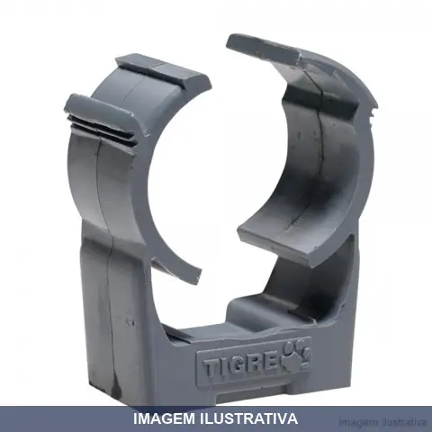
ABRAÇADEIRA CONDULETE TOP CINZA TIGRE
Abraçadeira fechada fabricada em PVC cinza para fixação de eletrodutos da linha Condulete Top. Indicação de Uso: Fixar o eletroduto Condulete Top na parede em instalações aparentes. Material e Resistência: PVC autoextinguível (não propaga chamas), resistente a impactos e agentes químicos. Vantagem Prática: Instalação simples sem necessidade de ferramentas adicionais.
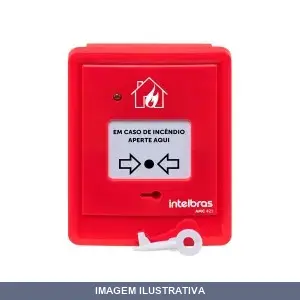
ACIONADOR MANUAL CONVENCIONAL SEM SIRENE AMC421 INTELBRAS
Acionador manual convencional para sistemas de alarme de incêndio. Sem sirene integrada, destina-se à ativação manual de alarmes em edificações. Instalação em parede para fácil acesso em caso de emergência.
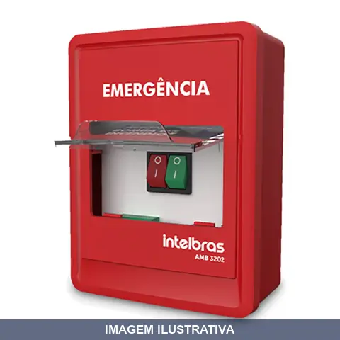
ACIONADOR MANUAL DE BOMBA AMB INTELBRAS
Acionador manual para acionamento de bomba. Indicação de Uso: Sistemas de bombeamento que requerem acionamento manual. Material e Resistência: Construído para uso em ambientes com exposição a água e umidade. Vantagem Prática: Permite acionamento direto da bomba sem necessidade de energia elétrica.

ACOPLADOR AZUL / 3P+T STECK
Os acopladores fazem conexão com os plugues, levando-se em conta a mesma tensão, corrente e número de pólos.

ACOPLADOR AZUL 2P+T LEGRAND
Os acopladores fazem conexão com os plugues, levando-se em conta a mesma tensão, corrente e número de pólos.
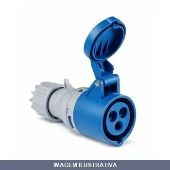
ACOPLADOR AZUL 2P+T SOPRANO
Os acopladores fazem conexão com os plugues, levando-se em conta a mesma tensão, corrente e número de pólos.
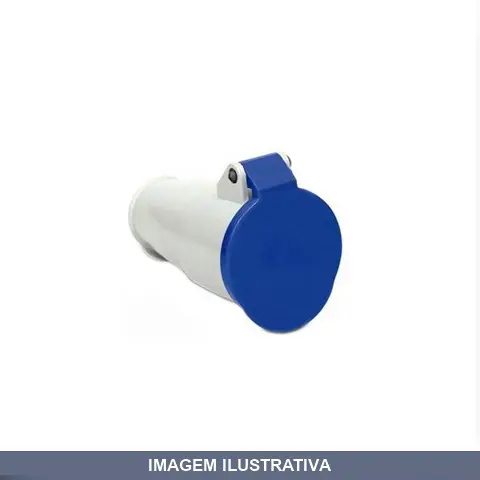
ACOPLADOR AZUL 3P+T LEGRAND
Os acopladores fazem conexão com os plugues, levando-se em conta a mesma tensão, corrente e número de pólos.

ACOPLADOR AZUL 3P+T SOPRANO
Os acopladores fazem conexão com os plugues, levando-se em conta a mesma tensão, corrente e número de pólos.

ACOPLADOR VERMELHO / 3P+T STECK
Os acopladores fazem conexão com os plugues, levando-se em conta a mesma tensão, corrente e número de pólos.
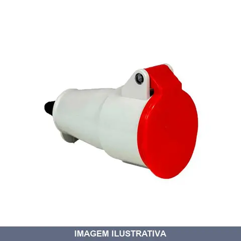
ACOPLADOR VERMELHO 3P+T
Os acopladores fazem conexão com os plugues, levando-se em conta a mesma tensão, corrente e número de pólos.
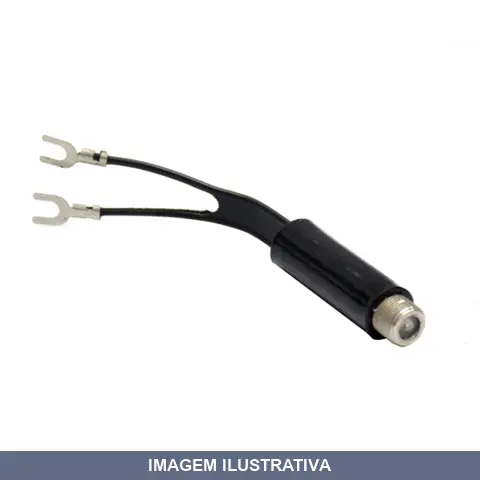
ADAPTADOR CABO COAXIAL CANETA A.SANTOS
Adaptador para cabo coaxial, indicado para conexões de sinal em instalações de TV, antena e telecomunicações. Facilita a interconexão entre cabos coaxiais de diferentes conectores, permitindo extensão ou redirecionamento de linhas de sinal.
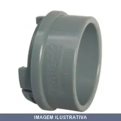
ADAPTADOR CONDULETE TOP CINZA TIGRE 1
Indicação de Uso: Fixar eletroduto na caixa Condulete Top®, para instalações elétricas aparentes em residências, comércios e indústrias. Material e Resistência: PVC antichama, autoextinguível, com resistência mecânica a impactos e à corrosão. Conforme norma ABNT NBR 15465. Vantagem Prática: Montagem por simples encaixe, sem necessidade de ferramentas ou parafusos.
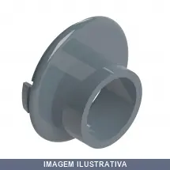
ADAPTADOR CONDULETE TOP CINZA TIGRE 1X1 2 [022034]
Indicação de Uso: Fixar eletroduto Condulete Top® em caixas de derivação, conforme configuração desejada. Material e Resistência: Fabricado em PVC autoextinguível, não propaga chamas. Resistente a intempéries, mecânica e corrosão. Conforme norma ABNT NBR 15465. Vantagem Prática: Montagem por simples encaixe, sem necessidade de ferramentas especiais.
![ADAPTADOR CONDULETE TOP CINZA TIGRE 1X3 4 [022040]](fotos/022040.webp)
ADAPTADOR CONDULETE TOP CINZA TIGRE 1X3 4 [022040]
Adaptador para Condulete Top Tigre de 3/4" (25mm), fabricado em PVC cinza autoextinguível. Resistente a intempéries e a corrosão, com alta resistência mecânica. Utilizado para fixar o eletroduto na caixa Condulete Top conforme a configuração desejada. Instalação por simples encaixe, sem necessidade de ferramentas. Conforme norma ABNT NBR 15465.
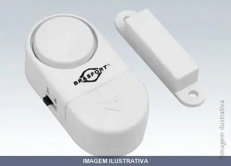
ALARME PARA PORTA OU JANELA BRASFORT
Indicação de Uso: Portas e janelas de residências, comércios e indústrias. Material e Resistência: Componentes eletrônicos, nylon, metal e PVC. Alimentação por 3 baterias CR-2015 1,5V (inclusas). Vantagem Prática: Sensor magnético que emite alarme sonoro (90 dB) ao detectar abertura. Instalação sem fios, pronta para usar. Botão liga/desliga.
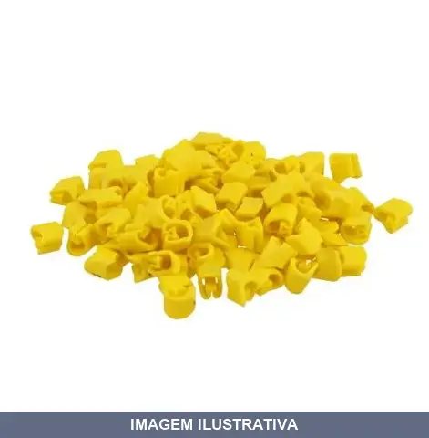
ANILHA DE ENCAIXA PARA FIOS A COM SFOR
Indicação de Uso: Anilha de encaixe para fixação e organização de fios e cabos em instalações elétricas. Material e Resistência: Construída em material resistente, apropriada para suportar fios. Vantagem Prática: Facilita o encaixe rápido dos fios, mantendo-os organizados e protegidos.

ANILHA DE ENCAIXA PARA FIOS B COM SFOR
Indicação de Uso: Fixação e organização de fios tipo B em instalações elétricas, painéis e quadros de distribuição. Material e Resistência: Construção em material resistente adequado para suportar fios. Vantagem Prática: Encaixe prático que facilita a instalação e organização de fiação sem necessidade de ferramentas adicionais. Embalagem com 100 peças.

ANILHA DE ENCAIXA PARA FIOS C COM SFOR
Indicação de Uso: Fixação e organização de fios tipo C em instalações elétricas e de telecomunicações. Material e Resistência: Fabricada em material apropriado para suportar e manter fios em posição segura. Vantagem Prática: Facilita a organização de cabeamentos e reduz tempo de instalação.
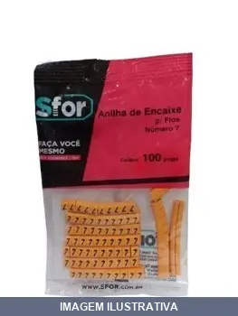
ANILHA DE ENCAIXA PARA FIOS NUMERO COM SFOR
Indicação de Uso: Organização e fixação de fios elétricos em instalações prediais e industriais. Material e Resistência: Anilha de encaixe fabricada em material plástico resistente. Vantagem Prática: Facilita o agrupamento e a identificação de fios, mantendo-os organizados e protegidos contra abrasão.

ANTENA AE-850I ELEMENTOS COM KIT INDUSAT
Antena externa digital Indusat com 10 elementos para recepção de sinais VHF, UHF e HDTV. Produzida em alumínio com 95% de pureza, com dipolos em alumínio maciço. Acompanha mastro e cabo coaxial de 16 metros. Compatível com televisores e conversores digitais. Impedância 75 Ohms, conector F fêmea. Operação 45-230 MHz e 470-862 MHz, canais 2 a 69. Embalagem: 37x33,5x7 cm. Garantia 1 ano.
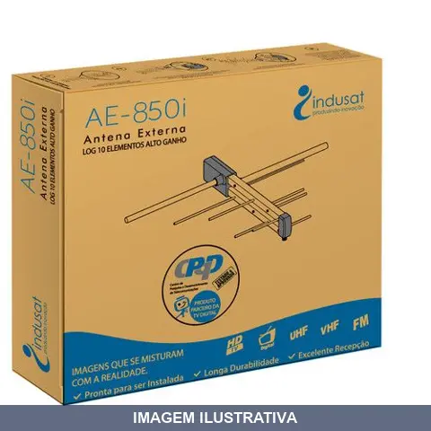
ANTENA AE-850I ELEMENTOS S/KIT INDUSAT
Antena externa digital para TV com 10 elementos. Captação de sinais VHF, UHF e HDTV. Construída em alumínio com 95% de pureza com dipolos em alumínio maciço. Faixa de frequência 45 a 230 MHz e 470 a 862 MHz. Impedância 75 ohms. Conector F fêmea dianteiro. Compatível com televisores e conversores digitais.
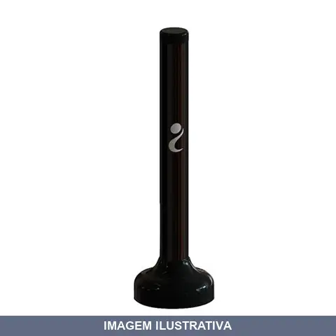
ANTENA INTERNA 950I COM CABO INDUSAT
Antena Interna Portátil AI-950i Antena digital discreta e portátil de alta perfomance. Capta sinal VHF, UHF/HDTV e FM.
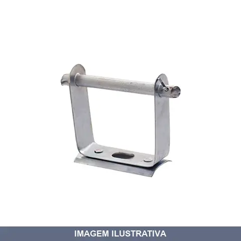
ARMACAO PADRAO ROLDANA MEVISA 01
Indicação de Uso: Armação padrão para roldana, aplicável em sistemas de polias e movimentação de cargas. Material e Resistência: Estrutura em metal, projetada para suportar aplicações convencionais. Vantagem Prática: Facilita a instalação e a movimentação de materiais em trabalhos de levantamento e transporte.
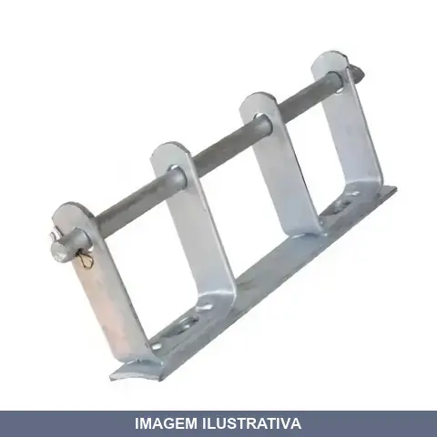
ARMACAO PADRAO ROLDANA MEVISA 02
Indicação de Uso: Armação padrão com duas roldanas, utilizada em sistemas de polias e talhas para movimentação e transporte de cargas. Aplicável em estruturas fixas e equipamentos de elevação. Material e Resistência: Construída em metal resistente, adequada para uso em ambientes internos e externos. Vantagem Prática: Facilita o deslocamento de cargas através do sistema de duas roldanas, reduzindo esforço físico em operações de içamento e movimentação.
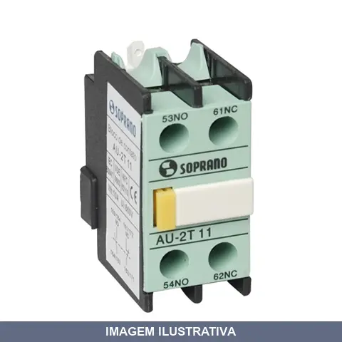
AUXILIAR DE CONTATO BL AU2T- (1NA+1NF) SOPRANO
Bloco de contato auxiliar frontal com 1 contato normalmente aberto (1NA) e 1 normalmente fechado (1NF). Indicado para montagem frontal em contatores Soprano da linha CS(T). Compatível com contatores de 9A a 800A. Utilizado para comando, sinalização e controle em circuitos de automação industrial. Atende norma NBR IEC 60947-4.
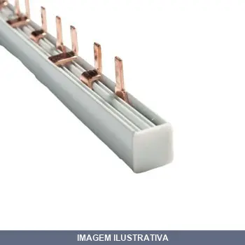
BAR TIPO FLUT BIF POLOS BRUM
Indicação de Uso: Distribuição de energia elétrica em instalações bifásicas, conectando circuitos através de barramentos. / Material e Resistência: Barramento tipo flut com capacidade de 100A, dimensionado para 18 polos. / Vantagem Prática: Permite conexões múltiplas e organizadas de condutores, facilitando manutenção e ampliação de circuitos.
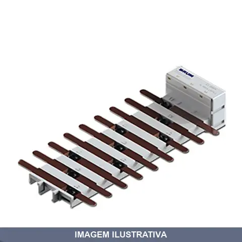
BAR TIPO FLUT TRI POLOS BRUM
Indicação de Uso: Barramento de distribuição elétrica trifásico para quadros de comando e painéis de controle industrial. / Material e Resistência: Construção em cobre ou alumínio com isolação adequada, suporta corrente nominal de 100A. / Vantagem Prática: Conexão organizada e segura de múltiplos circuitos trifásicos em instalações elétricas.
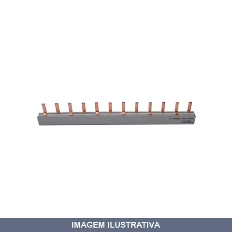
BARRAMENTO BIFASICO PARA DISJ SOPRANO
Barramento bifásico destinado à distribuição de energia elétrica em painéis e quadros de controle. Compatível com até 6 disjuntores. Indicado para instalações elétricas prediais e industriais que necessitam de divisão de circuitos. Material condutor apropriado para aplicações de média demanda elétrica.
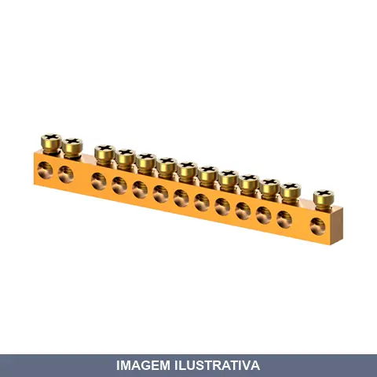
BARRAMENTO NEUTRO/TERRA COM FUROS SOPRANO
Barramento de distribuição para funções de neutro e terra em painéis elétricos. Confeccionado em material condutor adequado para instalações elétricas. Possui cinco furos para conexão de condutores. Aplicável em quadros de distribuição e painéis de controle elétrico residencial, comercial e industrial.
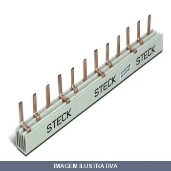
BARRAMENTO TRIFASICO PARA DISJUNTOR DIN ELETROMAR
Barramento trifásico destinado à distribuição de energia elétrica em painéis e quadros de comando. Compatível com disjuntores modulares padrão DIN. Aplicação em instalações elétricas residenciais, comerciais e industriais para conexão e organização de circuitos trifásicos.
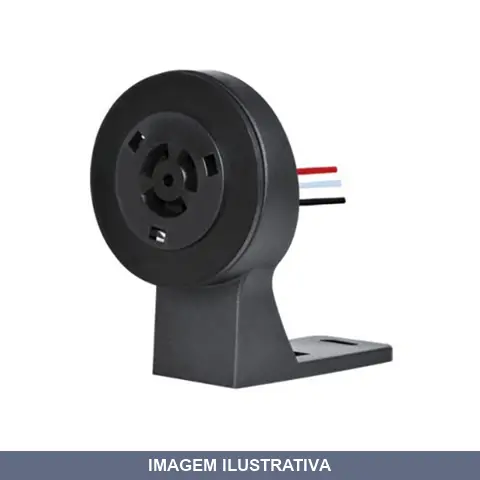
BASE RELE FOTO MAR-G
Indicação de Uso: Suporte para fixação e posicionamento de relés fotoelétricos e fotoeletrônicos em instalações externas. Material e Resistência: Plástico resistente a intempéries, chuva, umidade e radiação ultravioleta. Vantagem Prática: Permite rotação de 360° para orientação em postes e paredes.
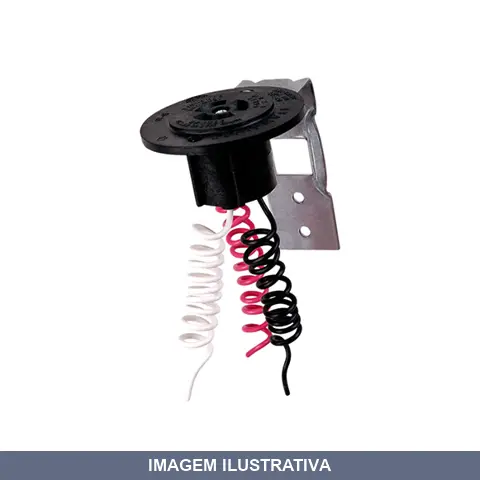
BASE RELE FOTO METAL BP- TECNOWATT
Base para relé fotoelétrico em plástico resistente, com suporte metálico para fixação. Indicação de Uso: instalações elétricas que utilizam relés foto para automação e controle de iluminação. Vantagem Prática: facilita a montagem e fixação do relé fotoelétrico em painéis e quadros elétricos.
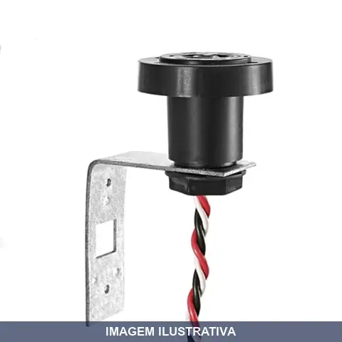
BASE RELE FOTO METAL EXATRO
Base para relé fotoelétrico em metal. Indicada para instalação e fixação de relés fotoelétricos em sistemas de automação, iluminação e controle de presença. Construída em metal, oferece resistência e estabilidade para suportar o componente eletrônico. Facilita a montagem e substituição do relé.
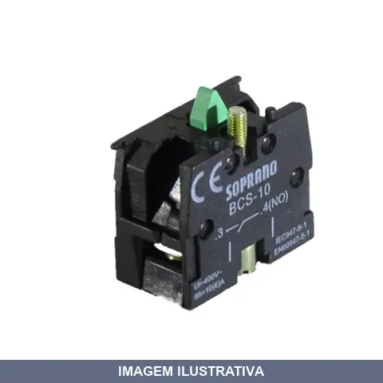
BLOCO DE CONTATO VERDE NA SOPRANO
Bloco de contato auxiliar verde para painéis de comando e controle elétrico em sistemas de automação. Indicação de Uso: Montagem em contatores e relés para sinalização e comando de circuitos de corrente alternada. Material e Resistência: Contato em prata, corpo em policarbonato preto, com atuador verde, isolamento AC 400V (50-60Hz), corrente térmica convencional 10A, durabilidade mecânica de 1.000.000 operações, durabilidade elétrica de 500.000 operações, conforme normas IEC 60.947-5-1 e EN 60.947-5-1. Vantagem
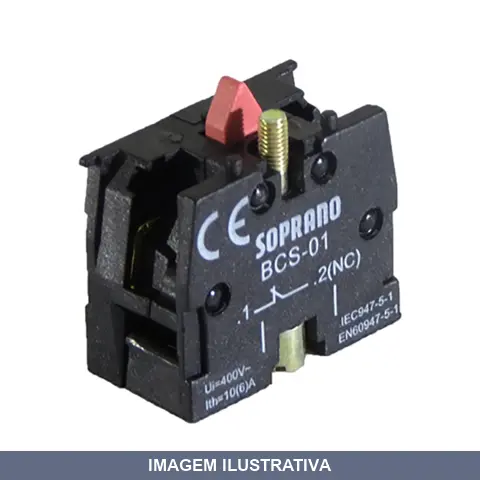
BLOCO DE CONTATO VERMELHO NF SOPRANO
BLOCO DE CONTATO VERMELHO NF Normas: IEC 60.947-1, IEC 60.947-5-1 Tensão isolamento: AC 400V (50 ~ 60Hz) Corrente térmica convencional Ith: 10A Durabilidade mecânica: 1.000.000 operações Durabilidade elétrica: 500.000 operações
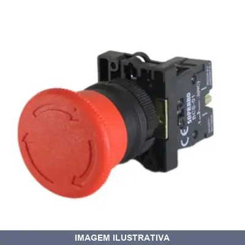
BOTAO DE EMERGENCIA DESTRAVA GIRANDO COG40 AC SOPRAN
Indicação de Uso: Paradas de emergência e situações de alto risco em painéis de máquinas e equipamentos industriais. Material e Resistência: Plástico vermelho, 10A de corrente térmica, durabilidade de 500.000 operações elétricas e 1.000.000 operações mecânicas. Vantagem Prática: Destravamento giratório previne acionamentos acidentais. Conforme norma IEC 60947-1.
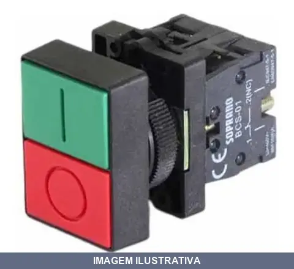
BOTAO PULSADOR DUPLO S/LED NA+NF SOPRANO
Indicação de Uso: Controle de máquinas e circuitos elétricos, acionamentos industriais e comerciais. Material e Resistência: Plástico, cores vermelho/verde, voltagem nominal 400V, corrente térmica convencional até 10A. Vantagem Prática: Botão duplo sem LED com contatos NA+NF (1 normalmente aberto e 1 normalmente fechado), pulsador com retorno, não requer retenção.
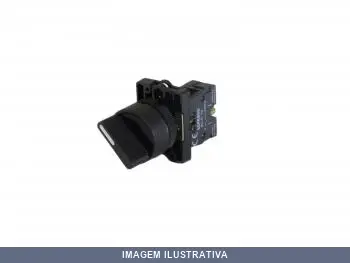
BOTAO SELETOR MAN CURTA 3P FIXOS NA+NA SOPRANO
BOTAO SELETOR MAN CURTA 3P FIXOS NA+NA Normas: IEC 60.947-1, IEC 60.947-5-1 Tensão isolamento: AC 400V (50 ~ 60Hz) Corrente térmica convencional Ith:10A Durabilidade mecânica Comutadores e chave seletora: 500.000 operações Durabilidade elétrica Comutadores e chave seletora: 250.000 operações

BOTAO SELETOR MAN CURTO 2P FIXOS NA SOPRANO
Botão seletor manual de acionamento curto com 2 posições fixas. Indicação de Uso: Comando e seleção em painéis de controle elétrico e máquinas industriais. Material e Resistência: Construção robusta conforme normas IEC 60.947-1 e IEC 60.947-5-1, tensão de isolamento AC 400V (50~60Hz), corrente térmica convencional 10A, durabilidade mecânica de 500.000 operações e elétrica de 250.000 operações. Vantagem Prática: Operação segura e confiável em aplicações de controle industrial.
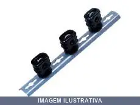
BRAQUETE LEVE POLOS REX
Indicação de Uso: Fixação e suporte de condutores e cabos elétricos em instalações elétricas prediais e industriais. Material e Resistência: Construção leve adequada para aplicações com menor demanda de carga. Vantagem Prática: Facilita a passagem e organização de até três condutores, simplificando a instalação e manutenção de circuitos elétricos.
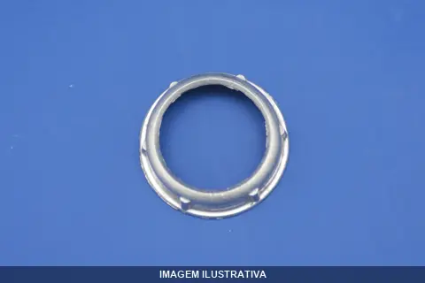
BUCHA ALUMINIO ZAMAC
Indicação de Uso: Componente de fixação e suporte mecânico em estruturas, equipamentos e instalações diversas. Material e Resistência: Fabricada em alumínio e zamac, oferecendo leveza e resistência à corrosão. Vantagem Prática: Proporciona fixação segura e durável com facilidade de instalação e remoção.
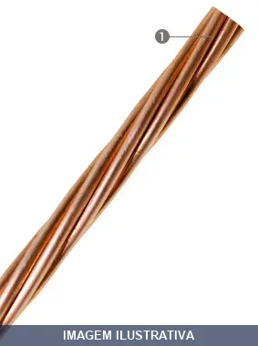
CABO COBRE NU CORFIO
CABO DE COBRE NU MOLE 16,00MM2 COBRE UTILIZAÇÃO: Condutor rígido recomendado para sistemas de aterramento. CONSTRUÇÃOCondutor formado por fios de cobre nu, têmpera mole, encordoamento classe 2. NORMA APLICÁVELNBR 5349.
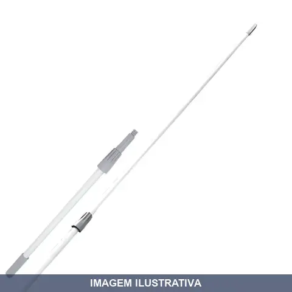
CABO EXTENSAO COM PROLONGADOR PERFEC
Indicação de Uso: Cabo extensor com prolongador de 2,4m, indicado para uso com acessórios de limpeza, como rodo e vassoura, em ambientes internos e externos. Vantagem Prática: Oferece maior alcance para limpeza de áreas altas, permitindo trabalhar a distância sem necessidade de escada ou apoio.

CABO FLEXIVEL ALTA TEMPERATURA SILICONE ARGENTUM
Indicação de Uso: Aplicações elétricas que exigem flexibilidade, automação, eletrônicos, instalações elétricas, motores e resistências. Material e Resistência: Isolação em borracha de silicone. Condutor de cobre eletrolítico. Estabilidade térmica até 200°C. Flexível a temperaturas inferiores a 0°C (até -70°C). Resistente a ácidos, graxas, umidade e óleo. Tensão 750V, norma NBR 16093.
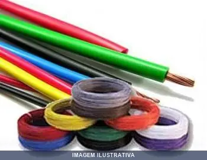
CABO FLEXIVEL AMARELO CORFIO
Condutor com características de não propagação e autoextinção do fogo. Recomendado para aplicações onde exigem-se cabos com maior flexibilidade, como em redes de distribuição de energia de prédios residenciais, comerciais e industriais, ligações de painéis e motores elétricos.
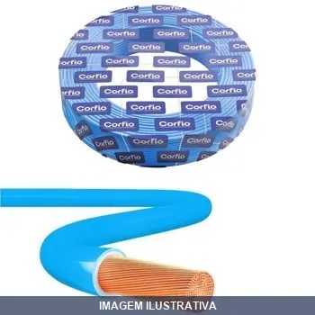
CABO FLEXIVEL AZUL CORFIO
CABO FLEXIVEL 750V 1,5MM2 BOBINA COM 1400 METROS - AZUL COD: XBB0106-AZ Condutor com características de não propagação e autoextinção do fogo. Recomendado para aplicações onde exigem-se cabos com maior flexibilidade, como em redes de distribuição de energia de prédios residenciais, comerciais e industriais, ligações de painéis e motores elétricos.
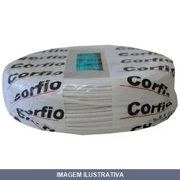
CABO FLEXIVEL BRANCO CORFIO
CABO FLEXIVEL 750V 1,5MM2 BOBINA COM 1400 METROS - BRANCO COD: XBB0106- BC Condutor com características de não propagação e autoextinção do fogo. Recomendado para aplicações onde exigem-se cabos com maior flexibilidade, como em redes de distribuição de energia de prédios residenciais, comerciais e industriais, ligações de painéis e motores elétricos.
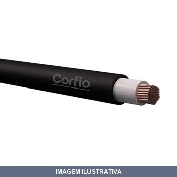
CABO FLEXIVEL KV PRETO CORFIO
Indicação de Uso: Instalações em prédios residenciais, comerciais, industriais e subestações; aplicações fixas com proteção mecânica e resistência a ambientes úmidos. Material e Resistência: Condutor de cobre nu classe 4/5; isolação HEPR 90°C; cobertura PVC/ST2 90°C. Tensão 1kV. Conforme ABNT NBR 7286. Vantagem Prática: Flexível e antichama; adequado para eletrodutos aparentes, embutidos ou enterrados.
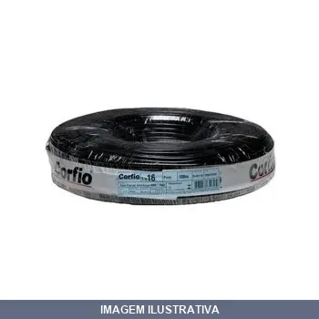
CABO FLEXIVEL PRETO CORFIO
CABO FLEXIVEL 750V 1,5MM2 BOBINA COM 1400 METROS - PRETO Condutor com características de não propagação e autoextinção do fogo. Recomendado para aplicações onde exigem-se cabos com maior flexibilidade, como em redes de distribuição de energia de prédios residenciais, comerciais e industriais, ligações de painéis e motores elétricos.
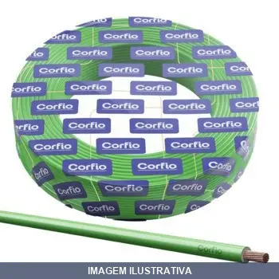
CABO FLEXIVEL VERDE CORFIO
CABO FLEXIVEL NEXTON 1,50 MM2 VERDE CARRETEL Condutor com características de não propagação e autoextinção do fogo. Recomendado para aplicações onde exigem-se cabos com maior flexibilidade, como em redes de distribuição de energia de prédios residenciais, comerciais e industriais, ligações de painéis e motores elétricos.
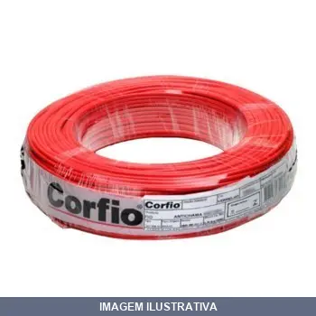
CABO FLEXIVEL VERMELHO CORFIO
CABO FLEXIVEL NEXTRON 1,50MM VERMELHO CARRETEL Condutor com características de não propagação e autoextinção do fogo. Recomendado para aplicações onde exigem-se cabos com maior flexibilidade, como em redes de distribuição de energia de prédios residenciais, comerciais e industriais, ligações de painéis e motores elétricos.

CABO FLEXIVEL VERMELHO HO CORFIO
CABO FLEXIVEL 750V 10,0MM2 BOBINA COM 500 METROS - VERMELHO Condutor com características de não propagação e autoextinção do fogo. Recomendado para aplicações onde exigem-se cabos com maior flexibilidade, como em redes de distribuição de energia de prédios residenciais, comerciais e industriais, ligações de painéis e motores elétricos.
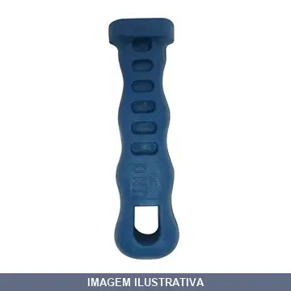
CABO LIMA PVC COFEMA UNOPLST
Cabo (empunhadura) de PVC para lima, utilizado para fixar e dar pegada à ferramenta durante o uso manual. Material isolante oferece proteção contra umidade e abrasão. Aplicação em ambientes internos e externos.
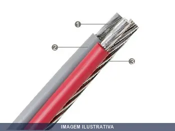
CABO MULTIPLEXADO ALU/XLPE CORFIO
Cabo de Alumínio Multiplexado 0,6/1 kV UTILIZAÇÃO: Cabo de potência multiplexado autossustentado, projetado para circuitos de alimentação e distribuição de energia em tensões de até 0,6/1 KV, em instalações aéreas fixadas em postes ou fachadas. CONSTRUÇÃO Isolação de XLPE 90°C - composto termofixo extrudado à base de polietileno. Condutor fase formado por fios de alumínio 1350, encordoamento classe 2. Condutor neutro formado por fios de alumínio 1350, têmpera H19 (CA), encordoamento classe 2. I
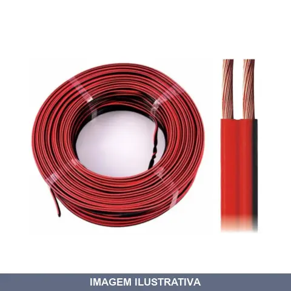
CABO PARALELO PARA SOM / DNI
Cabo paralelo para distribuição de energia em sistemas de som. Condutor de potência adequado para instalações de equipamentos de áudio de médio porte que demandam transmissão de energia elétrica. Material condutor apropriado para uso em instalações internas.
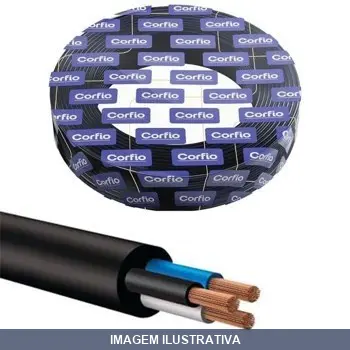
CABO PP CONTROLE CORFIO
Indicação de Uso: Cabo de controle para aplicações em sistemas elétricos e de automação que demandam múltiplos condutores. Material e Resistência: Isolamento em PVC que proporciona proteção contra abrasão e intempéries. Vantagem Prática: Múltiplos condutores integrados permitem reduzir quantidade de passagens, simplificando a instalação e organização de fiações em painéis e circuitos.

CABO PP CORFIO 2X00,75MM
Cabo de polipropileno (PP) flexível indicado para aplicações em áreas secas e ambientes internos protegidos. Material resistente a abrasão e com isolação que oferece proteção contra umidade. Adequado para usos gerais em instalações onde não há exposição a calor intenso ou ambientes úmidos constantes.

CABO PP CORFIO 2X01,00MM
CABO PP 500V 2 X 1,0MM2 - PRETO CABO FLEX PP NEXTRON 2X1,00MM PRETO CARRETEL UTILIZAÇÃO: Condutor recomendado para ligação de equipamentos elétricos móveis ou fixos, e demais aplicações que exigem boa flexibilidade do cabo e proteção mecânica do material isolante. CONSTRUÇÃOCondutor flexível de cobre nu, têmpera mole, encordoamento classe 5.Isolação de PVC/D 70°C - composto termoplástico extrudado à base de policloreto de vinila, com características especiais para não propagação e autoextinção
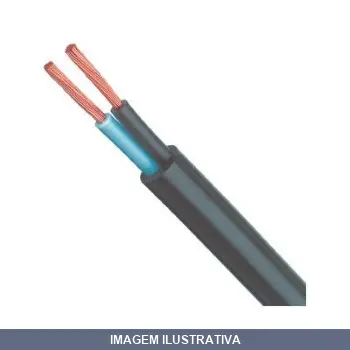
CABO PP CORFIO 2X01,50MM
CABO PP 500V 2 X 1,5MM2 - PRETO COD: XB0156N - PT CABO FLEX PP NEXTRON 2X1,50MM2 PRETO CARRETEL UTILIZAÇÃO: Condutor recomendado para ligação de equipamentos elétricos móveis ou fixos, e demais aplicações que exigem boa flexibilidade do cabo e proteção mecânica do material isolante. CONSTRUÇÃOCondutor flexível de cobre nu, têmpera mole, encordoamento classe 5.Isolação de PVC/D 70°C - composto termoplástico extrudado à base de policloreto de vinila, com características especiais para não propaga

CABO PP CORFIO 2X02,50MM
Cabo flexível com isolamento em polipropileno (PP), adequado para aplicações que exigem flexibilidade e proteção mecânica. Recomendado para ligação de equipamentos elétricos móveis ou fixos em ambientes que demandem resistência e durabilidade do material isolante.

CABO PP CORFIO 2X04,00MM
Cabo flexível com isolamento em polipropileno (PP), apropriado para ligação de equipamentos elétricos móveis ou fixos que necessitam de flexibilidade e proteção mecânica. Indicação de Uso: Aplicações gerais em instalações elétricas que exigem bom grau de flexibilidade do condutor. Material e Resistência: Isolamento em polipropileno, condutor de cobre. Vantagem Prática: Excelente flexibilidade e resistência mecânica para manejo em ambientes de trabalho.

CABO PP CORFIO 2X06,00MM
Cabo flexível de cobre com isolação em polipropileno (PP), condutor de têmpera mole com encordoamento classe 5. Indicado para ligações de equipamentos elétricos móveis e fixos que exigem flexibilidade e proteção mecânica. Material resistente e durável para uso em instalações internas e aplicações gerais de ferragem elétrica.

CABO PP CORFIO 2X10.00MM
Condutor recomendado para ligação de equipamentos elétricos móveis ou fixos, e demais aplicações que exigem boa flexibilidade do cabo e proteção mecânica do material isolante. LIVRE DE METAIS PESADOS CONSTRUÇÃO Condutor flexível de cobre nu, têmpera mole, encordoamento classe 5.Isolação de PVC/D 70°C - composto termoplástico extrudado à base de policloreto de vinila, com características especiais para não propagação e autoextinção do fogo.Cobertura de PVC/ST5 70°C - composto termoplástico extru
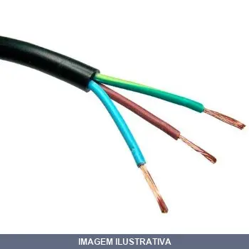
CABO PP CORFIO 3X01,50MM
CABO PP 500V 3 X 1,5MM2 - PRETO COD: XB0166N-PT CABO FLEX PP NEXTRON 3X1,50MM2 PRETO BOBINA UTILIZAÇÃO: Condutor recomendado para ligação de equipamentos elétricos móveis ou fixos, e demais aplicações que exigem boa flexibilidade do cabo e proteção mecânica do material isolante. CONSTRUÇÃOCondutor flexível de cobre nu, têmpera mole, encordoamento classe 5.Isolação de PVC/D 70°C - composto termoplástico extrudado à base de policloreto de vinila, com características especiais para não propagação

CABO PP CORFIO 3X02,50MM
Indicação de Uso: Condutor flexível recomendado para ligação de equipamentos elétricos móveis ou fixos, e demais aplicações que exigem boa flexibilidade e proteção mecânica. / Material e Resistência: Condutor de cobre nu, têmpera mole, encordoamento classe 5. Isolação em polipropileno. / Vantagem Prática: Oferece excelente flexibilidade e resistência mecânica para uso em ambientes diversos.

CABO PP CORFIO 3X04,00MM
Cabo flexível de cobre com isolação em PVC, condutor de têmpera mole classe 5, adequado para ligação de equipamentos elétricos móveis e fixos. Oferece boa flexibilidade e proteção mecânica do material isolante. Recomendado conforme norma NBR 13248.

CABO PP CORFIO 3X06,00MM
CABO FLEXIVEL 1KV 3 X 6,0MM2 HEPR NA COR PRETA COD: XB1084E-PT UTILIZAÇÃO: Condutor recomendado para ligação de equipamentos elétricos móveis ou fixos, e demais aplicações que exigem boa flexibilidade do cabo e proteção mecânica do material isolante.

CABO PP CORFIO 3X10,00MM
Cabo flexível de cobre para instalações elétricas em equipamentos móveis e fixos. Condutor nu de têmpera mole com encordoamento classe 5. Isolação em PVC termoplástico. Indicação de Uso: ligações de equipamentos elétricos, quadros de comando e demais aplicações que exigem flexibilidade e proteção mecânica. Vantagem Prática: excelente manuseio e durabilidade em ambientes de trabalho.

CABO PP CORFIO 4X01,50MM
CABO PP 500V 4 X 1,5MM2 - PRETO COD: XB0176N- PT UTILIZAÇÃO: Condutor recomendado para ligação de equipamentos elétricos móveis ou fixos, e demais aplicações que exigem boa flexibilidade do cabo e proteção mecânica do material isolante. CONSTRUÇÃOCondutor flexível de cobre nu, têmpera mole, encordoamento classe 5.Isolação de PVC/D 70°C - composto termoplástico extrudado à base de policloreto de vinila, com características especiais para não propagação e autoextinção do fogo.Cobertura de PVC/ST5

CABO PP CORFIO 4X02,50MM
Indicação de Uso: Condutor recomendado para ligação de equipamentos elétricos móveis ou fixos, e demais aplicações que exigem boa flexibilidade do cabo e proteção mecânica. / Material e Resistência: Condutor flexível de cobre nu, têmpera mole, encordoamento classe 5. Isolação de PVC termoplástico, suportando temperatura de 70°C. Conforme norma NBR 5929. / Vantagem Prática: Oferece flexibilidade adequada para instalações dinâmicas com proteção mecânica do isolante.

CABO PP CORFIO 4X04,00MM
Cabo de cobre flexível com isolação em PVC, indicado para ligação de equipamentos elétricos móveis e fixos que demandam boa flexibilidade e proteção mecânica. Condutor de cobre nu em têmpera mole com encordoamento classe 5, oferecendo resistência e durabilidade em aplicações diversas.
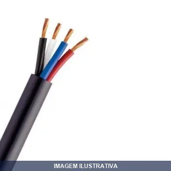
CABO PP CORFIO 4X06,00MM
Cabo elétrico flexível com múltiplos condutores de cobre. Indicação de Uso: instalações elétricas em ambientes internos e externos, passagem de corrente em circuitos de baixa tensão. Material e Resistência: condutores de cobre com isolamento em PVC, resistente à umidade e flexível. Vantagem Prática: facilita instalação em eletrodutos e canaletas, permitindo conexões seguras em diversos tipos de ligações elétricas.

CABO PP CORFIO 4X10.00MM
Cabo elétrico flexível PP com 4 vias, condutores de cobre, capa externa em material resistente, isolação colorida para identificação dos fios. Indicado para instalações elétricas em ambientes internos e externos, adequado para uso geral em obras e aplicações que exijam condução de energia.

CABO PP CORFIO 5X1.50MM
Indicação de Uso: Instalações elétricas residenciais e comerciais, painéis de comando e circuitos que necessitam condutor flexível. Material e Resistência: Cabo com isolamento em polipropileno, composto por 5 condutores de cobre, apropriado para tensão nominal de 450/750V. Vantagem Prática: Flexibilidade para passagem em espaços reduzidos e facilita conexões em terminais e caixas de distribuição.
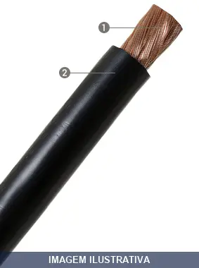
CABO SOLDA CORFIO
CABO SOLDA 25,0MM2 NA COR PRETA UTILIZAÇÃO: Condutor flexível coberto recomendado para ligação da fonte de energia ao eletrodo de máquinas de solda a arco.

CABO UNIPOLAR CU KV ISOLANTE EPR PRETO
Condutor com características de não propagação e autoextinção do fogo. Recomendado para aplicações onde exigem-se cabos com maior flexibilidade, como em redes de distribuição de energia de prédios residenciais, comerciais e industriais, ligações de painéis e motores elétricos.
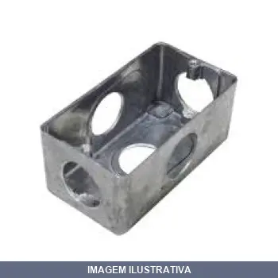
CAIXA ALUMINIO DAILET MULT DM FUROS DAISA
Caixa de passagem em alumínio para instalação de eletroduto, tipo X com 5 furos de saída. Sem tampa. Adequada para equipamentos CEP e CEG em sistemas de instalação comum com eletroduto PVC. Facilita a distribuição e organização de passagens elétricas em obras e instalações prediais.
CAIXA ALUMINIO DAILET MULT DM L FUROS DAISA
Caixa de passagem em alumínio para eletroduto, tipo L com 4 furos de saída. Destinada à instalação de equipamentos CEP e CEG em sistemas de eletrodutos PVC. Sem tampa. Conforme NBR 5624 e NBR 6150.
CAIXA ARST EMBUTIR COM TOMADA SEM DISJUNTOR ILUMI
Indicação de Uso: Caixa para embutir em parede, destinada à instalação de tomada de 20A em circuitos elétricos residenciais e comerciais. / Material e Resistência: Fabricada em plástico isolante resistente à umidade, adequada para ambientes internos. Tensão nominal 250V. / Vantagem Prática: Instalação embutida em alvenaria, proporcionando acabamento limpo e integrado à parede, com tomada 2P+T já acoplada.
CAIXA ARST SOBREPOR COM TOMADA COM DISJUNTOR ILUMI
Caixa de sobrepor com disjuntor unipolar e tomada 20A 250V. Indicação de Uso: instalações elétricas residenciais e comerciais que requerem proteção individual. Material e Resistência: plástico resistente, disjuntor unipolar, tomada padrão NBR. Vantagem Prática: formato compacto que otimiza espaço na parede.
CAIXA ARST SOBREPOR COM TOMADA SEM DISJUNTOR BIP ILUMI
Caixa de tomada bipolar 20A para instalação sobrepor em parede. Produto composto por caixa e tomada, sem disjuntor incorporado. Indicação de Uso: Instalações elétricas residenciais e comerciais que requerem ponto de tomada com proteção bipolar. Vantagem Prática: Instalação rápida em superfície, ideal para adequações e ampliações de circuitos elétricos.
CAIXA ARST SOBREPOR COM TOMADA SEM DISJUNTOR UNIP ILUMI
Caixa para sobrepor em parede com tomada de 20A para 250V, sem disjuntor incorporado. Indicação de Uso: Instalações elétricas residenciais e comerciais que já possuem proteção em quadro de distribuição. Material e Resistência: Construção apropriada para ambientes internos. Vantagem Prática: Solução compacta para instalação de tomadas sem necessidade de espaço para disjuntor individual.
CAIXA CONDULETE TOP CINZA ENT TIGRE
Caixa de derivação com 5 entradas para eletrodutos Condulete Top. Fabricada em PVC anti-chama, cor cinza. Permite múltiplas opções de montagem e uso de várias bitolas (½", ¾" e 1") mediante adaptadores. Simples encaixe, sem necessidade de ferramentas especiais. Para instalações elétricas aparentes em ambientes residenciais, comerciais e industriais.

CAIXA DE MEDIDOR MONOFASICO CMD1 (PEQUENA) TAF
CAIXA MEDIÇÃO MONOFASICA CMD1 N3 PT DISJUNTOR À DIREITA ENERGISA
CAIXA DE MEDIDOR POLIFASICO CMD3 (GRANDE) TAF
Caixa para medidor polifásico CMD3 N3 confeccionada em policarbonato com proteção UV e antichama. Possui disjuntor posicionado à direita, janela de acesso ao disjuntor, pré-cortes nas faces externas para entrada de eletrodutos e permite aplicação de lacre e parafuso de segurança. Indicação de Uso: instalação de medidores em padrão muro. Material e Resistência: policarbonato com proteção UV e antichama. Vantagem Prática: facilita manutenção e atende padrões de segurança de concessionárias de

CAIXA DISJ EMB DIN SOPRANO
Caixa de distribuição embutida para montagem em paredes, comporta até 4 disjuntores IEC. Fabricada em termoplástico de engenharia com grau de proteção IP40. Tampa em ABS com abertura de 110°. Atende às normas NBR 6146, NBR IEC 60670-1 e NBR IEC 60439-3. Ideal para instalações elétricas residenciais e comerciais de pequeno porte.

CAIXA DISJUNTOR EMBUTIR DIN OU NEMA 06 04
Indicação de Uso: Quadro de distribuição para instalações elétricas residenciais e comerciais, compatível com disjuntores NEMA ou DIN. Material e Resistência: Fabricado em PVC isolante e antichama, com estrutura reforçada para maior durabilidade. Atende às normas nacionais e internacionais. Vantagem Prática: Instalação embutida na parede com flexibilidade de uso para disjuntores de diferentes normas.

CAIXA DISJUNTOR EMBUTIR DIN OU NEMA 09 06
Quadro de distribuição para embutir em parede. Comporta até 9 disjuntores padrão DIN ou 6 disjuntores padrão NEMA. Fabricado em material resistente a impactos e com propriedade anti-chama. Atende normas nacionais e internacionais. Indicado para instalações elétricas residenciais e comerciais que necessitam organização e proteção de circuitos.
CAIXA DISJUNTOR EMBUTIR DIN OU NEMA 12 08
Indicação de Uso: Quadro de distribuição para instalações elétricas residenciais e comerciais, compatível com disjuntores NEMA ou DIN. Material e Resistência: Fabricado em PVC isolante e antichama, com estrutura reforçada para maior durabilidade. Atende às normas nacionais e internacionais. Vantagem Prática: Instalação embutida na parede com flexibilidade de uso para disjuntores de diferentes normas.
CAIXA DISJUNTOR EMBUTIR DIN OU NEMA 12 08 [000084]
BR 12 QUADRO DE EMBUTIR PARA DISTRIBUIÇÃO ATE 12 DISJUNTOR DIN OU 8 NEMA As caixas BR são fabricadas de forma a serem resistentes a fortes impactos e anti-chama, características que proporcionam maior segurança. Segura e eficaz, obedece a padrões nacionais e internacionais. Seu design arrojado possibilita o maior espaço interno existente no mercado. Permitem a expansão através do acoplamento em módulos. Sua ampla linha de acessórios facilita a montagem. Modelos de sobrepor e embutir, com portas

CAIXA DISJUNTOR EMBUTIR DIN OU NEMA 24 16
Indicação de Uso: Quadro de distribuição para instalações elétricas residenciais e comerciais, compatível com disjuntores NEMA ou DIN. Material e Resistência: Fabricado em PVC isolante e antichama, com estrutura reforçada para maior durabilidade. Atende às normas nacionais e internacionais. Vantagem Prática: Instalação embutida na parede com flexibilidade de uso para disjuntores de diferentes normas.
CAIXA DISJUNTOR EMBUTIR DIN SOPRANO
QUADRO DISTRIBUIÇÃO EMBUTIDO 08 IEC-PB Características: • Produzido em termoplástico de engenharia; • Grau de proteção IP40; • Normas NBR 6146, NBR IEC 60670-1, NBR IEC 60439-3; • Montagem em paredes de alvenaria; • Tampa em ABS, com abertura de 110°, em duas opções de cor: fumê e branca. Fechamento por pressão; • Etiquetas para identificação dos circuitos; • Entradas de eletrodutos práticas, com pré-marcações em todas as faces do quadro; • Suporte para barras de neutro/terra; • Acessórios opcio
CAIXA DISJUNTOR SOBREPOR DIN OU NEMA ILUMI
Caixa de distribuição para instalação em superfícies planas (sobrepor). Compatível com 1 disjuntor padrão NEMA ou 2 disjuntores padrão DIN. Fabricada em material resistente. Indicada para proteção de circuitos elétricos em instalações residenciais e comerciais.
CAIXA LUZ CHAPA ARCOIR
CAIXINHA LUZ CHAPA 4 X 2 Caixas de Luz Metálicas Caixas de luz, de interruptores, caixas box, são muitos os nomes dados e esse produto. Isentas de soldas em sua montagem, evitam assim a ferrugem, além de toda essa preocupação, a Plasmar ainda reveste suas Caixas de Luz com uma pintura a base de componentes que as protegem totalmente contra a ferrugem.
CAIXA LUZ PVC AMARELA ILUMI/TRAMONTINA
Indicação de Uso: Caixa de luz para embutir em paredes, ideal para instalações elétricas residenciais e comerciais. / Material e Resistência: Fabricada em PVC na cor amarela, resistente e durável. / Vantagem Prática: Facilita a organização e proteção de fiação elétrica, permitindo acabamento limpo e profissional nas instalações.
CAIXA LUZ PVC DRYFIX PARA GESSO TIGRE
Indicação de Uso: Proteção de instalações elétricas de baixa tensão em sistemas de gesso acartonado. Material e Resistência: PVC resistente, compatível com montantes de 48 mm, 70 mm e 90 mm. Vantagem Prática: Facilita a fixação do eletroduto à caixa elétrica, simplificando instalações em drywall.
CAIXA LUZ PVC MUNDIAL
Caixa de luz em termoplástico para fixação de chaves, tomadas, telefone, TV ou passagem de fios. Compatível com eletrodutos de 1", 1/2" e 3/4". Material: PEAD termoplástico.
CAIXA PASSAGEM EMBUTIR SAGEM
Caixa de passagem para embutir em alvenaria, utilizada em instalações elétricas e hidráulicas para distribuição e organização de tubulações e condutores. Construída em material resistente, permite o acesso facilitado para manutenção e emendas. Indicada para uso em residências, comércios e edifícios.
CAIXA PASSAGEM MULT PLASTICA SOPRANO
Indicação de Uso: Caixa de passagem para instalações elétricas residenciais, comerciais e industriais, protegendo conexões elétricas e eletrônicas. Material e Resistência: Composta em ABS autoextinguível, com proteção IP67 (vedação contra poeira e umidade), resistência mecânica IK7 contra impactos e montagem sobrepor em superfícies planas. Vantagem Prática: Permite personalização de furação na parte frontal, adaptando-se às necessidades específicas de cada instalação.
CAIXA PASSAGEM MULT X7. LEGRAND
Caixa de passagem múltipla para instalações elétricas e de telecomunicações em ambientes internos e externos. Permite distribuição e organização de condutores, cabos e fiações. Material resistente adequado para proteção de circuitos. Facilita acesso para manutenção e inspeção de instalações.
CAIXA PASSAGEM PARA AR CONDICIONADO ARCOIR
Caixa de passagem destinada à instalação de sistemas de ar condicionado. Facilita o direcionamento e proteção da tubulação e fiação da unidade. Estrutura apropriada para organização das conexões hidráulicas e elétricas do equipamento de climatização.
CAIXA PASSAGEM X ALUMINIO STAMPLAC
Indicação de Uso: Passagem, comando e montagem de equipamentos elétricos. Indicada para ambientes úmidos e com emissão de gases não inflamáveis. Material e Resistência: Fabricada em liga de alumínio/silício de alta resistência. Tampa reversível com face lisa e antiderrapante. Vantagem Prática: Acompanha junta de vedação e parafusos para fixação.
CAIXA SX X35 4005
SISTEMA ALUMBRA BEGE (CAIXA DE SOBREPOR) REF: 4005
CAMPAINHA CIGARRA BIV PERLEX
Indicação de Uso: Residências, comércios, salas comerciais e indústrias. Instalação sobrepor. Material e Resistência: Corpo em polímero resistente, material resistente à umidade, adequado para uso interno e externo. Vantagem Prática: Bivolt automático (funciona em 110V e 220V sem ajuste manual), som tipo cigarra de fácil percepção, instalação simples sobre caixas existentes.
CAMPAINHA SEM FIO A PILHA BRASFORT
Indicação de Uso: Campainha sem fio para residências e pequenos estabelecimentos. / Material e Resistência: Corpo em plástico ABS resistente à chuva. / Vantagem Prática: Não requer instalação com fios. Alcance de 100 m em áreas livres. 52 tipos de sons com controle de volume. Sincronizável com até 10 transmissores. Homologada Anatel. Alimentação: transmissor com pilha 12V (inclusa), receptor com pilhas AA 1,5V (não inclusas).
CANALETA PVC VENTILADA 50AX50BX2M
Indicação de Uso: Proteção e organização de cabos e fios em instalações elétricas residenciais e comerciais. Material e Resistência: Fabricada em PVC, oferece resistência a impactos e durabilidade. Vantagem Prática: Construção ventilada permite circulação de ar, reduzindo acúmulo de calor em torno dos condutores.
CANALETA SX BR 50X20X2MT ILUMI
CANALETA DE PVC COM DIVISORIA 50 X 20 X 2000MM BRANCA FORA DE LINHA
CANALETA SX BR X2MT COM DUPLAFACE ILUMI
CANALETA 20 X 10 X 2.00METRO DUPLA FACE BRANCA Robustez e Praticidade 2648BR Canaleta 20 x 10 x 2,00 mts

CANALETA SX BR X2MT ILUMI 20X10
Indicação de Uso: Canaleta para passagem e organização de fios e cabos elétricos em instalações prediais e industriais. Material e Resistência: Fabricada em PVC, oferecendo durabilidade e isolamento elétrico. Vantagem Prática: Facilita a distribuição organizada de condutores, protegendo fios contra danos mecânicos e permitindo manutenção simplificada das instalações elétricas.
CANALETA SX BR X2MT ILUMI 40X16
CANALETA DE PVC COM DIVISORIA 40 X 16 X 2000 MM BRANCA
CAPACITOR +06UF FIOS ELITE
Indicação de Uso: Capacitor para sistemas de ar condicionado e equipamentos de refrigeração que utilizam motores elétricos. Aplicável em circuitos que requerem dupla capacitância. Material e Resistência: Construído em cápsula resistente com três terminais de conexão para instalação em painéis e equipamentos. Vantagem Prática: Proporciona desempenho do motor através da combinação de capacitâncias, facilitando a partida e funcionamento contínuo de aparelhos de refrigeração.

CAPACITOR 04UF FIO JLG
Capacitor para aplicações em circuitos elétricos de corrente alternada. Especificado para 250V, com capacitância de 04µF. Fornecido com fio para conexão. Indicado para uso em equipamentos eletrônicos, motores e sistemas de correção de fator de potência. Material dielétrico em construção robusta.

CAPACITOR 04UF FIO LIEGE
Indicação de Uso: Capacitor para circuitos elétricos de corrente alternada, utilizado em equipamentos eletrodomésticos, motores e sistemas de iluminação. Material e Resistência: Construção com terminais em fio, classificado para 250V. Vantagem Prática: Proporciona estabilização de energia e melhora do fator de potência em instalações elétricas.
CAPACITOR 06UF FIO ELITE
Indicação de Uso: Capacitor para sistemas elétricos de corrente alternada, utilizado em circuitos de motores, compressores e equipamentos que requerem correção de fator de potência ou partida. Material e Resistência: Construção com fio de conexão integrado, dimensionado para 250V em aplicações de uso geral. Vantagem Prática: Conexão pronta com terminais em fio, facilita instalação em painéis e equipamentos sem necessidade de adaptadores.
CAPACITOR 06UF FIO JLG
Indicação de Uso: Capacitor para aplicações em circuitos elétricos que requerem armazenamento e regulação de energia elétrica. Tensão nominal de 250V. Material e Resistência: Construção com fio para conexão direta em instalações elétricas. Vantagem Prática: Facilita a conexão em painéis e circuitos por meio do fio integrado, dispensando conectores adicionais.

CAPACITOR 06UF FIO LIEGE
Capacitor para aplicações em circuitos elétricos residenciais e comerciais. Tensão nominal de 250V, capacitância de 06µF. Dotado de terminais em fio para conexão direta. Indicado para correção de fator de potência, filtros de ruído e estabilização de circuitos em equipamentos elétricos diversos.

CAPACITOR 10UF FASTON DUP JLG
Capacitor para uso em sistemas elétricos de corrente alternada. Possui terminais tipo Faston para conexão direta em placas e componentes. Indicado para aplicações em motores, compressores e equipamentos que demandam correção de fator de potência ou partida de motores.

CAPACITOR 10UF FIO JLG
PPM-25 10 FIO 250 28X47 NEGRAO: CAPACITOR 2 FIOS 250 VAC 10,0 UF X - LS gtin dando erro

CAPACITOR 12UF FIO JLG
PPM-25 12 FIO 250 35X55 NEGRAO: CAPACITOR 2 FIOS 250 VAC 12,0 UF X - LS

CAPACITOR 15UF FASTON DUP JLG
Capacitor para uso em sistemas de climatização e refrigeração. Componente elétrico com terminais tipo faston para conexão rápida em circuitos de motor. Indicado para aplicações em equipamentos que operam em tensão de 440V.

CAPACITOR 15UF FIO JLG
PPM-25 15 FIO 250 32X47 NEGRAO: CAPACITOR 2FIOS 250 VAC 15,0 UF X-LS

CAPACITOR 20UF FASTON DUP JLG
Indicação de Uso: Capacitor para uso em sistemas de ar condicionado e refrigeração, adequado para funcionamento em 440V. Material e Resistência: Construção robusta com terminais tipo Faston para conexão direta. Vantagem Prática: Instalação rápida e segura em equipamentos refrigerados.

CAPACITOR 20UF FIO JLG
Indicação de Uso: Capacitor para circuitos elétricos em geral, aplicável em equipamentos que requerem capacitância de 20 microfarads e suportam tensão de 250 volts. Material e Resistência: Construção com fios de conexão, adequado para instalações em ambientes controlados. Vantagem Prática: Facilita conexão direta em circuitos pela presença de terminais em fio.

CAPACITOR 25UF FIO JLG
Indicação de Uso: Capacitor eletrolítico para circuitos de corrente alternada em motores, compressores e equipamentos elétricos que demandam correção de fator de potência. / Material e Resistência: Construção com invólucro de alumínio, capacidade de 25 µF com tensão nominal de 250V AC. / Vantagem Prática: Melhora a eficiência operacional e reduz consumo de energia em equipamentos indústrias e comerciais.
CAPACITOR 30UF FASTON DUP JLG
Indicação de Uso: Capacitor para sistemas de refrigeração e ar-condicionado. Material e Resistência: Componente elétrico classificado para 440V, com terminais tipo Faston para conexão direta. Vantagem Prática: Instalação facilitada pelos terminais Faston, dispensa adaptadores de conexão.

CAPACITOR 35UF FASTON DUP JLG
Capacitor para aplicações em sistemas elétricos e de refrigeração. Especificação 35µF 440V com terminais tipo faston para conexão direta. Indicado para motores, compressores e equipamentos que requerem correção de fator de potência ou partida de motores monofásicos.

CAPACITOR 40UF FASTON DUP JLG
Capacitor 40UF 440V com terminais Faston. Indicado para uso em sistemas de ar condicionado, compressores e motores elétricos que operam em 440V. Componente essencial para correção do fator de potência e melhoria da eficiência energética em equipamentos industriais e comerciais.

CAPACITOR 45UF FASTON DUP JLG
PPM-25 45 FASTON DUPLO 250 45X74 CAPAC. JL 45UF 250Vac 45x72

CAPACITOR 60UF FASTON DUP JLG
Capacitor eletrolítico para uso em motores e equipamentos elétricos de corrente alternada. Possui dois terminais tipo faston duplo para conexão direta em circuitos. Especificação: 60µF a 250V AC. Indicado para partida de motores monofásicos, correção de fator de potência e aplicações gerais em painéis elétricos. Oferece estabilidade térmica em ambientes de trabalho.
CAPACITOR JLG
Capacitor para uso em circuitos elétricos de 220V. Aplicação em motores e equipamentos que necessitam de correção de fator de potência ou funcionamento de sistemas de refrigeração e ar condicionado. Componente eletrônico essencial para otimizar o desempenho de instalações elétricas residenciais e comerciais.

CHAVE BOIA CABO / CORRENTE LOTUS
Indicação de Uso: Controle automático de nível de líquidos em tanques e reservatórios. / Material e Resistência: Chave boia com cabo. Adequada para voltagens 127/220V. / Vantagem Prática: Acionamento automático de enchimento e esvaziamento de reservatórios com praticidade e confiabilidade.
CHAVE BOIA CB2001 MAR-G
Chave de nível tipo boia unipolar para controle automático de água em caixas d'água, poços e cisternas. Capacidade elétrica de 15A em 250V~. Chave flutuante que ativa/desativa conforme o nível da água sobe ou desce. Ideal para automação de sistemas de bombeamento e prevenção de transbordamento.

CHAVE BOIA CB3001 MAR-G
CB-3001 SUPERIOR E INFERIOR DE 1,5 METROS CHAVE BOIA UNIPOLAR 20A
CHAVE BOIA SUP CB1008 MAR-G
Chave Boia Bipolar 15A - Reservatório Superior A Chave boia é utilizada na detecção e controle de nível de líquidos em tanques e reservatórios. Referência: CB-1008 Outras Referências: Código: 467 - Referência CB-1007 - Chave Bóia Bipolar 15A com Reservatório Inferior Código: 490 - Referência CB-1007/1008 - Bóia Plástica Código: 494 - Referência CB-1007/1008 - Vareta de 0,7 metros Código: 3170 - Referência CB-1007/1008 - bucha fixadora com vareta Características elétricas: 120 VCA: 20A com carga
CHAVE DE USO GERAL POSICOES ON/OFF/ON DNI
Indicação de Uso: Chave comutadora de uso geral com três posições para operação automática e manual, ideal para máquinas e aplicações gerais. Material e Resistência: Corpo em baquelite com isolamento térmico e elétrico. Carga máxima: 400W. 3 terminais. Características Técnicas: 3 posições On/Off/On.
CHAVE LIGA DESLIGA BIPOLAR CS- S/SS MARGIRIUS
CS-301A S/SS INT BIPOLAR 20A Interruptor de Alavanca Bipolar - CS-301A - Sem Caixa Referência: CS-301A S/SS-CB Disponível em versões sem caixa e sem tampa, sem caixa e com tampa, e com caixa e tampa. CS-301A S/SS INT BIPOLAR 20A
CHAVE LIGA DESLIGA BIPOLAR CS-301BS/SS MARGIRIUS
CS-301B S/SS INT BIPOLAR 15A Interruptor de Alavanca Bipolar 15A - CS-301B Referência: CS-301B S/SS Disponível em versões sem caixa e sem tampa, sem caixa e com tampa, e com caixa e tampa.
CHAVE LIGA DESLIGA BIPOLAR CS-301C MB1S MARGIRIUS
CS-301C MB1S/SS INT BIPOLAR 10A Interruptor de Alavanca Bipolar 10A - CS-301C Referência: CS-301C MB1S/SS A série CS-301C possui modelos com as seguintes variações principais: Alavanca: plástica ou metálica Porca e bucha de fixação: plástica ou metálica Acabamentos: sem caixa sem tampa - sem caixa com tampa - com caixa com tampa
CHAVE LIGA DESLIGA CS-501KS 15AOU1.5CV MARGIRIUS
CS-501KS SIMPLES ALAVANCA F CHAVE L-D 15A Chave Liga / Desliga 15A - CS-501KS Chaves de partida manual para acionamento de motores monofásicos e trifásicos. Refêrencia: CS-501KS Modelos: Confira todos os modelos da série 501 na tabela abaixo: (1) Capacidade elétrica em CV ou HP, ver DADOS TÉCNICOS ou CATÁLOGO PDF. (2) As chaves para embutir são fornecidas sem a caixa metálica.

CHAVE LIGA DESLIGA CS-830AL /30AOU3CV MARGIRIUS
Chave manual de ligação e desligamento para motores e circuitos elétricos. Indicação de Uso: Comando on/off de equipamentos de até 3 CV / Material e Resistência: Construção robusta com contatos de prata, suporta até 30A em corrente alternada / Vantagem Prática: Operação simples e direta, ideal para instalações residenciais e comerciais.
CHAVE LIGA DESLIGA CS400 40AOU7.5CV MARGIRIUS
Chave Liga / Desliga 40A - CS-400 Chaves de partida manual para acionamento de motores monofásicos e trifásicos. Refêrencia: CS-400 A chave CS-400 pertence à série 400, que possui modelos com as seguintes variações principais: Capacidade elétrica: 30 ou 40A Atuador: alavanca com ou sem retenção Função: Liga - Desliga (CS) Partida trifásica / Estrela - Triângulo (CET) Partida monofásica / Série - Paralelo (PM)
CHAVE LIGA DESLIGA CS603 30AOU5CV MARGIRIUS
CS-603 23/F ALAVANCA CHAVE L-D 30A Chave Liga / Desliga 30A - CS-603 Chaves de partida manual para acionamento de motores monofásicos e trifásicos. Refêrencia: CS-603 23/F

CHAVE LIGA DESLIGA LIGA CS501K OU .5CV MARGIRIUS
Chave Liga/Desliga/Liga 15A - CS-501K (Cód.: 264) Chave Liga / Desliga / Liga 15A - CS-501K Chaves de partida manual para acionamento de motores monofásicos e trifásicos. Refêrencia: CS-501K
CHAVE LIGA DESLIGA LIGA CSD-830AL MARGIRIUS
Indicação de Uso: Acionamento de motores e equipamentos monofásicos ou trifásicos, com duas posições ligadas para acionar a mesma carga. Material e Resistência: Caixa metálica e tampa plástica, eixo de aço. Capacidade de 30A para cargas resistivas ou 7,5CV em 220Vca (motor trifásico) e 3CV em 220Vca (motor monofásico). Vantagem Prática: Atuador alavanca para operação segura e precisa.
CHAVE LIGA DESLIGA TRIFASICA CS101TS/CC MARGIRIUS
Botoeira liga/desliga com botões START e STOP para comando de cargas trifásicas. Indicação de Uso: Chaveamento de circuitos trifásicos em instalações elétricas residenciais e comerciais. Material e Resistência: Suporta 20A em carga resistiva. Vantagem Prática: Acionamento prático por botões, adequado para controle de motores e equipamentos trifásicos.
CHAVE LIGA DESLIGA TRIFASICA CS301TS MARGIRIUS
Chave liga-desliga trifásica de tecla, 20A, para comando de circuitos elétricos trifásicos. Indicação de Uso: acionamento manual de cargas trifásicas em instalações industriais e comerciais. Material e Resistência: contatos de alta durabilidade, suporta 20A em 250VCA. Vantagem Prática: operação simples e confiável para controle de motores e equipamentos trifásicos.
CHAVE LIGA DESLIGA UNI 14123 MARGIRIUS
14123 A1B1P1Q INTERRUPTOR UNIPOLAR 15A Referência: A1B1P1Q-CB A série 14.000 possui modelos com as seguintes variações principais: Funções: Liga/Liga ou Liga/Desliga Atuador: metálico ou plástico Porca e bucha de fixação: plástica ou metálica Polos: 1,2,3 ou 4 Terminais: engate rápido, faston ou parafuso Capacidade elétrica: 15A carga resistiva em 120V~ e 10A carga resistiva em 250V~ (contato Q) • Resistência de contato: máximo de 20 miliohms com aplicação de 1A em VCC. • Resistência de isolam
CHAVE LIGA DESLIGA UNI 20101 OU MARGIRIUS
Interruptor de tecla unipolar com capacidade nominal de 6A em 120V ou 3A em 250V, para abertura e fechamento de circuitos elétricos. Indicado para acionamento de aparelhos eletrônicos e iluminação. Terminal faston. Moldura preta.

CHAVE LIGA DESLIGA UNI 29123 PARA OU PARA MARG
Interruptor de tecla unipolar liga-desliga para painel elétrico. Capacidade nominal de 10A em 250V ou 15A em 120V. Contatos em latão para melhor condutividade. Indicado para circuitos de iluminação e cargas diversas em instalações residenciais e comerciais. Operação simples com tecla basculante.
CHAVE LIGA DESLIGA UNI 30223 OU COM CAPA
Interruptor bipolar função liga/desliga modelo 30223 Margirius. Capacidade de 15A em 250VCA ou 20A em 120VCA, com 4 terminais faston. Indicado para equipamentos eletroeletrônicos, lavadoras de alta pressão, aspiradores e aparelhos para refrigeração comercial. Disponível em versões com ou sem capa protetora.

CHAVE LIGA DESLIGA UNI 31127 MODELO M5 MARGIRIUS
Interruptor pushbutton unipolar Margirius modelo 31127 M5. Liga pressionando, desliga ao soltar. Aplicação: pulsadores de campainha, botões de buzina e equipamentos eletroeletrônicos em geral. Capacidade: 2A em 120V CA ou 1A em 250V CA com carga resistiva. Moldura redonda de 24mm de diâmetro.
CHAVE LIGA DESLIGA UNI CS-301D ALAV METAL MARGIRIUS
CS-301D MB1P1 INTERRUPTOR DE ALAVANCA UNIPOLAR 6A Referência: CS-301D MB1P1 A série CS-301D possui modelos com as seguintes variações principais: Alavanca: plástica ou metálica Porca e bucha de fixação: plástica ou metálica Terminais: standard, parafuso ou faston Características Elétricas: 6A com carga resistiva em 120V~ ou 3A com carga resistiva em 250VCA. Resistencia de Contato: maximo de 20 miliohms com aplicação de 1A em VCC. Resistencia de isolamento: minimo de 1.000 megaohms Rigidez Dielet
CHAVE LIGA DESLIGA UNI CS-301D ALAV PVC MARGIRIUS
CS-301D AFB2FP1 INTERRUPTOR UNIPOLAR 6A Interruptor de Alavanca Unipolar 6A - CS-301D (Cód.: 151) Referência: CS-301D AFB2FP1 Na série CS-301D Interruptores de alavanca, possui variações nas seguintes composições: Atuadores, porcas de fixação e terminais. Atuadores: Alavanca metálica ou alavancas plástica. Porcas de Fixação: Metálica ou plástico. Terminiais: Standard, faston ou parafuso. Características Elétricas: 6A com carga resistiva em 120V~ ou 3A com carga resistiva em 250V~
CHAVE MONOFASICA CS- PRETO/VERMELHO MARGIRIUS
Chave seletora monofásica de 30A com atuador de tecla preto e vermelho. Indicação de Uso: Comutação e controle de circuitos elétricos monofásicos em instalações residenciais e comerciais. Material e Resistência: Construção robusta adequada para operação contínua em 30A. Vantagem Prática: Comando seguro e preciso com indicação visual clara dos estados de operação.
CHAVE MONOFASICA METALICA CS-101MS/CC MARGIRIUS
Botoeira monofásica metálica com botões Start/Stop, capacidade de 20A em carga resistiva. Indicação de Uso: Controle de circuitos elétricos monofásicos em instalações residenciais e comerciais. Material e Resistência: Estrutura metálica com contatos dimensionados para 120VCA/250VCA. Vantagem Prática: Construção robusta e durável para ambientes que demandam confiabilidade.
CHAVE PARTIDA DIRETA CPS - ( , - , ) VAC SOPRANO
Chave de partida direta para motores. Tensão de alimentação 220 VAC. Indicada para uso com relé térmico ajustável de 6,0 a 9,0 A. Componente de comando e proteção para instalações elétricas industriais e comerciais.
CHAVE REVERSORA CR- /F 30AOU5CV MARGIRIUS
CR-603 03/F ALAVANCA CHAVE REVERSORA 30A Chave Reversora 30A - CR-603 (Cód.: 11801) Chave Reversora 30A - CR-603 Chaves de partida manual para reversão de motores monofásicos e trifásicos. Refêrencia: CR-603 03/F
CHAVE TRI EST 10HP LOMBARD
Chave de partida estrela-triângulo trifásica para motores de até 10 HP em 220V. Reduz a corrente de partida, limitando queda de tensão na linha de alimentação. Indicação de Uso: Arranque de motores trifásicos em instalações que exigem controle de pico de corrente. Material e Resistência: Contatos em cobre eletrolítico, suportes isolantes em baquelite, caixa de aço pintada. Vantagem Prática: Protege a rede elétrica e prolonga a vida útil do motor.
CHAVE TRI SIMP 5HP LOMBAR
CHAVE LOMBARD SIMP. TRIF 5HP/30A S5 Mais conhecida como chave de partida direta onde se aplica uma tensão de linha da fonte de alimentação diretamente aos terminais do motor de uma só vez. São utilizadas para o comando (liga e desliga) de motores elétricos ou outros equipamentos trifásicos Material/Acab:Contatos em cobre eletrolítico / Suportes isolantes em baquelite / Caixa de Aço Pintada Potencia/Capac:5 HP - 220V / 30 AMP Potencia/Capac:7,5 HP - 380V / 30 AMP Potencia/Capac:10 HP - 440V / 30
CHAVE TRIF REV 5HP R10 LOMBARD
Chave reversora trifásica para inversão do sentido de rotação de motores elétricos. Aplicação principal em máquinas operatrizes que necessitam alternância de rotação. Contatos em cobre eletrolítico, suportes isolantes em baquelite e caixa de aço pintada. Capacidade: 30A / 5HP / 440V.
CHAVEIRO PLASTICO COLORIDO PARA ORGANIZAR CHAVE
Chaveiro plástico colorido para organizar e identificar chaves. Fabricado em plástico (poliestireno), com espaço para etiqueta de identificação. Acompanha aro em metal. Cores sortidas: amarelo, azul, branco, rosa, verde, laranja ou preto conforme disponibilidade. Ideal para residências, empresas, escolas, condomínios e portarias.
CONECTOR 6P4C RJ .SANTOS
PLUG RJ11 6 X 4 PACOTE COM 100 PÇ
CONECTOR 8P8C RJ INTERNEED
Indicação de Uso: Conector para cabos de rede, utilizado em instalações de dados e telecomunicações. Material e Resistência: Construção em plástico com contatos metálicos, apropriado para conexões repetidas. Vantagem Prática: Padronização 8P8C permite compatibilidade com equipamentos de rede convencionais.
CONECTOR ATERRAM (GRAMPO DUPLO) PARA 10A INTELLI
Conector de aterramento tipo grampo duplo com parafuso U, destinado à fixação e aterramento de condutores elétricos em hastes de terra. Proporciona contato seguro e estável para sistemas de proteção contra sobretensões e descargas atmosféricas.

CONECTOR ATERRAM (GRAMPO DUPLO) PARA 25A INTELLI
Conector de aterramento tipo grampo duplo com parafuso. Indicação de Uso: conexão de hastes de aterramento em sistemas de proteção contra descargas atmosféricas. Material e Resistência: construído para suportar até 25A. Vantagem Prática: dupla fixação garante contato seguro e durável.
CONECTOR ATERRAM TH- - INTELLI
CONECTOR ATERRAMENTO TH-12 - 58 Hastes de Aterramento e Acessórios » Grampos de Aterramento - TH Fabricados em liga de cobre de alta resistência mecânica, garantem a força de aperto nominal necessária entre os elementos de fixação. O parafuso pode ser oferecido em bronze ou aço galvanizado a fogo.
CONECTOR ATERRAM TIPO CUNHA PARA 06A INTELLI
Conector de aterramento tipo cunha destinado a fixação e conexão de condutores em sistemas de proteção contra descargas atmosféricas e aterramento elétrico. Material condutor apropriado para garantir continuidade elétrica segura. Instalação prática por sistema de cunha, dispensando ferramentas complexas.
CONECTOR BORNE K FASE BG STECK
CONECTOR BORNE K 4,0MM BEGE Grau de Proteção IP 20 Temperatura de Funcionamento: -25°C a 70°C Matéria Prima: Poliamida 6.6
CONECTOR BORNE K NEUTRO AZ STECK
Indicação de Uso: Conector de borne para instalações elétricas, fixação de condutores neutros em painéis e quadros elétricos. Material e Resistência: Construído em material resistente, apropriado para ambientes com demanda de segurança elétrica. Vantagem Prática: Facilita a conexão e desconexão de cabos neutros, permitindo manutenção e substituição ágil em sistemas elétricos.
CONECTOR BORNE K TERRA VER/AM STECK
CONECTOR TERRA BORNE K 4,0MM Grau de Proteção IP 20 Temperatura de Funcionamento: -25°C a 70°C Matéria Prima: Poliamida 6.6
CONECTOR BR INTERNEED
Indicação de Uso: Conector utilizado em instalações elétricas e eletrônicas para emendas e derivações de condutores. Material e Resistência: Corpo construído em material plástico isolante, apropriado para conexões elétricas. Vantagem Prática: Proporciona fixação segura de fios, facilitando montagem e manutenção de circuitos elétricos.
CONECTOR COA RG59 COM ANEL A.SANTOS
CONECTOR F ANEL RG59 100PEÇAS CONECTOR COAXIAL COM ANEL RG59 CODIGO COFEMA: 55565
CONECTOR COA RG59 COMPRESS A.SANTOS
Conector F RG59 de compressão para cabo coaxial. Indicação de Uso: Instalações residenciais e prediais em sistemas de TV aberta digital, TV a cabo, satélite e antenas parabólicas. Conexão rosqueável na saída. Material e Resistência: Fabricado em inox com resistência aos fatores climáticos, adequado para ambientes internos e externos. Vantagem Prática: Sistema de compressão que garante fixação firme do cabo, reduzindo folgas e proporcionando conexão estável.
CONECTOR COA RG59 GRIMPAR A.SANTOS
Conector para cabo coaxial RG59, tipo grimpar. Indicado para instalações de TV, vídeo e sistemas de transmissão de sinal que utilizam cabo coaxial. Conexão por crimpagem, dispensa necessidade de solda. Material em metal com isolação apropriada para aplicações em áudio e vídeo.
CONECTOR COA RG59 ROSCA A.SANTOS
CONECTOR F ROSCA RG59 100 PEÇAS CONECTOR COAXIAL ROSCA RG59
CONECTOR DE TORCAO AMARELO 08P SFOR
CONECTOR DE TORÇÃO AMARELO 2,5-10,0MM QUADRADO - 8 PEÇAS
CONECTOR DE TORCAO AZUL 08P SFOR
CONECTOR DE TORÇÃO AZUL 0,8-4,5MMQUADRADO - 8 PEÇAS
CONECTOR DE TORCAO LARANJA 08P SFOR
CONECTOR DE TORÇÃO LARANJA 1,5-6,0 MM QUADRADO - 8 PEÇAS
CONECTOR DE TORCAO VERMELHO 04P SFOR
CONECTOR DE TORÇÃO VERMELHO 4,5-17,0 MM QUADRADO - 4 PEÇAS
CONECTOR DERIV PERFUR CDP- - - INTELLI
Conector de derivação com perfuração para instalações elétricas em redes de distribuição. Permite conexão direta em condutores sem necessidade de interrupção da linha. Indicado para derivações de circuitos em sistemas de energia elétrica residenciais e prediais.
CONECTOR GENERICO FRONTAL PARA DISJUNTOR - SOPRANO
Indicação de Uso: Conector frontal específico para disjuntores, destinado à interligação de cabos na posição frontal do dispositivo. Compatível com disjuntores de faixa 6-25mm. Material e Resistência: Construído em material termoplástico com componentes metálicos para garantir estabilidade e condutividade. Vantagem Prática: Proporciona conexão segura e organizada na entrada frontal do disjuntor, facilitando manutenção e reduzindo pontos de falha em instalações elétricas.
CONECTOR GENERICO LATERAL PARA DISJUNTOR - SOPRANO
Conector genérico para instalação lateral em disjuntores padrão DIN e NEMA. Versátil para utilização em quadros de distribuição, permitindo conexão segura de cabos em disjuntores. Indicação de Uso: Instalações elétricas residenciais, prediais e de distribuição. Material e Resistência: Construído para compatibilidade com padrões DIN e NEMA.

CONECTOR METALICO COM PF INTELLI
Indicação de Uso: Conexão e derivação de condutores elétricos de cobre em instalações elétricas. / Material e Resistência: Corpo metálico prateado com miolo e porca de alta resistência mecânica. / Vantagem Prática: Acomoda múltiplas combinações de fios e cabos, oferecendo conexão segura e durável.
CONECTOR METALICO PF INTELLI 16MM 16
Conector metálico para derivação e emendas de condutores elétricos. Corpo em cobre eletrolítico com sistema de parafuso fendido para fixação segura de fios e cabos de cobre. Porca e miolo em liga de cobre de alta resistência mecânica. Indicado para instalações elétricas prediais e industriais. Garante bom contato elétrico e resistência mecânica duradoura.

CONECTOR METALICO PF INTELLI 25MM 25
Conector metálico para derivação de condutores elétricos. Indicação de Uso: emendas e distribuição de fios e cabos de cobre em instalações elétricas. Material e Resistência: corpo em liga metálica niquelada com miolo e porca de alta resistência mecânica. Vantagem Prática: permite conexões seguras e duráveis com excelente condutividade elétrica.

CONECTOR METALICO PF INTELLI 35MM 35
Conector metálico para derivação de condutores elétricos. Indicação de Uso: Conexão e distribuição de fios e cabos de cobre em instalações elétricas. Material e Resistência: Corpo em liga metálica niquelada com miolo e porca de alta resistência mecânica. Vantagem Prática: Acomodação segura de múltiplas combinações de condutores com fixação por parafuso fendido.

CONECTOR METALICO PF INTELLI 50MM 50
PARAFUSO FENDIDO PF - 50 NEGRAO: CONECTOR PA FENDIDO 2,5 50MM Conectores e Composto Antióxido » Conector Derivador Tipo Parafuso Fendido - Simples - PF Especialmente dimensionado para acomodar uma vasta combinação de fios e cabos de cobre da série métrica. Corpo feito de cobre eletrolítico e o miolo e porca feitos em liga de cobre de alta resistência mecânica.
CONECTOR METALICO PF INTELLI 70MM 70
Conector metálico de derivação para uso em instalações elétricas. Utilizado para emendas e derivações de condutores de cobre em circuitos de distribuição. Corpo em liga metálica com rosca interna de alta resistência mecânica. Permite conexão segura e estável de múltiplos fios e cabos.

CONECTOR METALICO PF INTELLI 95MM 95
Conector metálico tipo derivador para emendas de condutores elétricos. Indicação de Uso: Interligação e derivação de fios e cabos de cobre em instalações elétricas. Material e Resistência: Corpo metálico prateado com miolo e porca de alta resistência mecânica. Vantagem Prática: Proporciona contato seguro e duradouro, reduzindo oxidação e facilitando conexões confiáveis.
CONECTOR PORCELANA 2P
Indicação de Uso: Emendas de cabos em instalações elétricas, especialmente em chuveiros e motores, onde há maior aquecimento. Material e Resistência: Porcelana com contatos em ligas metálicas. Vantagem Prática: Dispensa uso de fita isolante. Facilita ligação segura de fios ao conector, reduzindo riscos de defeitos e superaquecimento. Possui dois pólos de conexão para emendas práticas e organizadas.
CONECTOR PORCELANA 3P A. SANTOS
Indicação de Uso: Conexão de fios em instalações elétricas, emendas e ligações que exigem resistência térmica, como chuveiros elétricos. Material e Resistência: Corpo em porcelana, terminais em latão, com capacidade isolante em temperatura até 360°C. Suporta 600V.
CONJUNTO CONECTOR ANTENA TV BR ILUMI
Indicação de Uso: Tomada para conexão de antena de TV com terminal coaxial, compatível com cabos de antena padrão e diversos aparelhos receptores. Material e Resistência: Plástico isolante com contatos de metal; design estilizado com placa 4x2 embutir, oferecendo durabilidade e resistência. Vantagem Prática: Instalação simples e intuitiva; proporciona conexão segura e de baixa perda de sinal; acabamento moderno adequado para ambientes comerciais e residenciais.
CONJUNTO PULSADO PARA CAMPAINHA ILUMI
CONJUNTO PULSADOR PARA CAMPAINHA 10A 250V ILUMI LEV
CONJUNTO TECLA BRANCA ILUMI 1
INTERRUPTOR 1 TECLA SIMPES 6A 250V - COM PLACA 4 X 2 STYLUS
CONJUNTO TECLA BRANCA ILUMI 3
Indicação de Uso: Interruptor com iluminação para circuitos residenciais e comerciais de até 6A em 250V / Material e Resistência: Placa em poliestireno 4x2, contatos de latão / Vantagem Prática: Teclas iluminadas em branco facilitam visualização e localização do interruptor em ambientes com pouca luminosidade.
CONJUNTO TECLA CINZA TIPO ILUMI
Indicação de Uso: Interruptor de parede para comando de iluminação em instalações elétricas residenciais e comerciais. Material e Resistência: Tecla em polímero cinza, capacidade para 25A. Vantagem Prática: Conjunto pronto para instalação, com tecla e mecanismo integrados.
CONJUNTO TECLA MODULAR ILUMI 1
Interruptor modular simples 4x2, 1 tecla de acionamento, 10 amperes. Fabricado em plástico isolante com design moderno. Indicação de Uso: Controle de iluminação em instalações residenciais e comerciais. Material e Resistência: Plástico isolante de alta resistência. Vantagem Prática: Instalação fácil em caixas padrão, componentes modulares permitem substituição individual.
CONJUNTO TECLA MODULAR ILUMI 2
CONJUNTO 2 INTERRUPTORES SIMPLES 10A 250V ILUME LEV
CONJUNTO TECLA MODULAR ILUMI 3
CONJUNTO 3 INTERRUPTORES SIMPLES 10A 250V ILUMI LEV
CONJUNTO TECLA TOMADA BRANCA ILUMI
INT 1 TECLA SIM+TOMADA FIXA EMB BIP 2P+T 6/10A 250V PL4X2 - STYLUS
CONJUNTO TECLA TOMADA MODULA ILUMI
CONJUNTO 2 INTERRUPTORES SIMPLES + 1 TOMADA 10A 250V ILUMI LEV
CONJUNTO TECLA TOMADA MODULAR ILUMI 1 1 10A
CONJUNTO 1 INTERRUPTOR SIMPLES + 1 TOMADA 10A 250V - ILUMI LEV

CONJUNTO TECLA TOMADA MODULAR ILUMI 1 1 20A
Indicação de Uso: Instalação em circuitos residenciais e comerciais para controle de iluminação e fornecimento de energia. / Material e Resistência: Construção modular em termoplástico, tomada com capacidade de 20A em 250V. / Vantagem Prática: Sistema modular permite composição flexível de painéis de controle e distribuição de energia.
CONJUNTO TECLA TOMADA MODULAR ILUMI 1 2 10A
CONJUNTO 1 INTERRUPTOR SIMPLES + 2 TOMADAS 10A 250V ILUMI LEV

CONJUNTO TOMADA BRANCA ILUMI 1 10A
TOMADA FIXA DE EMBUTIR BIP 2P+T 10A COM PLACA 4 X 2 - STYLUS
CONJUNTO TOMADA BRANCA ILUMI 1 20A
TOMADA FIXA DE EMBUTIR BIPOLAR 2P + T 20A 250V COM PLACA 4 X 2 - STYLUS
CONJUNTO TOMADA BRANCA ILUMI 2 10A
2 TOMADA FIXA DE EMBUTIR BIPOLAR 2P+T 10A 250V COM PLACA 4 X 2 STYLUS

CONJUNTO TOMADA BRANCA ILUMI 2 20A
2 TOMADAS FIXA DE EMBUTIR BIPOLAR 2P + T 20A 250V COM PLACA 4 X 2 STYLUS
CONJUNTO TOMADA BRANCA MONOBLOCO ILUMI
Conjunto monobloco de tomadas em cor branca, adequado para instalações elétricas residenciais e comerciais. Capacidade nominal de 10A. Conexão simples com três condutores (fase, neutro e terra). Atende às normas de segurança NBR NM 60884-1 e NBR 14136.

CONJUNTO TOMADA MODULAR ILUMI 1 10A
Conjunto modular de tomada com capacidade para 10A, indicado para instalações elétricas residenciais e comerciais. Permite conexão de dispositivos elétricos diversos. Material apropriado para uso em ambientes internos, compatível com sistemas de tomadas modulares.
CONJUNTO TOMADA MODULAR ILUMI 1 20A
Indicação de Uso: Instalações elétricas residenciais e comerciais para conexão de aparelhos e equipamentos. Material e Resistência: Construção modular adequada para circuitos de 20A. Vantagem Prática: Sistema modular permite instalação flexível conforme necessidade do projeto elétrico.

CONJUNTO TOMADA MODULAR ILUMI 2 10A
Indicação de Uso: Instalações elétricas residenciais e comerciais para conexão de aparelhos e equipamentos. Material e Resistência: Construção modular adequada para corrente nominal de 10A. Vantagem Prática: Permite expansão de pontos de tomada conforme necessidade, facilitando reorganização de circuitos elétricos.
CONJUNTO TOMADA MODULAR ILUMI 2 20A
Indicação de Uso: Instalação elétrica em ambientes residenciais e comerciais para conexão de equipamentos e dispositivos elétricos. Material e Resistência: Construção modular adequada para circuitos de 20A. Vantagem Prática: Formato modular facilita instalação e substituição individual de tomadas conforme necessidade.
CONJUNTO TOMADA MODULAR MONOBLOCO ILUMI
Indicação de Uso: Instalações elétricas residenciais e comerciais. Material e Resistência: Dispositivo monobloco patenteado com tomadas interligadas por barramento interno. Conforme normas NBR NM 60884-1 e NBR 14136. Vantagem Prática: Tomadas pré-interligadas de fábrica, permitindo conexão com apenas 3 fios na entrada. Reduz uso de materiais e mau contato nas instalações.
CONJUNTO TOMADA VERMELHA BIPOLAR ILUMI
TOMADA FIXA DE EMBUTIR BIP 2P+T 10A COM PLACA 4 X 2 - STYLUS
CONTATOR CS - - VAC -(1NA) SOPRANO 009 10 220 09A
CONTATOR CS (T) - 009 - 10 - 220VCA - 9A - (1NA) Corrente: (AC3/380Vca) 9A e (AC1/lth) 20A; • Tensão da bobina de operação (50/60Hz): 24Vca, 110Vca, 220Vca e 380Vca; • Vida útil - AC3 (Operações): Elétrica 2.500.000, Mecânica 25.000.000, Ciclos/Hora 1.800; • Contatos auxiliares inclusos: 1NA ou 1NF.
CONTATOR CS - - VAC -(1NA) SOPRANO 012 10 220 12A
CONTADOR CS (T) - 012 - 10 - 220CVA - 12A - (1NA) Corrente: (AC3/380Vca) 12A e (AC1/lth) 20A; • Tensão da bobina de operação (50/60Hz): 24Vca, 110Vca, 220Vca e 380Vca; • Vida útil - AC3 (Operações): Elétrica 2.500.000, Mecânica 25.000.000, Ciclos/Hora 1.800; • Contatos auxiliares inclusos: 1NA ou 1NF.
CONTATOR CS - - VAC -(1NA) SOPRANO 018 10 220 18A
CONTADOR CS (T) - 018 - 10 - 220CA - 18A - (1NA) Corrente: (AC3/380Vca) 18A e (AC1/lth) 32A; • Tensão da bobina de operação (50/60Hz): 24Vca, 110Vca, 220Vca e 380Vca; • Vida útil - AC3 (Operações): Elétrica 2.500.000, Mecânica 25.000.000, Ciclos/Hora 1.800; • Contatos auxiliares inclusos: 1NA ou 1NF.
CONTATOR CS - - VAC -(1NA) SOPRANO 025 10 220 25A
CONTADOR CS (T) - 025 10 - 220CVA - 25A - (1NA) Corrente: (AC3/380Vca) 25A e (AC1/lth) 40A; • Tensão da bobina de operação (50/60Hz): 24Vca, 110Vca, 220Vca e 380Vca; • Vida útil - AC3 (Operações): Elétrica 2.500.000, Mecânica 25.000.000, Ciclos/Hora 1.800; • Contatos auxiliares inclusos: 1NA ou 1NF.
CONTATOR CS - - VAC -(1NA) SOPRANO 032 10 220 32A
CONTADOR CS (T) - 032 - 10 - 220VCA - 32A - (1NA) Corrente: (AC3/380Vca) 32A e (AC1/lth) 50A; • Tensão da bobina de operação (50/60Hz): 24Vca, 110Vca, 220Vca e 380Vca; • Vida útil - AC3 (Operações): Elétrica 2.500.000, Mecânica 15.000.000, Ciclos/Hora 1.800; • Contatos auxiliares inclusos: 1NA ou 1NF.
CONTATOR MINI CS - - VAC SOPRANO
Contator mini para comando e proteção de motores em aplicações industriais. Corrente nominal: 6A (AC3/380Vca) e 20A (AC1/lth). Tensão de bobina: 24Vca, 110Vca, 220Vca e 380Vca (50/60Hz). Vida útil: 1.000.000 operações elétricas e 12.000.000 mecânicas (1.800 ciclos/hora). Inclui 1 contato auxiliar NA ou NF conforme configuração.
CONTROLE VENTILADOR COM BIV
Controle de velocidade para ventilador bivolt (127V/220V). Indicação de Uso: Regulagem de rotação e fluxo de ar em ventiladores de uso comercial e residencial. Material e Resistência: Construção robusta apropriada para ambiente comercial. Vantagem Prática: Permite ajuste de velocidade do ventilador conforme necessidade.
CONTROLE VENTILADOR+LUZ+REVERSAO BIV SANTOS
Controle de ventilador com função de iluminação integrada e reversão de rotação. Compatível com bivolt. Permite alternar entre velocidades do ventilador, controlar luz e inverter o sentido de funcionamento do equipamento. Indicado para instalação em ambientes residenciais e comerciais.
CORDAO PARALELO ELETROCAL
Cordão paralelo para instalações elétricas. Condutor de cobre com isolamento em PVC, apropriado para circuitos de baixa tensão em ambientes internos e externos. Facilita conexões e emendas em sistemas elétricos residenciais e prediais.
CURVA CONDULETE TOP CINZA TIGRE 090 1
Curva 90° em PVC para eletroduto Condulete Top Tigre. Fabricada em resina PVC cinza. Indicação de Uso: Proteção mecânica de fios e cabos elétricos em instalações aparentes de baixa tensão, residenciais, comerciais e industriais. Material e Resistência: PVC com encaixe sem rosca. Vantagem Prática: Desmonta facilmente para manutenção ou modificações da instalação.
CURVA CONDULETE TOP CINZA TIGRE 090 1/2
Indicação de Uso: Mudar de direção em ângulo de 90° para proteção dos fios e cabos elétricos em instalações aparentes em residências, comércio ou indústria. Material e Resistência: Fabricada em PVC na cor cinza. Vantagem Prática: Desmonta facilmente para manutenção ou modificações. Possibilita inúmeras opções de montagem em uma mesma caixa.

CURVA CONDULETE TOP CINZA TIGRE 090 3/4
Indicação de Uso: Mudar de direção em ângulo de 90° para proteção de fios e cabos elétricos em instalações aparentes em residências, comércios e indústrias. Material e Resistência: PVC antichama, cor cinza. Vantagem Prática: Desmonta facilmente para manutenção ou modificações. Permite múltiplas combinações de montagem em caixas. Instalação por simples encaixe das peças.

CURVA ELET DANTAS 090 1
Curva para eletroduto rígido de PVC, marca Dantas, com ângulo de 90 graus. Indicação de Uso: Instalações prediais elétricas de baixa tensão para condução e proteção de fios e cabos elétricos. Material e Resistência: PVC não propagante de chamas. Vantagem Prática: Proteção de condutores elétricos com fácil conexão e durabilidade.
CURVA ELET DANTAS 090 1.1/2
Curva 90 graus em PVC preto para eletroduto, com rosca macho nas duas extremidades. Permite mudança de direção em tubulações elétricas. Facilita redirecionamento de eletrodutos em instalações industriais e prediais.

CURVA ELET DANTAS 090 1.1/4
Curva para eletroduto DANTAS em PVC. Aplicada em instalações prediais elétricas de baixa tensão, para condução e proteção de fios e cabos elétricos. Material rígido e resistente.

CURVA ELET DANTAS 090 1/2
Indicação de Uso: Conexão de eletroduto para instalações elétricas, formando curvas em canaletas e passagens. Material e Resistência: Fabricado em PVC, resistente para uso em instalações internas. Vantagem Prática: Facilita a mudança de direção das tubulações elétricas mantendo a passagem de fios protegida.

CURVA ELET DANTAS 090 2
Indicação de Uso: Curva de 90 graus para instalações elétricas, mudança de direção de condutos e tubulações em sistemas de eletrodutos. Material e Resistência: Construído em material apropriado para aplicações elétricas. Vantagem Prática: Facilita a passagem de cabos e condutores em trechos com mudança angular de direção.

CURVA ELET DANTAS 090 3/4
Indicação de Uso: Conexão e desvio de fluxo em instalações elétricas, proporcionando mudança de direção de 90 graus em condutos e tubulações. Material e Resistência: Fabricado em material apropriado para aplicações elétricas, resistente às condições típicas de uso em instalações. Vantagem Prática: Facilita o encaminhamento de condutores em espaços limitados, adequando-se a mudanças de direção necessárias em projetos elétricos.
CURVA ELET DANTAS 180 1
Indicação de Uso: Curva para instalações elétricas em tubulações, permitindo mudança de direção a 180 graus. Material e Resistência: Fabricado em material resistente apropriado para aplicações elétricas. Vantagem Prática: Facilita o direcionamento de condutores e cabos em instalações prediais e industriais.

CURVA GALVANIZADA PARA ELETRODUTO RDG 090 1
Indicação de Uso: Acessório para instalações elétricas, utilizado para direcionar eletrodutos em curvaturas de 90 graus. Material e Resistência: Fabricada em aço, com acabamento galvanizado eletrolítico ou pré-zincado, proporcionando proteção contra corrosão. Indicada para ambientes internos; para externos recomenda-se galvanizado a fogo. Vantagem Prática: Permite o roteamento e desvio de fios e cabos elétricos com segurança e compatibilidade com diversos tipos de eletrodutos.
CURVA GALVANIZADA PARA ELETRODUTO RDG 090 2
Indicação de Uso: Acessório para instalações elétricas em ambientes internos e externos, indicado para áreas sujeitas a umidade e instalações industriais. Material e Resistência: Fabricada em aço com acabamento galvanizado (pré-zincado ou eletrolítico) que garante proteção contra corrosão, proporcionando robustez e maior resistência mecânica. Vantagem Prática: Ângulo de 90 graus permite fácil acoplamento em eletrodutos, facilitando o encaminhamento e organização de fiações elétricas com
CURVA GALVANIZADA PARA ELETRODUTO RDG 090 3/4
Indicação de Uso: Acessório para instalações elétricas, utilizado para direcionar fios e cabos em curvas de 90 graus. Material e Resistência: Fabricada em aço com acabamento galvanizado, oferecendo proteção contra corrosão e oxidação. Compatível com eletrodutos galvanizados. Vantagem Prática: Facilita o roteamento de condutores em diferentes direções e é compatível com diversos tipos de eletrodutos.
DERIVADOR PRESSAO AMARELO POLOS INTERNEED
Conector derivador para instalações elétricas de baixa tensão. Possui lâmina que remove a capa do fio ao fazer o contato. O fio de entrada e a derivação se conectam pela própria lâmina e são isolados pelo corpo em plástico. Suporta fios de 4mm a 6mm, com capacidade de até 20A a 250V. Adequado para ambientes internos, com temperatura máxima de 50°C. Instalação sem ferramentas adicionais.

DERIVADOR PRESSAO AZUL POLOS INTERNEED
Indicação de Uso: Bloco de distribuição/terminal para conexões elétricas em instalações residenciais e comerciais, permitindo a distribuição de múltiplos condutores em um único ponto. Material e Resistência: Construção em material resistente e apropriado para condutores especificados, com capacidade de 15A. Vantagem Prática: Simplifica a conexão e distribuição de condutores elétricos, facilitando montagens e manutenção de circuitos.
DIMMER DESLIZANTE BIVOLT BR A.SANTOS
Controle para ventilador ou lâmpada bivolt 127V/220V com acionamento deslizante. Permite ajuste da velocidade do ventilador ou intensidade da lâmpada. Resistente ao calor e impacto. Chave liga/desliga. Instalação em caixa de embutir 4x2.
DIMMER ROTATIVO BIVOLT BR A.SANTOS
Indicação de Uso: Controle de lâmpadas incandescentes e ventiladores de teto. Material e Resistência: Resistente ao calor e impacto, com componentes eletrônicos em placa de circuito impresso. Voltagem bivolt 127V/220V. Vantagem Prática: Dimeriza via botão rotativo com posição desligado, economizando energia.
DISJUNTOR A ( - )PROT MOTOR DMS SOPRANO 3X032 24 32
DISJUNTOR PROT MOTOR DMS-032 24-32 O Disjuntor Motor DMS-032 é indicado ara proteção de circuito elétricos, partida e proteção de motores. Características: • Compacto, simples e seguro; • Alta capacidade de interrupção; • Dois anos de garantia; • Maiores informações consultar catálogo, fichas técnicas ou entrar em contato; • Tradição e qualidade certificada em toda linha de Disjuntores.
DISJUNTOR A ( - )PROT MOTOR DMS SOPRANO 3X063 40 63
Disjuntor motor trifásico com proteção térmica e magnética para partida e proteção de motores elétricos em circuitos de até 380V. Acionamento por alavanca, fixação em trilho DIN 35 mm com possibilidade de travamento por cadeado. Indicado para instalações industriais e comerciais com demanda de correntes elevadas.

DISJUNTOR A DIN CURVA C
Disjuntor miniatura bipolar 25A, curva C, padrão DIN. Indicação de Uso: Proteção de circuitos em instalações elétricas residenciais e comerciais contra sobrecarga e curto-circuito. / Material e Resistência: Corpo em termoplástico de engenharia, isolamento 415V, frequência 50/60Hz. / Vantagem Prática: Comutação rápida e segura, facilita manutenção e substituição em painéis.

DISJUNTOR A DIN CURVA C
Disjuntor monopolar 10A curva C para proteção de circuitos em instalações elétricas. Indicação de Uso: proteção contra sobrecarga e curto-circuito em circuitos elétricos residenciais e comerciais / Material e Resistência: construção em termoplástico de engenharia, grau de proteção IP20, tensão nominal até 415V / Vantagem Prática: desligamento automático em caso de anomalia elétrica, certificado conforme NBR NM 60898.

DISJUNTOR A DIN CURVA C
Disjuntor monopolar de corrente nominal 16A, curva C, padrão DIN. Indicação de Uso: Proteção de circuitos elétricos contra sobrecarga e curto-circuito em instalações residenciais e comerciais. Material e Resistência: Termoplástico de engenharia, grau de proteção IP20, tensão de isolamento 415Vca, operação em 50/60Hz, temperatura ambiente até 30°C. Vantagem Prática: Certificado Inmetro conforme NBR NM 60898.

DISJUNTOR A DIN CURVA C
DISJ. SHB1 GII-C020A SHB - MONOPOLAR Características: • Corrente nominal - In(A) de 6, 10, 16, 20, 25, 32, 40, 50, 63, 70, 80, 90, 100 e 125. • Número de pólos: 1,2 e 3. • Grau de proteção IP20. • Tensão máxima de isolamento de 415(Vca). • Temperatura ambiente de 30°C. • Frequência de 50/60 Hz. • Fabricado em termoplástico de engenharia. • Certificação Inmetro (até 63A). • NBR NM 60898 (6A~63A). • NBR IEC 60947-2 (70A~125A). • Curva C (6A a 63A) e Curva de disparo 5 a 10 x In (70A a 125A) • Capa

DISJUNTOR A DIN CURVA C
Disjuntor monopolar de 32A, curva C, padrão DIN. Indicação de Uso: Proteção de circuitos elétricos residenciais e comerciais contra sobrecorrentes e curtos-circuitos. Material e Resistência: Corpo em termoplástico de engenharia, grau de proteção IP20, isolamento até 415V CA. Vantagem Prática: Certificado Inmetro, atende NBR NM 60898, compatível com frequência 50/60Hz, operacional em temperatura ambiente de 30°C.

DISJUNTOR A DIN CURVA C
Disjuntor monopolar termomagnético com curva de atuação tipo C, proteção contra sobrecarga e curto-circuito em circuitos de até 40A. Aplicável em instalações residenciais, comerciais e industriais. Montagem em trilho DIN padrão. Conforme normas NBR NM 60898 e certificado pelo Inmetro.

DISJUNTOR A DIN CURVA C
Disjuntor monopolar 50A curva C para proteção de circuitos elétricos. Indicação de Uso: Proteção contra sobrecorrente em instalações elétricas residenciais e comerciais. Material e Resistência: Corpo em termoplástico de engenharia, isolamento até 415V, operação em frequência 50/60 Hz. Vantagem Prática: Certificado Inmetro, conforme NBR NM 60898, com atuação rápida em caso de curto-circuito.

DISJUNTOR A DIN CURVA C
Disjuntor monopolar curva C para circuitos de distribuição residencial e comercial. Indicação de Uso: proteção de circuitos contra sobrecargas e curtos-circuitos em instalações elétricas 127V/220V. Material e Resistência: carcaça em termoplástico de engenharia, grau de proteção IP20, certificado Inmetro conforme NBR NM 60898. Vantagem Prática: dispositivo compacto para painel DIN, atuação rápida em situações de falta.
DISJUNTOR A DIN CURVA C
DISJ SHB1 GII C070A 3KA SHB - MONOPOLAR Características: • Corrente nominal - In(A) de 6, 10, 16, 20, 25, 32, 40, 50, 63, 70, 80, 90, 100 e 125. • Número de pólos: 1,2 e 3. • Grau de proteção IP20. • Tensão máxima de isolamento de 415(Vca). • Temperatura ambiente de 30°C. • Frequência de 50/60 Hz. • Fabricado em termoplástico de engenharia. • Certificação Inmetro (até 63A). • NBR NM 60898 (6A~63A). • NBR IEC 60947-2 (70A~125A). • Curva C (6A a 63A) e Curva de disparo 5 a 10 x In (70A a 125A) • C

DISJUNTOR A DIN CURVA C
Disjuntor bipolar 10A com curva C para proteção de circuitos em instalações elétricas residenciais e comerciais. Indicação de Uso: proteção contra sobrecorrentes em circuitos de até 10A. Compatível com trilho DIN padrão. Certificado conforme normas técnicas de segurança elétrica.

DISJUNTOR A DIN CURVA C
Disjuntor bipolar curva C com corrente nominal de 16A, destinado à proteção de circuitos elétricos em instalações residenciais e comerciais. Indicação de Uso: Proteção contra sobrecarga e curto-circuito em circuitos de até 16A. Material e Resistência: Invólucro em termoplástico de engenharia, isolação para 415V CA, operação em frequência 50/60 Hz. Vantagem Prática: Certificado Inmetro, conforme NBR NM 60898, com acionamento rápido na curva C para ambientes com cargas normais.
DISJUNTOR A DIN CURVA C
Disjuntor bipolar 32A DIN curva C para proteção de circuitos residenciais e comerciais. Indicação de Uso: Proteção contra sobrecarga e curto-circuito em instalações elétricas. Material e Resistência: Carcaça em termoplástico de engenharia, grau de proteção IP20, tensão até 415Vca, funcionamento 50/60Hz. Vantagem Prática: Certificado Inmetro, conforme NBR NM 60898.

DISJUNTOR A DIN CURVA C
Disjuntor bipolar curva C para proteção de circuitos elétricos. Indicação de Uso: proteção contra sobrecorrentes em instalações elétricas residenciais e comerciais. Características: corrente nominal de 40A, padrão DIN, grau de proteção IP20, tensão máxima de isolamento 415Vca, frequência 50/60Hz. Certificado Inmetro conforme NBR NM 60898.

DISJUNTOR A DIN CURVA C
DISJUNTOR SHB2 GII - C063A SHB - BIPOLAR Características: • Corrente nominal - In(A) de 6, 10, 16, 20, 25, 32, 40, 50, 63, 70, 80, 90, 100 e 125. • Número de pólos: 1,2 e 3. • Grau de proteção IP20. • Tensão máxima de isolamento de 415(Vca). • Temperatura ambiente de 30°C. • Frequência de 50/60 Hz. • Fabricado em termoplástico de engenharia. • Certificação Inmetro (até 63A). • NBR NM 60898 (6A~63A). • NBR IEC 60947-2 (70A~125A). • Curva C (6A a 63A) e Curva de disparo 5 a 10 x In (70A a 125A) •

DISJUNTOR A DIN CURVA C
Disjuntor tripolar 10A, curva C, padrão DIN. Indicação de Uso: Proteção de circuitos elétricos em instalações residenciais e comerciais. / Material e Resistência: Invólucro em termoplástico de engenharia, isolamento até 415V CA, frequência 50/60Hz, temperatura ambiente 30°C. / Vantagem Prática: Certificado Inmetro, conforme NBR NM 60898 e NBR IEC 60947-2, garante segurança e confiabilidade na proteção contra sobrecarga e curto-circuito.

DISJUNTOR A DIN CURVA C
Disjuntor tripolar curva C para proteção de circuitos. Indicação de Uso: Proteção contra sobrecorrente em instalações elétricas residenciais e comerciais. Material e Resistência: Carcaça em termoplástico de engenharia, contatos de prata, certificado Inmetro conforme NBR NM 60898. Vantagem Prática: Desligamento automático em caso de sobrecarga ou curto-circuito, maior segurança da instalação elétrica.

DISJUNTOR A DIN CURVA C
Disjuntor tripolar de proteção contra sobrecorrentes, adequado para circuitos de até 20A. Utilizado em quadros de distribuição residenciais e comerciais. Curva C para aplicações com cargas indutivas moderadas. Conforme normas NBR NM 60898 e NBR IEC 60947-2. Tensão nominal 415V CA, frequência 50/60 Hz, grau de proteção IP20.

DISJUNTOR A DIN CURVA C
DISJUNTOR SHB3 GII C032A SHB - TRIPOLAR Características: • Corrente nominal - In(A) de 6, 10, 16, 20, 25, 32, 40, 50, 63, 70, 80, 90, 100 e 125. • Número de pólos: 1,2 e 3. • Grau de proteção IP20. • Tensão máxima de isolamento de 415(Vca). • Temperatura ambiente de 30°C. • Frequência de 50/60 Hz. • Fabricado em termoplástico de engenharia. • Certificação Inmetro (até 63A). • NBR NM 60898 (6A~63A). • NBR IEC 60947-2 (70A~125A). • Curva C (6A a 63A) e Curva de disparo 5 a 10 x In (70A a 125A) • C
DISJUNTOR A DIN CURVA C
Disjuntor tripolar curva C, 40A, para proteção de circuitos em instalações elétricas residenciais e comerciais. Conforme NBR NM 60898, com grau de proteção IP20 e certificação Inmetro. Tensão nominal 415V~, frequência 50/60 Hz, temperatura ambiente até 30°C. Corpo em termoplástico de engenharia.

DISJUNTOR A DIN CURVA C
Disjuntor tripolar DIN curva C para proteção de circuitos elétricos. Indicação de Uso: proteção contra sobrecorrentes e curtos-circuitos em instalações elétricas residenciais e comerciais. Material e Resistência: corpo em termoplástico de engenharia, grau de proteção IP20, tensão nominal até 415V CA, operação em 50/60 Hz. Vantagem Prática: certificado conforme normas técnicas, instalação em trilho DIN, desligamento automático em situações de falta.

DISJUNTOR A DIN CURVA C
DISJUNTOR SHB3 GII C063A SHB - TRIPOLAR Características: • Corrente nominal - In(A) de 6, 10, 16, 20, 25, 32, 40, 50, 63, 70, 80, 90, 100 e 125. • Número de pólos: 1,2 e 3. • Grau de proteção IP20. • Tensão máxima de isolamento de 415(Vca). • Temperatura ambiente de 30°C. • Frequência de 50/60 Hz. • Fabricado em termoplástico de engenharia. • Certificação Inmetro (até 63A). • NBR NM 60898 (6A~63A). • NBR IEC 60947-2 (70A~125A). • Curva C (6A a 63A) e Curva de disparo 5 a 10 x In (70A a 125A) • C

DISJUNTOR A DIN CURVA C
DISJUNTOR SHB2 GII - C020A SHB - BIPOLAR Características: • Corrente nominal - In(A) de 6, 10, 16, 20, 25, 32, 40, 50, 63, 70, 80, 90, 100 e 125. • Número de pólos: 1,2 e 3. • Grau de proteção IP20. • Tensão máxima de isolamento de 415(Vca). • Temperatura ambiente de 30°C. • Frequência de 50/60 Hz. • Fabricado em termoplástico de engenharia. • Certificação Inmetro (até 63A). • NBR NM 60898 (6A~63A). • NBR IEC 60947-2 (70A~125A). • Curva C (6A a 63A) e Curva de disparo 5 a 10 x In (70A a 125A) •

DISJUNTOR A DIN CURVA C
DISJ SHB3 GII - C070A 3KA SHB - TRIPOLAR Características: • Corrente nominal - In(A) de 6, 10, 16, 20, 25, 32, 40, 50, 63, 70, 80, 90, 100 e 125. • Número de pólos: 1,2 e 3. • Grau de proteção IP20. • Tensão máxima de isolamento de 415(Vca). • Temperatura ambiente de 30°C. • Frequência de 50/60 Hz. • Fabricado em termoplástico de engenharia. • Certificação Inmetro (até 63A). • NBR NM 60898 (6A~63A). • NBR IEC 60947-2 (70A~125A). • Curva C (6A a 63A) e Curva de disparo 5 a 10 x In (70A a 125A) •

DISJUNTOR A DIN CURVA C
Disjuntor bipolar 70A, curva C, com capacidade de ruptura de 3kA. Indicado para proteção de circuitos em instalações elétricas residenciais e comerciais. Conforme NBR NM 60898, com certificação Inmetro. Tensão nominal 415V, frequência 50/60 Hz, grau de proteção IP20.

DISJUNTOR A DIN CURVA C
DISJUNTOR SHB3 GII C025A SHB - TRIPOLAR Características: • Corrente nominal - In(A) de 6, 10, 16, 20, 25, 32, 40, 50, 63, 70, 80, 90, 100 e 125. • Número de pólos: 1,2 e 3. • Grau de proteção IP20. • Tensão máxima de isolamento de 415(Vca). • Temperatura ambiente de 30°C. • Frequência de 50/60 Hz. • Fabricado em termoplástico de engenharia. • Certificação Inmetro (até 63A). • NBR NM 60898 (6A~63A). • NBR IEC 60947-2 (70A~125A). • Curva C (6A a 63A) e Curva de disparo 5 a 10 x In (70A a 125A) • C

DISJUNTOR A DIN CURVA C
Disjuntor tripolar curva C para proteção de circuitos elétricos. Indicação de Uso: Proteção contra sobrecarga e curto-circuito em instalações elétricas residenciais e comerciais. Material e Resistência: Corpo em termoplástico de engenharia, grau de proteção IP20, tensão nominal 415V CA, frequência 50/60 Hz. Vantagem Prática: Certificado Inmetro, atende NBR NM 60898, desligamento rápido em caso de falhas.

DISJUNTOR A DIN CURVA C
Disjuntor tripolar de corrente nominal 125A, curva C, padrão DIN. Indicação de Uso: Proteção de circuitos elétricos em instalações residenciais e comerciais. Grau de proteção IP20, tensão de isolamento 415Vca, frequência 50/60Hz. Material: termoplástico de engenharia. Certificado Inmetro conforme NBR NM 60898.

DISJUNTOR A DIN CURVA C ELETROMAR
Disjuntor bipolar 50A curva C para instalações elétricas monofásicas. Indicação de Uso: Proteção de circuitos contra sobrecargas e curtos-circuitos em residências e pequenos estabelecimentos. Material e Resistência: Corpo em termoplástico de engenharia, certificado Inmetro, conforme NBR NM 60898. Vantagem Prática: Desligamento automático e rápido em caso de anomalias elétricas, garantindo segurança da instalação.

DISJUNTOR A DIN CURVA C ELETROMAR/SOPRANO
Disjuntor monopolar 25A curva C para proteção de circuitos em instalações elétricas residenciais e comerciais. Compatível com padrão DIN. Indicação de Uso: Proteção contra sobrecarga e curto-circuito em circuitos elétricos de até 25A. Material e Resistência: Invólucro em termoplástico de engenharia, grau de proteção IP20, tensão de isolamento 415Vca, frequência 50/60Hz. Vantagem Prática: Instalação em trilho DIN, acionamento rápido em caso de falha.
DISJUNTOR A DIN CURVA C SOPRANO
Disjuntor bipolar DIN curva C para proteção de circuitos elétricos em instalações residenciais e comerciais. Indicação de Uso: proteção contra sobrecorrentes e curtos-circuitos em sistemas de 2 polos. Características: corrente nominal 90A, tensão 415Vca, frequência 50/60Hz, grau de proteção IP20, certificado Inmetro, conforme NBR NM 60898. Vantagem Prática: montagem rápida em trilho DIN, desligamento automático em caso de sobrecarga.

DISJUNTOR A NEMA SOPRANO 2X15
Disjuntor bipolar 15A, padrão NEMA. Indicação de Uso: proteção de circuitos elétricos residenciais e comerciais contra sobrecarga e curto-circuito. Material e Resistência: isolamento para até 380V, vida útil mecânica de 4.000 manobras e vida útil elétrica de 6.000 manobras, frequência 50/60 Hz. Vantagem Prática: desligamento automático em caso de falha, segurança na instalação elétrica.

DISJUNTOR A NEMA SOPRANO 2X25
Disjuntor bipolar com corrente nominal de 25A, padrão NEMA. Indicação de Uso: Proteção de circuitos elétricos residenciais e comerciais contra sobrecarga e curto-circuito. Material e Resistência: Isolamento em 240Vca, vida útil mecânica de 4.000 manobras e elétrica de 6.000 manobras, frequência 50/60Hz. Vantagem Prática: Desligamento automático e manual, operação confiável em temperatura ambiente até 50°C.

DISJUNTOR A NEMA SOPRANO 2X30
Disjuntor bipolar 30A conforme norma NEMA. Indicação de Uso: Proteção de circuitos elétricos em instalações residenciais e comerciais. Material e Resistência: Construção robusta com contatos de prata, vida útil mecânica de 4.000 manobras e vida útil elétrica de 6.000 manobras. Vantagem Prática: Operação em frequência 50/60 Hz, temperatura ambiente até 50°C, desligamento automático em caso de sobrecarga ou curto-circuito.

DISJUNTOR A NEMA SOPRANO 2X35
Disjuntor bipolar 35A, padrão NEMA, para proteção de circuitos em instalações elétricas residenciais e comerciais. Indicação de Uso: Proteção contra sobrecorrentes em circuitos de até 35A. Material e Resistência: Construção robusta com contatos de prata, isolamento termoplástico. Vantagem Prática: Desligamento automático em caso de sobrecarga ou curto-circuito, garantindo segurança da instalação.

DISJUNTOR A NEMA SOPRANO 2X40
Disjuntor bipolar 40A norma NEMA, modelo ASM2-B. Indicação de Uso: proteção de circuitos elétricos em instalações residenciais e comerciais. Material e Resistência: vida útil mecânica de 4.000 manobras, vida útil elétrica de 6.000 manobras, frequência 50/60 Hz. Vantagem Prática: desligamento automático em caso de sobrecarga ou curto-circuito, garantindo segurança da instalação.

DISJUNTOR A NEMA SOPRANO 2X50
Disjuntor bipolar 50A padrão NEMA para proteção de circuitos elétricos residenciais e comerciais. Indicação de Uso: Proteção contra sobrecarga e curto-circuito em instalações elétricas. Material e Resistência: Construção robusta com contatos de prata, vida útil mecânica de 4.000 manobras e elétrica de 6.000 manobras. Vantagem Prática: Disparo automático rápido, fácil instalação em quadro de distribuição, compatibilidade com padrão NEMA.
DISJUNTOR A NEMA SOPRANO 2X60
Disjuntor bipolar 60A, padrão NEMA, adequado para proteção de circuitos em instalações elétricas residenciais e comerciais. Oferece proteção contra sobrecorrentes e curtos-circuitos. Compatível com painéis de distribuição padrão. Operação manual com acionamento rápido.

DISJUNTOR A NEMA SOPRANO 2X70
Disjuntor bipolar de 70A, padrão NEMA, para proteção de circuitos em instalações elétricas residenciais e comerciais. Indicação de Uso: Proteção contra sobrecarga e curto-circuito em sistemas de distribuição elétrica. Material e Resistência: Construção robusta com contatos de prata, isolamento em termoplástico, vida útil mecânica de 4.000 manobras e elétrica de 6.000 manobras. Vantagem Prática: Operação em 50/60 Hz, desligamento automático em caso de anomalia elétrica, mantendo segurança da

DISJUNTOR A NEMA SOPRANO 3X030
Disjuntor tripolar 30A, padrão NEMA, para proteção de circuitos elétricos em instalações residenciais e comerciais. Indicação de Uso: Proteção contra sobrecarga e curto-circuito em redes de distribuição. Vantagem Prática: Operação manual rápida com desligamento automático em caso de falha.

DISJUNTOR A NEMA SOPRANO 3X040
Disjuntor tripolar de 40A, tensão nominal 380Vca, frequência 50/60Hz. Indicação de Uso: Proteção de circuitos elétricos trifásicos em instalações residenciais e comerciais. Material e Resistência: Vida útil mecânica de 4.000 manobras e vida útil elétrica de 6.000 manobras. Vantagem Prática: Corte automático em caso de sobrecarga ou curto-circuito, garantindo segurança da instalação.

DISJUNTOR A NEMA SOPRANO 3X050
DISJUNTOR ASM3 - B 50A ASM GII - TRIPOLAR • Corrente nominal - In(A) de 10, 15, 20, 25, 30, 35, 40, 50, 60, 70, 80, 90 e 100. • Número de pólos: 1,2 e 3. • Tensão máxima de isolamento de 380(Vca). • Vida útil mecânica de 4.000 manobras. • Vida útil elétrica de 6.000 manobras. • Frequência de 50/60 Hz. • Temperatura ambiente de 50°C.

DISJUNTOR A NEMA SOPRANO 3X060
Disjuntor tripolar 60A padrão NEMA para circuitos de distribuição residencial e comercial. Indicação de Uso: proteção contra sobrecarga e curto-circuito em instalações elétricas. Material e Resistência: construção robusta com mecanismo de disparo sensível. Vantagem Prática: acionamento manual rápido e reconexão fácil após atuação.

DISJUNTOR A NEMA SOPRANO 3X070
DISJUNTOR ASM3-B 70A ASM GII - TRIPOLAR • Corrente nominal - In(A) de 10, 15, 20, 25, 30, 35, 40, 50, 60, 70, 80, 90 e 100. • Número de pólos: 1,2 e 3. • Tensão máxima de isolamento de 380(Vca). • Vida útil mecânica de 4.000 manobras. • Vida útil elétrica de 6.000 manobras. • Frequência de 50/60 Hz. • Temperatura ambiente de 50°C.
DISJUNTOR A NEMA SOPRANO 3X090
DISJUNTOR ASM3 - B 90A ASM GII - TRIPOLAR • Corrente nominal - In(A) de 10, 15, 20, 25, 30, 35, 40, 50, 60, 70, 80, 90 e 100. • Número de pólos: 1,2 e 3. • Tensão máxima de isolamento de 380(Vca). • Vida útil mecânica de 4.000 manobras. • Vida útil elétrica de 6.000 manobras. • Frequência de 50/60 Hz. • Temperatura ambiente de 50°C.

DISJUNTOR A NEMA SOPRANO 3X100
Disjuntor tripolar 100A norma NEMA, projetado para proteção de circuitos elétricos em instalações de média potência. Indicação de Uso: proteção contra sobrecarga e curto-circuito em quadros de distribuição. Material e Resistência: construção robusta com contatos de prata, suporta até 6.000 manobras elétricas e 4.000 manobras mecânicas. Vantagem Prática: desligamento automático rápido em caso de anomalia, com capacidade de interrupção adequada para ambientes industriais e comerciais.
DISJUNTOR PROT.SURTO 1P 20KA CLASSE II/III DPS1 SOPRANO
Indicação de Uso: Proteção de circuitos contra surtos de tensão em quadros de distribuição residencial e comercial. Ideal para ambientes com risco de descargas atmosféricas. / Material e Resistência: Dispositivo de proteção contra surto monofásico, capacidade de descarga (corrente de impulso) de 20kA, classe de proteção II/III. / Vantagem Prática: Absorve picos de tensão e protege equipamentos eletrônicos contra danos causados por raios e manobras da rede elétrica.
DISJUNTOR PROT.SURTO 1P 45KA CLASSE II/III DPS1 ELETROMAR
Disjuntor com proteção contra surtos (DPS) de 1 polo, capacidade de ruptura de 45kA, classe II/III. Instalado em quadros de distribuição para proteger circuitos contra sobretensões causadas por descargas atmosféricas e manobras de rede. Absorve correntes de surto, preservando equipamentos eletrônicos conectados à instalação.
DIVISOR ANT A.SANTOS 02X75
Divisor de sinal RF/TV com 2 saídas de 75 ohms. Componente passivo para distribuição de sinais de televisão e rádio frequência em instalações de antenas e sistemas de recepção. Blindagem para redução de interferências eletromagnéticas.
DIVISOR ANT A.SANTOS 03X75
Divisor de sinal (splitter) com blindagem para aplicações de radiofrequência e telecomunicações. Indicação de Uso: divisão de sinais em sistemas de antena e transmissão de dados. Material e Resistência: blindado para redução de interferências eletromagnéticas. Vantagem Prática: permite distribuição de sinal para múltiplas conexões com minimização de perdas.
DIVISOR ANT A.SANTOS 04X75
Divisor de antena para distribuição de sinal de TV. Equipamento passivo com uma entrada e múltiplas saídas para conexão em televisores e receptores. Construído para operação em sistemas de TV aberta e por assinatura. Fabricante: A.SANTOS.

ELETRODUTO CORRUGADO M DN25 PLASTIBRAS
Indicação de Uso: Proteção e passagem de condutores elétricos em instalações prediais e industriais. Material e Resistência: Tubo corrugado em plástico, resistente a impactos e flexível. Vantagem Prática: Facilita a passagem de fios, protege condutores contra abrasão e danos mecânicos, permite mudanças de traçado sem necessidade de cortes.
ELETRODUTO CORRUGADO MT DN20 PLASTIBRAS
Indicação de Uso: Proteção e passagem de fios e cabos elétricos em instalações prediais e industriais. Material e Resistência: Plástico corrugado, estrutura flexível e resistente a impactos. Vantagem Prática: Facilita a instalação e retirada de condutores, permitindo futuras manutenções e ampliações da rede elétrica.

ELETRODUTO CORRUGADO MT DN63 PLASTIBRAS
Eletroduto corrugado fabricado em Polietileno de Alta Densidade (PEAD), cor preta. Flexível com perfil corrugado que permite raio de curvatura compacto e baixo coeficiente de atrito aos cabos. Resistente a impactos, esforços mecânicos, ataque de substâncias químicas e desgaste por atrito. Atende à norma ABNT NBR 15715. Indicado para instalações elétricas residenciais, comerciais, industriais e subterrâneas de infraestrutura elétrica.
ELETRODUTO CORRUGADO MT PLASTIBRAS
Eletroduto corrugado para proteção e condução de cabos elétricos em instalações elétricas de baixa, média ou alta tensão. Pode ser instalado embutido, enterrado ou aparente. Possui perfil corrugado com fio guia para facilitar a passagem dos condutores. Conforme norma ABNT NBR 15.715.
ELETRODUTO CORRUGADO X50MT DN50 PLASTIBRAS
Eletroduto flexível fabricado em Polietileno de Alta Densidade (PEAD) com perfil corrugado, permitindo raio de curvatura compacto e baixo coeficiente de atrito aos cabos. Indicado para infraestrutura de cabos de energia e telecomunicações em geral. Oferece resistência mecânica e facilita a instalação com economia de mão de obra. Conforme ABNT NBR 15715:2009.
ELETRODUTO ZINCADO MT 1X3
Indicação de Uso: Proteção e condução de fiação elétrica em instalações prediais e industriais. Material e Resistência: Tubo de aço zincado, resistente à corrosão e oxidação. Vantagem Prática: Facilita a passagem e organização de cabos elétricos, protegendo-os de danos mecânicos e oferecendo durabilidade em ambientes diversos.
ELETRODUTO ZINCADO MT 2X3
Indicação de Uso: Proteção e passagem de fios e cabos elétricos em instalações prediais e industriais. Material e Resistência: Construído em aço zincado, oferecendo proteção contra corrosão. Vantagem Prática: Facilita a organização e proteção de condutores elétricos durante a instalação.
ELETRODUTO ZINCADO MT 3/4X3
Eletroduto rígido de aço revestido com zinco, fornecido galvanizado segundo NBR 5624 ou NBR 13057. Indicado para instalações elétricas ou hidráulicas em ambientes internos, externos, subterrâneos e aparentes. Resistente à corrosão e umidade. Fornecido com luva em uma extremidade e protetor de rosca na outra.
EMENDA CABO COAX TIPO RETA A. SANTOS
Indicação de Uso: Conexão e emenda de cabos coaxiais em instalações de televisão, internet e telecomunicações. / Material e Resistência: Conector tipo F reto, impedância 75 ohms, adequado para cabos coaxiais padrão. / Vantagem Prática: Permite prolongar ou reparar linhas de sinal com conexão segura e estável.
EMENDA CABO COAX TIPO T +2F A. SANTOS
Emenda para cabo coaxial em configuração T com 1 entrada macho e 2 saídas fêmea. Indicada para derivação e distribuição de sinais em instalações de televisão, antena e telecomunicações. Facilita conexões e ramificações de cabos coaxiais sem necessidade de solda.
EMENDA CABO COAX TIPO T 3F
Adaptador tipo emenda F em T com 3 conexões fêmeas para divisão de sinal. Indicado para cabos coaxiais RG59 e RG6 em aplicações de TV a cabo, antenas UHF/VHF, TV digital e circuitos fechados de televisão. Material em latão usinado com tratamento bicromatizado. Temperatura de trabalho de -10ºC a +70ºC.
EMENDA E ISOLA ALAVANCA POLOS INTERNEED 0,75 A 4,0 MM 2 32A
Indicação de Uso: Emendas e conexões elétricas em instalações residenciais e industriais. Material e Resistência: Corpo em plástico com sistema de alavanca que fixa condutores desencapados. Suporta fios flexíveis e rígidos, com capacidade para até 32A e tensão de 250V. Vantagem Prática: Dispensa fita isolante, conecta e isola simultaneamente com apenas levantamento e fechamento da alavanca. Não requer ferramentas para instalação.
EMENDA E ISOLA ALAVANCA POLOS INTERNEED 0,75 A 4,0 MM 3 32A
Indicação de Uso: Emendas e conexões elétricas em instalações residenciais e industriais. Material e Resistência: Corpo em plástico com sistema de alavanca que fixa condutores desencapados. Suporta fios flexíveis e rígidos, com capacidade para até 32A e tensão de 250V. Vantagem Prática: Dispensa fita isolante, conecta e isola simultaneamente com apenas levantamento e fechamento da alavanca. Não requer ferramentas para instalação.
EMENDA E ISOLA PRESSAO POLOS INTERNEED 0,75 A 2,5 MM 2 10A
Indicação de Uso: Emenda e isolamento de condutores elétricos em instalações que requerem pressão e segurança. Material e Resistência: Construção em material isolante para proteção elétrica. Vantagem Prática: Conexão segura e isolada de fios, evitando contato direto entre condutores.
EMENDA E ISOLA PRESSAO POLOS INTERNEED 0,75 A 2,5 MM 3 10A
Indicação de Uso: Emenda e isolamento de condutores elétricos em instalações com até 10A de corrente nominal, com capacidade para 3 polos. Material e Resistência: Isolamento apropriado para pressão, adequado a condutores de 0,75 a 2,5 mm de seção. Vantagem Prática: Facilita conexões seguras e isoladas de múltiplos condutores em uma única unidade.
EMENDA MODULAR JACK RJ 8X8
EMENDA MODULAR JACK 8 X 8 RJ45 SEQ LOG GR C/ 10PECAS

EXAUSTOR DE BANHEIRO EXB BIVOLT VENTISOL
Indicação de Uso: Ideal para banheiros e ambientes internos. Remove odores e vapor do chuveiro, evita mofo e fungos, reduzindo umidade. Material e Resistência: Motor BLDC econômico com baixo consumo de energia. Grade com tela protetora em aço inox que impede a entrada de insetos. Corpo em plástico. Adaptável a tubo de PVC de 150mm. Vantagem Prática: Ligação simples junto ao interruptor da lâmpada. Duas opções de passagem do fio: por cima ou embutido na parede. Funcionamento silencioso e fácil
EXAUSTOR DE BANHEIRO EXB VENTISOL
Indicação de Uso: Exaustor para banheiros, tira odores e vapor do chuveiro. Pode ser ligado junto ao interruptor da lâmpada. Material e Resistência: Tela protetora em aço inox que impede a entrada de insetos. Adaptável a tubos de PVC de 100mm. Vantagem Prática: Baixo consumo de energia. Recomendado para ambientes até 6m². Motor 10W com 1650 RPM.
EXAUSTOR INDUSTRIAL COM REVERSAO VENTISOL 30CM 127V
VENTILADOR AXIAL EXAUSTOR IND 30CM 127V PREMIUM Sua empresa ou empreendimento com o ambiente mais arejado. Para grandes áreas que precisem de exaustão, o Exaustor Ventisol 30cm é ideal. Indicado para ambientes como restaurantes e lanchonetes. Sua empresa ou empreendimento com o ambiente mais arejado. GABINETES EM CHAPA DE AÇO, PINTADA EN TINTA EPOXI, MOTORES BLINDADOS MONO, BOBINADOS COM FIO DE AL/CU, HELICES ESTAMPADAS EM AÇO, GRADE DE PROTEÇÃO EM ARAME BTC SOLDADAS AO GABINETE, CHAVE REVERSOR

EXAUSTOR INDUSTRIAL COM REVERSAO VENTISOL 30CM 220V
VENTILADOR AXIAL EXAUSTOR IND 30CM 220V PREMIUM MOTOR 130W GABINETES EM CHAPA DE AÇO PINTADA COM TINTA EPOXI MOTORES BLINDADOS NOMO BOBINAS COM FIO DE AL/CU HELICES ESTAMPADAS EM AÇO GRADE DE PROTEÇÃO EM ARRAME BTC SOLDADAS AO GABINETE CHAVE REVERSORA

EXAUSTOR INDUSTRIAL COM REVERSAO VENTISOL 40CM 220V
VENTILADOR AXIAL EXAUSTOR IND 40CM 220V PREMIUM MOTOR 130W GABINETES EM CHAPA DE AÇO PINTADA COM TINTA EPOXI MOTORES BLINDADOS NOMO BOBINAS COM FIO DE AL/CU HELICES ESTAMPADAS EM AÇO GRADE DE PROTEÇÃO EM ARRAME BTC SOLDADAS AO GABINETE CHAVE REVERSORA
EXAUSTOR INDUSTRIAL COM REVERSAO VENTISOL 50CM 220V
VENTILADOR AXIAL EXAUSTOR IND 50CM 220V PREMIUM MOTOR 130W GABINETES EM CHAPA DE AÇO PINTADA COM TINTA EPOXI MOTORES BLINDADOS NOMO BOBINAS COM FIO DE AL/CU HELICES ESTAMPADAS EM AÇO GRADE DE PROTEÇÃO EM ARRAME BTC SOLDADAS AO GABINETE CHAVE REVERSORA
EXTENSAO ELETRICA , M DANEVA
Extensão elétrica para ligação de equipamentos e ferramentas em locais distantes da tomada. Indicada para uso em ambientes internos e externos. Condutor de cobre envolvido em isolamento de PVC resistente a intempéries e abrasão. Plugue e tomada padrão brasileiro.
EXTENSAO ELETRICA CPL1- 2P MAR-G
Extensão elétrica com plugue e tomada de 2 pinos, cor marrom grafite. Indicação de Uso: Prolongamento de alcance para equipamentos elétricos de uso geral. Material e Resistência: Cordão flexível com isolamento apropriado para 10A. Vantagem Prática: Permite conectar aparelhos elétricos a pontos distantes de tomadas.
EXTENSAO ELETRICA EXD1-2J MAR-G
Extensão elétrica com cabo paralelo 2 x 0,75 mm, 10A. Cor preta. Plugues e tomadas em padrão brasileiro. Pinos e contatos em latão de alta qualidade para contato elétrico eficiente em máxima potência.
EXTENSAO TELEFONE LISA BRANCA INTERNEED
Indicação de Uso: Extensão para telefone e fax, com conectores RJ-11. Utilizado para aumentar o comprimento do cabo em áreas de difícil acesso à tomada. Material e Resistência: Cabo para conexão telefônica conectorizado com 4 vias, conectores plug/jack em suas extremidades. Cor branca. Vantagem Prática: Sinal limpo e sem falhas na linha telefônica.
FILTRO LINHA 3T PP , M PR MEGATRON
Filtro de linha com 3 tomadas em ângulo de 45°, funcionamento bivolt (127V e 220V) com chave disjuntora que acionada automaticamente em sobrecarga ou curto circuito. Capacidade 10A/250V. Cabo em polipropileno (PP) com espessura 0,75mm². Protetor de equipamentos eletrônicos como televisores, computadores, impressoras e demais eletrônicos. Certificado Inmetro.
FILTRO LINHA 4T PP , M BR MEGATRON
Filtro de linha em polipropileno (PP) com 4 tomadas padrão brasileiro, cabo de aproximadamente 1 metro, cor branca. Indicação de Uso: uso doméstico, para ligar e proteger equipamentos eletrônicos. Material e Resistência: estrutura em polipropileno com resistência química e térmica. Vantagem Prática: reduz interferências e protege equipamentos sensíveis conectados às tomadas.
FILTRO LINHA 4T PP , M PR MEGATRON
Filtro de linha com 4 tomadas, cabo de 1m e plugue, na cor preta. Possui interruptor liga/desliga com indicador luminoso para maior segurança. Ideal para proteção de equipamentos eletrônicos em instalações residenciais e comerciais.
FILTRO LINHA 5T PP , M PR MEGATRON
Filtro de linha com múltiplas tomadas, cabo em polipropileno com bitola 0,75mm² e comprimento 1m. Oferece proteção contra picos de tensão e sobrecarga para equipamentos eletrônicos. Indicado para televisores, computadores, impressoras e similares.
FILTRO LINHA 5T PR ILUMI
Indicação de Uso: Distribuição de energia elétrica em ambientes internos e externos. / Material e Resistência: Construção em PVC, tomadas de padrão brasileiro com contatos de latão. / Vantagem Prática: Fornecimento seguro de energia com proteção adequada para equipamentos diversos.
FILTRO LINHA 6T PP , M PR MEGATRON
Filtro de linha com 6 tomadas, cabo em polipropileno (PP). Indicado para proteção de equipamentos eletrônicos contra picos de tensão e sobrecarga elétrica. Material: polipropileno. Funcionamento com fusível de segurança que atua em caso de sobrecarga ou curto circuito.
FIO SOM BIC , CONDLIGHT
Indicação de Uso: Instalações elétricas residenciais e comerciais de baixa tensão. / Material e Resistência: Condutor de cobre com isolamento em PVC, apropriado para circuitos de iluminação e tomadas. / Vantagem Prática: Facilita identificação de fases e neutro pela dupla coloração do revestimento.
FIO TELEFONE CCI , PAR BRANCO STE
Fio telefônico de cobre com isolamento em PVC, bitola 0,40mm², 1 par de condutores, cor branca, série STE. Indicação de Uso: instalações de telefones residenciais e comerciais, ramais internos de PABX, ramais de PBX, ligações centrais de portarias em condomínios e distribuição de linhas e ramais em edifícios. Material e Resistência: condutor de cobre com isolamento em PVC. Vantagem Prática: flexibilidade e resistência adequadas para instalações telefônicas internas.
FIO TELEFONE CINZA TORCIDO , MEGATRON
Indicação de Uso: Instalações de telefones e interfones residenciais, comerciais e industriais, ramais de PABX, PBX e distribuição de linhas em edifícios. Material e Resistência: Condutor de cobre estanhado isolado em polietileno, torcido em pares identificados por cores e revestido em PVC cinza antichama para 70°C. Vantagem Prática: Estrutura com pares torcidos facilita a instalação e reduz interferências em sistemas de telefonia.

FITA ISOLANTE 18MMX IMPERIAL
Indicação de Uso: Isolamento e proteção de fios, cabos e conexões elétricas. Material e Resistência: Fita adesiva à base de PVC, flexível e resistente. Vantagem Prática: Aderência durável, fácil aplicação manual e vedação eficaz contra umidade e contato elétrico.
FITA ISOLANTE 19MMX 3M 05M
Fita isolante para uso em instalações e emendas elétricas. Proporciona isolação elétrica e proteção mecânica em aplicações de baixa tensão. Ideal para vedação, proteção e fixação em trabalhos de manutenção e instalação elétrica.
FITA ISOLANTE 19MMX 3M 10M
FITA ISOLANTE 33+ 19MM X 10 METROS A Fita Isolante Scotch 33+ possui características exclusivas que a tornam referência no mercado elétrico e nas concessionárias de energia. Sua formulação única garante uma alta performance de isolação e alta resistência mecânica na instalação elétrica. É a única fita isolante certificada no Brasil. Benefícios Proteção e segurança nas instalações; Garantia e qualidade do seu serviço; Melhor custo benefício nas instalações Excelente memória elástica: garante pe

FITA ISOLANTE 19MMX 3M 20M
Indicação de Uso: Isolamento e proteção de conexões elétricas, emendas e terminais em instalações de baixa tensão. / Material e Resistência: Fita isolante em PVC com adesivo de borracha sintética, resistente a temperaturas de até 80°C e com propriedades antichama. / Vantagem Prática: Oferece isolamento elétrico confiável e aderência duradoura em aplicações internas e externas.

FITA ISOLANTE 19MMX ALLFLEX INDUSAT 05M
Indicação de Uso: Isolamento e proteção de emendas, conexões e condutores elétricos. Material e Resistência: Fita isolante de PVC com propriedades de isolamento elétrico. Vantagem Prática: Oferece aderência e flexibilidade para aplicação em instalações e manutenções elétricas.

FITA ISOLANTE 19MMX ALLFLEX INDUSAT 10M
Indicação de Uso: Isolamento de fios e cabos elétricos, emendas e proteção de condutores. Material e Resistência: Fita adesiva isolante, apropriada para aplicações elétricas. Vantagem Prática: Facilita o isolamento rápido de instalações e reparos elétricos com aderência confiável.

FITA ISOLANTE 19MMX ALLFLEX INDUSAT 20M
Fita isolante para isolamento e proteção de emendas, conexões e condutores elétricos. Material em PVC com propriedades de isolação térmica e elétrica. Aplicável em instalações elétricas residenciais, comerciais e industriais.
FITA ISOLANTE 19MMX AMARELA AM8646 BRASFORTE
FITA ISOLANTE BRASFORT 10 METROS X 19MM AMARELO 8646
FITA ISOLANTE 19MMX AZUL AZ8647 BRASFORT
FITA ISOLANTE BRASFORT 10 METROS X 19 MM AZUL 8647 NCM NF: 39199010 NAO CADASTRADO
FITA ISOLANTE 19MMX BRANCA BR8648 BRASFORT
Indicação de Uso: Isolação elétrica de partes vivas com até 750V; proteção e isolamento de fios e cabos elétricos residenciais ou para uso doméstico. Material e Resistência: Vinil antichama com propriedades isolantes contra curtos-circuitos e vazamentos de corrente. Vantagem Prática: Facilita identificação de barramentos pela cor branca; flexível e com aderência para aplicação em diferentes superfícies.
FITA ISOLANTE 19MMX DE TECIDO ALGODAO E AUTOC DNI
Fita isolante com base em tecido de algodão e adesivo à base de borracha. Indicada para acabamento em chicotes elétricos, proteção contra umidade e isolação de fios e cabos. Oferece proteção contra raios ultravioleta, permitindo uso em áreas externas e internas. Reduz ruído em locais com vibração e resiste a baixas e altas temperaturas com resistência à tração. Cor preta.
FITA ISOLANTE 19MMX DE TECIDO PET E AUTOCOLANTE DNI
Indicação de Uso: Acabamento em chicotes elétricos, redução de ruído em locais sujeitos à vibração e isolação de fios e cabos elétricos. Uso interno. Material e Resistência: Fabricada em tecido PET com adesivo à base acrílica. Cor preta. Oferece proteção contra umidade e redução de vibrações. Vantagem Prática: Extra flexível, proporciona ótima aderência e facilita acabamentos em instalações elétricas.
FITA ISOLANTE 19MMX PLUS LOTUS 05M
Fita isolante adesiva em PVC, com excelente aderência e flexibilidade. Ideal para isolamento de emendas, terminações e proteção de cabos e fios elétricos. Resiste a umidade, temperatura e intempéries. Aplicação prática e rápida em trabalhos de manutenção elétrica residencial e comercial.

FITA ISOLANTE 19MMX PLUS LOTUS 10M
Fita isolante autofusionável produzida em borracha etileno-propileno (EPR). Autofusionável, forma camada uniforme sem necessidade de adesivo. Indicada para isolamento de emendas, terminações e proteção de cabos elétricos em baixa e média tensão. Resistente a raios UV, umidade e intempéries. Fusão rápida sem bolhas.
FITA ISOLANTE 19MMX PLUS LOTUS 20M
Fita isolante de autofusão produzida em borracha etileno-propileno (EPR). Autofusionável, forma camada uniforme sem necessidade de adesivo. Indicada para isolamento de emendas, terminações e proteção de cabos elétricos em aplicações residenciais e comerciais. Resistente a raios UV, umidade e intempéries. Fusão rápida sem bolhas.
FITA ISOLANTE 19MMX VERDE VD8649 BRASFORT
Indicação de Uso: Isolamento e proteção de conexões elétricas, emendas de fios e cabos. Material e Resistência: Fita de PVC com propriedades isolantes para aplicações em circuitos elétricos. Vantagem Prática: Facilita o trabalho de instalação e manutenção elétrica, oferecendo aderência e flexibilidade.
FITA ISOLANTE 19MMX VERMELHA VM8650 BRASFORT
FITA ISOLANTE BRASFORT 10 M X 19 MM VERMELHO REF: 8650 NCM: 39199010 NAO CADASTRADO
FITA ISOLANTE AUTOFUSAO 19MMX 3M 02M
Fita isolante autofusível de borracha. Indicação de Uso: isolamento de emendas e conexões elétricas de baixa tensão, selagem de fios e cabos. Material e Resistência: borracha autofusível que se adere a si mesma através do alongamento, sem necessidade de adesivo. Vantagem Prática: aplicação rápida e prática, aderência em superfícies irregulares.
FITA ISOLANTE AUTOFUSAO 19MMX 3M 05M
Fita isolante autofusionável para proteção e vedação de conexões elétricas. Material de borracha que se funde a si mesmo durante o alongamento, eliminando a necessidade de sobreposição manual. Adapta-se a superfícies irregulares. Indicada para isolamento de emendas, terminais e componentes elétricos em instalações de alta tensão.
FITA ISOLANTE AUTOFUSAO 19MMX 3M 10M
Indicação de Uso: Isolamento e proteção de emendas, conexões e instalações elétricas. / Material e Resistência: Fita de borracha autofusionável com excelente aderência em superfícies irregulares. / Vantagem Prática: Filme protetor destaca-se automaticamente durante o alongamento, proporcionando aplicação rápida e eficiente.
FITA ISOLANTE AUTOFUSAO 19MMX PLUS LOTUS
Indicação de Uso: Isolamento e vedação de emendas e conexões elétricas. Material e Resistência: Fita autofusionável que adere a si mesma durante o enrolamento. Vantagem Prática: Não deixa resíduo adesivo e forma barreira contínua contra umidade e intempéries.
FITA TERMOTAPE PRETA MTS TAPCAMP
Indicação de Uso: Isolamento térmico de tubos de escapamento, reduzindo calor irradiado. Material e Resistência: Fita termotape de cor preta, em tecido trançado, com propriedades de isolamento térmico. Vantagem Prática: Aderência firme e fácil aplicação manual em trabalhos de manutenção. Medida: 05 metros.

FLEXIVEL KRONA 0.30 CM
Indicação de Uso: Tubulação flexível para sistemas hidráulicos e pneumáticos, conexões de água e aplicações gerais que exigem flexibilidade. Material e Resistência: Construção em material flexível resistente, adequado para ambientes internos e externos. Vantagem Prática: Facilita instalação em espaços reduzidos e curvas, reduzindo necessidade de conexões adicionais.
FLEXIVEL KRONA 0.40 CM
Flexível de 0.40 cm indicado para conduções hidráulicas e pneumáticas. Construído em material flexível, permite instalação em espaços reduzidos e com curvaturas. Oferece praticidade na montagem de sistemas de água, ar comprimido e outras aplicações que exigem tubulação flexível.

FLEXIVEL KRONA 0.60 CM
Indicação de Uso: Instalações hidráulicas e pneumáticas, conexões de tubulações e sistemas de distribuição de fluidos. Material e Resistência: Construção flexível adequada para aplicações que exigem mobilidade e adaptabilidade em trajetos. Vantagem Prática: Facilita o encaminhamento em espaços reduzidos e instalações com curvas.
FLEXIVEL KRONA 1.00M
ENGATE PLASTICO 1 METRO X 1/2 Produtos criados para integrar sistemas hidráulicos, interligando os pontos de espera aos aparelhos sanitários. Produzidos com alta tecnologia, qualidade e durabilidade, a linha de Acessórios KRONA é ideal para manter sua obra ainda mais resistente e completa. Os produtos desta linha são fabricados em PVC, PP e PEAD e seguem as determinações de normas brasileiras e internacionais. Esta linha é altamente testada, tornando-se a solução ideal para projetos residenciais
FONTE ADAP DE VOLTAGEM BIVOLT ,5A FLEXGOLD
FONTE ADAPTADOR UNIVERSAL FLEX GOLD BIVOLT 1,5 A 12V
FUSIVEL DIAZED TEE
Fusível tipo Diazed 06A TEE para proteção de circuitos elétricos. Indicado para instalações residenciais e comerciais. Material cerâmico com contatos de latão. Proporciona proteção contra sobrecarga e curto-circuito em redes elétricas.
FUSIVEL MINI LAMINA UNIVERSAL COM DNI
Indicação de Uso: Proteção de circuitos elétricos em aplicações automotivas e residenciais / Material e Resistência: Lâmina de metal com isolamento, múltiplas amperagens para diferentes necessidades de proteção / Vantagem Prática: Conjunto com variações de amperagem (10A, 15A, 20A, 30A) para substituição rápida conforme necessidade do circuito.
FUSIVEL VIDRO GRANDE COM A. SANTOS
Indicação de Uso: Proteção de circuitos elétricos contra sobrecarga e curtos-circuitos. Material e Resistência: Corpo de vidro que permite visualização do elemento fusível. Vantagem Prática: Substituição rápida quando acionado, mantendo a segurança da instalação elétrica.
FUSIVEL VIDRO PEQUENO 20AG COM A. SANTOS
Fusível de vidro cilíndrico para proteção de circuitos elétricos de baixa tensão. Indicado para uso em instalações residenciais e industriais com amperagem de 1A. Oferece proteção contra sobrecarga e curto-circuito, interrompendo o fluxo de corrente quando necessário.
HASTE ATERRAMENTO M IH- INTELLI
Haste de aterramento em aço carbono com revestimento de cobre eletrolítico. Utilizada para sistemas de proteção contra descargas atmosféricas e proteção elétrica em instalações residenciais, comerciais e industriais. Atende normas técnicas de segurança. Instalação direta no solo para condução segura de correntes de falta à terra.
INTERRUPTOR EXTERNO TECLA ILUMI
Indicação de Uso: Iluminação externa em residências e comércios, como jardins, fachadas, varandas e sacadas. Material e Resistência: Plástico isolante com contatos de metal. Instalação de sobrepor que dispensa a necessidade de furos na parede. Vantagem Prática: Uma tecla simples para acionamento de uma única lâmpada. Acompanha parafusos para instalação.
INTERRUPTOR EXTERNO TECLA PERLEX 01 1080 [000268]
Indicação de Uso: Interruptor para ambientes externos, ideal para controlar iluminação e circuitos elétricos em áreas externas. Material e Resistência: Construído em plástico durável, resistente a intempéries e exposição solar. Vantagem Prática: Instalação simples com uma tecla de acionamento, apropriado para uso em varandas, áreas de serviço e fachadas.
INTERRUPTOR EXTERNO TECLA PERLEX 02 182 [000271]
Indicação de Uso: Interruptor para ambientes externos, com dois pontos de comando independentes. Material e Resistência: Construído em plástico resistente, próprio para uso em áreas expostas. Vantagem Prática: Permite controlar duas cargas diferentes ou fazer acionamento alternado em instalações externas.
INTERRUPTOR PARA APARELHO HASTE COM ROLETE 40108 A5E2Q-CB MG
Indicação de Uso: Interruptor de ação rápida para fim de curso em aparelhos e máquinas, com acionamento por haste curva e rolete. Funções NA/NF reversíveis. Material e Resistência: Contatos reversíveis com capacidade de 15A em 120/220V CA. Temperatura de funcionamento de 0°C até 55°C. Vantagem Prática: Dispositivo reversível que funciona como LIGA-DESLIGA ou ABERTO-FECHADO, com acionamento rápido e confiável.
INTERRUPTOR PARA APARELHO HASTE COM ROLETE 40108 A5E2S MG
Microinterruptor de ação rápida com contatos reversíveis NA e NF. Tensão nominal 120/250 VCA, corrente 10A. Acionamento por haste com rolete. Indicado para fins de curso em máquinas, sistemas de alarme, eletrodomésticos, portões eletrônicos e equipamentos eletroeletrônicos. Contato simples com acionamento mecânico.
INTERRUPTOR SEM PLACA TECLA ELETROMAR
INTERUPTOR SIMPLES SEM PLACA CLASS DESCRIÇÃO ANTERIOR: INTER. 1TC (S) CINZA SEM PLACA
INTERRUPTOR SEM PLACA TECLA TOMADA ELETROMAR
Interruptor simples sem placa com uma tecla e tomada integrada. Tensão 250Vca, corrente 10A. Material plástico, resistente e de fácil instalação. Proporciona controle simultâneo de iluminação ou circuito com disponibilidade de tomada no mesmo conjunto.
INTERRUPTOR SX 02 TECLA COM CAIXA ILUMI
CONJUNTO 2 TECLAS SIMPLES SOBREPOR 6A 250V BOX BRANCA CODIGO 10941 = ESSE EXCLUI O OUTRO
INTERRUPTOR SX BIPOLAR COM CAIXA ILUMI
Interruptor bipolar para comando simultâneo dos dois polos de um mesmo circuito elétrico. Suporta corrente de 25A. Caixa de sobrepor padrão, sem iluminação integrada. Indicado para instalações elétricas residenciais e comerciais.
INTERRUPTOR SX TECLA COM CAIXA ILUMI
CONJUNTO INTERRUPTOR 1 TECLA SIMPLES SOBREPOR 6A 250V BOX BRANCO
INTERRUPTOR SX TECLA PARA CAMPAINHA COM CAIXA ILUMI
Indicação de Uso: Interruptor pulsador para acionamento de campainha em instalações residenciais e comerciais. Material e Resistência: Construído em plástico resistente com acabamento branco, específico para linha externa com proteção contra intempéries. Corrente máxima de 6A. Vantagem Prática: Instalação simples em caixa padrão. Garantia de 5 anos.
INTERRUPTOR SX TECLA TOMADA 2P+T COM CAIXA ILUMI
Interruptor simples conjugado com tomada 2P+T. Fabricação em polipropileno no corpo, poliestireno na placa, com tecla e suportes em nylon antichama. Contatos em cobre e prata com parafusos em aço. Certificado conforme NBR NM 60884-1 e NBR 60669-1.
INTERRUPTOR SX TECLA TOMADA COM CAIXA ILUMI
CONJUNTO INTERRUPTOR 1 TECLA SIMPLES + 1 TOMADA FIXA SOBREPOR BIPOLAR 2P+T 6/10 A 250V BOX BRANCO
KIT DE FUSIVEL DE LAMINA UNIVERSAL COM15 PCS - WESTERN
Kit com 15 fusíveis de lâmina universal para proteção de circuitos elétricos. Aplicável em diversos equipamentos e instalações que utilizam este padrão de fusível. Oferece reposição prática para manutenção de sistemas elétricos.
LUVA CONDULETE TOP CINZA TIGRE
Indicação de Uso: Unir eletrodutos Condulete TOP e proteger fios e cabos elétricos em instalações aparentes de baixa tensão. Material e Resistência: Fabricada em PVC, não amassa, não dobra e não propaga chamas. Vantagem Prática: Acessório cilíndrico que facilita montagem e desmontagem para manutenção de instalações elétricas.

LUVA ELETRODUTO
Luva para conexão de eletrodutos, função de unir dois tubos de eletroduto. Peça roscável que promove vedação. Indicada para instalações prediais elétricas de baixa tensão, condução e acomodação de fios e cabos elétricos, em sistemas embutidos ou aparentes em locais protegidos.

LUVA ELETRODUTO (A) 1/2
Indicação de Uso: Conexão e proteção de eletrodutos em instalações elétricas. Material e Resistência: Construída em material resistente adequado para uso em circuitos elétricos. Vantagem Prática: Facilita a emenda e conexão entre trechos de eletroduto, garantindo continuidade da proteção dos condutores.
LUVA ELETRODUTO (B) 3/4
Luva para eletroduto de 3/4 polegada. Componente utilizado em instalações elétricas para proteção, conexão e acabamento de tubulações. Facilita a montagem e desmontagem de eletrodutos em sistemas de passagem de fios e cabos.

LUVA ELETRODUTO (D) 1.1/4
Luva para união de eletrodutos roscáveis com rosca BSP. Fabricada em PVC rígido não propagante de chamas, resistente a impactos e corrosão. Adequada às normas NBR 5410 e NBR 15465. Indicação de Uso: Proteção de instalações elétricas em obras residenciais, comerciais e industriais. Material e Resistência: PVC rígido autoextinguível, com alta resistência a impactos e pressão, não sofre corrosão. Vantagem Prática: Encaixe seguro e confiável com conexão BSP de alta precisão.

LUVA ELETRODUTO (E) 1.1/2
Indicação de Uso: Unir eletrodutos rígidos em instalações elétricas prediais de baixa tensão, tanto embutidas quanto aparentes, para condução e acomodação de fios, cabos e dispositivos elétricos. Material e Resistência: Fabricada em PVC rígido, autoextinguível e não propagante de chamas, conforme normas NBR 5410 e NBR 15465. Conexão roscável que proporciona ajuste firme e seguro. Vantagem Prática: Facilita a instalação por sua rosca interna, permitindo ligação rápida entre eletrodutos com

LUVA ELETRODUTO (F) 2 AMANCO
Luva roscável para eletroduto rígido em PVC, fabricada para realizar a união entre dois tubos em instalações prediais elétricas de baixa tensão. Material não propaga chamas. Indicada para condução e proteção de fios e cabos elétricos em embutimentos em paredes ou locais protegidos.
LUVA EMENDA COBRE LF INTELLI
Indicação de Uso: Luva de emenda à compressão para cabos flexíveis de cobre. / Material e Resistência: Fabricada em cobre estanhado, oferece maior resistência à corrosão e melhora do contato elétrico. / Vantagem Prática: Extremidades em forma de sino facilitam a introdução de condutores flexíveis.
LUVA GALVANIZADA PARA ELETRODUTO A) RDG
LUVA ELETRODUTO GALVANIZADA NARITECH 3/4'' Luvas fabricadas com tubos de aço carbono SAE 1008 à 1010, com costura, porém tendo sua rebarba interna removida e de acordo com as normas NBR-13057/93 e NBR-8133
LUVA GALVANIZADA PARA ELETRODUTO RDG
LUVA ELETRODUTO GALVANIZADA NARITECH 1'' Luvas fabricadas com tubos de aço carbono SAE 1008 à 1010, com costura, porém tendo sua rebarba interna removida e de acordo com as normas NBR-13057/93 e NBR-8133
MODULO TE ILUMI
Módulo de iluminação com capacidade de 10A, indicado para instalações elétricas residenciais e comerciais. Componente elétrico destinado à distribuição e controle de circuitos de iluminação. Facilita a organização e expansão de sistemas elétricos modulares.
MODULO TOM ILUMI
Módulo de tomada de 10A, sem iluminação integrada. Indicado para instalações elétricas residenciais e comerciais em ambientes que demandem alimentação de equipamentos. Material em termoplástico resistente.
MODULO TOM RJ45 ILUMI
Módulo tomada de rede RJ45 8 fios, linha Lev, marca Ilumi. Indicação de Uso: Para conexões de rede de dados em ambientes residenciais e comerciais, como cozinhas, dormitórios, salas. Material e Resistência: Fabricado em ABS (Acrilonitrila Butadieno Estireno) com contatos resistentes. Vantagem Prática: Instalação simples em painéis e tomadas, com conectores padrão RJ45 que garantem transmissão estável de dados.
MODULO TOMADA REDE RJ45 CAT6 ILUMI
Indicação de Uso: Terminações de telecomunicação para conexão de cabos de rede em ambientes residenciais e comerciais. Material e Resistência: Plástico isolante com contatos metálicos; tampa em ABS. Vantagem Prática: Compatível com padrão Cat6, suporta velocidades de até 10 Gbps com transmissão estável de dados.
MUFLA POSTE ACP 1
Mufla de alumínio ACP para fixação em postes de instalações elétricas. Garante conexões seguras e duráveis. Resistente e adequada para uso em ambientes externos.
MUFLA POSTE ACP 1.1/4
Mufla para poste em aço carbono. Utilizada em instalações elétricas e de telecomunicações para fixação e proteção de cabos e condutores em estruturas verticais. Material resistente à corrosão em ambiente externo.

MUFLA POSTE ACP 2
Indicação de Uso: Conexões em postes para instalações elétricas. Material e Resistência: Fabricada em alumínio, oferece resistência à corrosão e intempéries, garantindo durabilidade em ambientes externos. Vantagem Prática: Facilita a instalação e proporciona fixação e suporte adequados ao poste.

MUFLA POSTE ACP 3/4
Mufla de poste em ACP para proteção da entrada de fiação elétrica em instalações de poste. Indicada para cobrir e proteger os cabos na entrada de energia, evitando exposição a intempéries. Material resistente à corrosão. Facilita a organização e proteção da fiação elétrica em estruturas de poste.
NUCLEO CURTO NIQUELADO REF NCN RF
Núcleo curto niquelado para válvulas de pneus, tipo Schrader, usado em sistemas pneumáticos. Material niquelado oferece resistência à corrosão. Indicado para instalações que requerem proteção contra oxidação e durabilidade em ambientes variados.
ORGAN FIOS PRETO OLIVERPLAST
Indicação de Uso: Organização e proteção de fios e cabos elétricos em instalações residenciais, comerciais e industriais. Material e Resistência: Fabricado em plástico resistente, cor preta. Vantagem Prática: Mantém os fios organizados e protegidos, facilitando a instalação e manutenção de sistemas elétricos.
ORGANIZADOR DE CABOS PRETO ATE COM MEC-TRONIC
Organizador de cabos e fios da marca Mec-Tronic em polietileno preto. Acompanha adesivo dupla face para fixação. Discreto, fácil de usar e resistente. Ideal para manter cabos organizados em escritórios, salas de estar e quartos, evitando fios amontoados.
PASSA FIO METAL ARTVARAL
Passa fio de metal para puxamento de condutores elétricos em eletrodutos e canaletas. Fabricado em material metálico resistente. Facilita a passagem de fios e cabos em instalações elétricas prediais e industriais.
PASSA FIO PARA TAMPA MASTICMOL
Indicação de Uso: Acabamento para organização de cabos e fios em mesas, móveis de escritório, estações de trabalho e outros móveis com tampo. Material e Resistência: Plástico PVC com tampa superior de encaixe. Vantagem Prática: Permite passagem e acomodação de fios, mantendo os cabos organizados e fora da vista, facilitando a limpeza e organização do ambiente.
PASSA FIO PVC INTERNEED
Indicação de Uso: Facilita a passagem de fios e cabos em instalações elétricas, de telefonia e TV em construções residenciais, comerciais e industriais. Material e Resistência: Cabo com alma de aço revestido de polipropileno, resistente e flexível. Vantagem Prática: Ponta com mola flexível permite conduzir cabos com agilidade pelos eletrodutos, tornando o trabalho mais simples e rápido.
PINO ADAPTADOR 2P 10A PARA CHATO E REDONDO ILUMI
PINO ADAPTADOR 2P UNIVERSAL 10A 250V CINZA FORA DE LINHA
PINO ADAPTADOR 2P REVERSOR PARA REDONDO ILUMI
Indicação de Uso: Adaptador reversível para conectar plugues com pinos redondos em tomadas de padrão moderno de 3 pinos. Facilita a compatibilidade entre diferentes tipos de conexões elétricas. / Material e Resistência: Corpo em polipropileno com contatos em latão. Suporta corrente de até 15A. / Vantagem Prática: Design reversível que amplia a compatibilidade de plugues antigos em instalações modernas.
PINO ADAPTADOR 2P+T PARA CHATO ILUMI
Adaptador que permite conectar plugues do padrão antigo (2 pinos chatos) em tomadas do novo padrão brasileiro (2P+T). Suporta corrente máxima de 20A. Corpo em polipropileno com contatos em latão. Certificado conforme NBR NM 60884-1 e NBR 14936.
PINO ADAPTADOR 2P+T PARA COMPAINHA ILUMI
Pino adaptador bipolar 2P+T para conexão de aparelhos elétricos. Suporta 10A de corrente nominal e 250V de tensão. Dotado de pino terra para maior segurança. Atende às normas NBR NM 60884-1 e NBR 14936. Produto certificado.
PINO ADAPTADOR CHATO PARA REDONDO INTERNEED
Indicação de Uso: Adaptador para conectar plugues com pinos chatos (padrão antigo) em tomadas com pinos redondos (padrão antigo). / Material e Resistência: Corpo em termoplástico. / Vantagem Prática: Permite compatibilidade entre equipamentos antigos e instalações com tomadas redondas.
PINO ADAPTADOR UNIVERSAL 2P+T INTERNEED
Indicação de Uso: Adaptador universal para conectar plugues diversos em tomadas padrão brasileiro. Certificado pelo Inmetro conforme novo padrão de segurança exigido. Material e Resistência: Fabricado em plástico isolante com contatos metálicos. Operação em 10A e 250V. Vantagem Prática: Conecta diferentes tipos de plugues em uma única tomada, ampliando compatibilidade de dispositivos eletrônicos para uso residencial e comercial.
PINO FEMEA 2P ILUMI 10A
Indicação de Uso: Pino fêmea para conexão de instalações elétricas, utilizado em sistemas de iluminação e circuitos de corrente alternada. Material e Resistência: Construído em material plástico isolante, adequado para aplicações elétricas de 10A. Vantagem Prática: Permite conexão segura e desconexão rápida em painéis e equipamentos de iluminação.
PINO FEMEA 2P ILUMI 20A
Indicação de Uso: Pino fêmea para conexão elétrica em tomadas e plugues de 20 ampéres, com 2 polos. Aplicável em instalações elétricas residenciais e comerciais. Material e Resistência: Construção em material condutor apropriado para suportar corrente de 20A em aplicações de baixa tensão. Vantagem Prática: Facilita conexões elétricas seguras e padronizadas em sistemas de distribuição de energia.
PINO FEMEA 2P+T GIGANTE TRIANGULAR ILUMI
Pino fêmea 2P+T para conexão de tomadas e adaptadores. Corpo em polipropileno (PP), terminal de contato em latão, porca e parafusos em aço antiferrugem. Certificado conforme NBR NM 60884-1 e NBR 14136. Tensão 250V, corrente 20A. Formato gigante triangular com aterramento.
PINO FEMEA 2P+T ILUMI
Pino fêmea para conectar tomadas e plugues em instalações elétricas. Possui 2 pinos + terra e suporta corrente de 10A. Indicado para uso em circuitos residenciais e comerciais. Facilita a conexão e desconexão de equipamentos elétricos de forma segura.
PINO MACHO 2P PRESA CABO ILUMI 10A
Indicação de Uso: Conexão de equipamentos elétricos com segurança e praticidade no dia a dia. Material e Resistência: Fabricado em polipropileno no corpo, pinos em latão e parafusos em aço. Certificado conforme normas NBR NM 60884-1 e NBR 14136. Vantagem Prática: Sistema de prensa-cabo que facilita a fixação do fio sem necessidade de ferramentas adicionais.

PINO MACHO 2P PRESA CABO ILUMI 20A
Indicação de Uso: Conexão de equipamentos elétricos com segurança e praticidade no dia a dia. Material e Resistência: Fabricado em polipropileno no corpo, pinos em latão e parafusos em aço. Certificado conforme normas NBR NM 60884-1 e NBR 14136. Vantagem Prática: Sistema de prensa-cabo que facilita a fixação do fio sem necessidade de ferramentas adicionais.
PINO MACHO 2P ROBUSTO ILUMI 10A
Plugue macho para conexão de aparelhos elétricos em tomadas padrão NBR 14136. Suporta até 10A de corrente. Corpo em termoplástico antichama com condutores em cobre. Indicado para uso em instalações residenciais e comerciais que demandem conexões seguras e duráveis.
PINO MACHO 2P ROBUSTO ILUMI 20A
Adaptador macho para conexão de aparelhos elétricos. Suporta até 20A de corrente em tensão de 250V. Dotado de pino terra para maior segurança contra choques elétricos. Corpo em termoplástico antichama com condutores em liga de cobre. Atende normas ABNT NBR NM 60884-1 e NBR 14136.
PINO MACHO 2P TRIANGULO ILUMI
Pino macho triangular bipolar com indicador luminoso LED para conexão elétrica. Indicação de Uso: Substituição em equipamentos domésticos e industriais com carga até 10 amperes. O LED permite visualizar conexão estabelecida. Material e Resistência: Construído com materiais resistentes e durável, proporciona conexões seguras conforme normas técnicas. Vantagem Prática: Indicação visual facilita identificação de circuito ativo.
PINO MACHO 2P+T PRENSA CABO ILUMI
Pino macho com prensa cabo para acomodação segura de fios elétricos. Permite fácil inserção e retirada, evitando contato com pinos energizados. Fabricado em polipropileno com contatos em latão, atende normas NBR NM 60884-1 e NBR 14136. Indicado para instalações residenciais e industriais.
PINO MACHO 2P+T PRESA CABO ILUMI
Indicação de Uso: Conector macho para instalações elétricas residenciais e comerciais, utilizado em sistemas de distribuição de energia elétrica com aterramento. Material e Resistência: Construído em material condutor apropriado para aplicações em circuitos de corrente alternada. Vantagem Prática: Facilita a conexão segura de cabos elétricos com proteção de aterramento, permitindo conexões rápidas e desconexões conforme necessário.
PINO MACHO 2P+T ROBUSTO ILUMI
Pino macho robusto para conectores de tomada com 10A de corrente, 2 pinos + terra. Indicado para instalações elétricas que exigem conexão segura e durável. Material resistente apropriado para uso intenso. Vantagem prática: encaixe firme e confiável em tomadas compatíveis, reduzindo risco de desconexões acidentais.
PINO MACHO 2P+T TRIANGULO ILUMI
Pino macho 2P+T para conexões elétricas com aterramento. Fabricado em termoplástico de alta resistência com contatos metálicos. Tensão 250V, corrente 10A. Certificado conforme normas NBR NM 60884-1 e NBR 14136. Ideal para extensões, eletrodomésticos e equipamentos que exigem proteção contra choques elétricos.
PINO PLASTICO 2P LUMIBRAS
Pino plugue elétrico industrial 2 polos, 30A, marca Lumibras. Material em plástico resistente e durável. Indicado para uso industrial em instalações elétricas. Suporta cargas moderadas em aplicações residenciais e comerciais.
PINO PLASTICO 3P LUMIBRAS
Pino plástico tripolar para tomada de uso geral. Material em nylon com reforço em fibra, oferecendo resistência adequada para aplicações residenciais e comerciais. Componente de conexão elétrica padrão, simples de instalar e substituir.
PINO PORCELANA 2P ELETROMAR
Pino plugue macho 2P 20A, corpo em baquelite com base de porcelana, para ligação de aparelhos elétricos em tomadas. Indicação de Uso: Conexão de equipamentos à rede elétrica. Material e Resistência: Baquelite e porcelana de alta resistência mecânica e isolação elétrica. Vantagem Prática: Suporta tensão elétrica mantendo segurança e durabilidade na instalação.
PINO PORCELANA 3P ELETROMAR
Indicação de Uso: Pino isolador trifásico para instalações elétricas industriais e residenciais, fixação em postes e estruturas. / Material e Resistência: Porcelana com resistência mecânica para 20A em circuitos trifásicos. / Vantagem Prática: Isolamento seguro e durável para condutores de energia.
PINO PORTA LAMPADA LORENZETTI
Indicação de Uso: Pino elétrico utilizado para conexão de porta-lâmpada em instalações elétricas residenciais e comerciais. Material e Resistência: Componente de corpo plástico resistente, com pinos metálicos de contato elétrico. Vantagem Prática: Garante conexão segura e estável, prevenindo desprendimentos.
PINO SAIDAS 2P ILUMI
Pino bipolar com três saídas tipo T. Indicação de Uso: Ampliar conexões elétricas em tomadas padrão, permitindo uso simultâneo de múltiplos aparelhos. Material e Resistência: Corpo e tampa em polipropileno, pinos e terminais de contato em latão maciço. Suporta 250V e 10A máximo. Vantagem Prática: Design compacto e prático para instalação direta em tomadas. Atende normas NBR NM 60884-1 e NBR 14936.
PINO SAIDAS 2P+T ILUMI
Indicação de Uso: Tomada múltipla com três saídas para conexão simultânea de aparelhos elétricos em ambientes residenciais e comerciais. / Material e Resistência: Construção em plástico resistente, contatos em latão, suporta até 10A, conforme normas NBR NM 60884-1 e NBR 14936. / Vantagem Prática: Amplia pontos de conexão disponíveis, facilitando o uso de múltiplos equipamentos em um único ponto de energia.
PINO SAIDAS BEIJAMIN 040507 INTERNEED
Pino adaptador tipo Benjamim com 3 saídas. Padrão 2P+T, permite conectar múltiplos aparelhos simultaneamente. Fabricado pela Interneed.
PLACA ALUMINIO CEGA DAISA
Indicação de Uso: Placa cega para instalações elétricas em ambientes internos e externos. Utilizada para cobrir aberturas em caixas de passagem, quadros elétricos e painéis. Material e Resistência: Confeccionada em alumínio, oferecendo resistência à corrosão e durabilidade em diferentes condições ambientais. Vantagem Prática: Acabamento limpo e profissional para instalações elétricas, protegendo aberturas não utilizadas.
PLACA ALUMINIO TECLA SIMPLES DAISA
Indicação de Uso: Acabamento de instalações elétricas para comando de um circuito simples. Material e Resistência: Alumínio, resistente e durável. Vantagem Prática: Acabamento limpo e moderno para painéis e paredes.
PLACA ALUMINIO TECLA SIMPLES JUNTOS DAISA 2
Placa de alumínio para instalação de duas teclas simples juntas. Indicada para organizar dois comandos independentes em uma mesma área. Material em alumínio proporciona resistência e durabilidade. Permite organizar comandos de forma compacta e integrada na instalação elétrica.
PLACA ALUMINIO TECLA SIMPLES JUNTOS DAISA 3
Placa de alumínio para instalação elétrica com três teclas simples dispostas juntas. Indicação de Uso: Acabamento e proteção de interruptores e tomadas em ambientes residenciais e comerciais. Material e Resistência: Alumínio com acabamento durável. Vantagem Prática: Facilita a organização de múltiplos comandos em um único ponto.
PLACA ALUMINIO TOMADA DAISA 1
Placa de acabamento para tomadas elétricas, confeccionada em alumínio para conduletes 1/2"x3/4". Compatível com 1 tomada redonda padrão NBR14136 (2P+T). Oferece proteção e acabamento elegante para instalações aparentes residenciais, comerciais e industriais.
PLACA ALUMINIO TOMADA DAISA 2
Placa de alumínio para instalação de duas tomadas. Indicação de Uso: acabamento e proteção em instalações elétricas residenciais e comerciais. Material e Resistência: alumínio com acabamento durável. Vantagem Prática: facilita a organização e distribuição de pontos de energia em parede.
PLACA BOTOEIRA DE BOMBA DEL GROSSI
Placa de botoeira para comando de bomba. Utilizada em instalações hidráulicas e de bombeamento para acionamento e controle de equipamentos. Material resistente adequado para ambiente de trabalho industrial.
PLACA CEGA BRANCA ILUMI
Placa de acabamento para instalações elétricas, utilizável em projetos que demandem elemento cego sem abertura para tomadas ou interruptores. Material em plástico. Adequada para ambientes internos residenciais e comerciais.
PLACA CEGA BRANCA ILUMI LEV
Placa cega para instalação em parede, utilizada para cobrir aberturas em sistemas de tomadas e interruptores. Construída em material resistente, oferece acabamento limpo e discreto em ambientes residenciais e comerciais. Indicada para áreas onde não há necessidade de funcionalidade elétrica, apenas vedação estética.
PLACA CEGA CINZA PERLEX
Placa cega em composto termoplástico autoextinguível, indicada para fechamento de caixas de luz não utilizadas em instalações elétricas prediais e residenciais. Oferece acabamento limpo e uniforme.
PLACA COM FUR0 BRANCA ILUMI
Placa branca com saída de fio para passagem organizada de cabos (TV, telefone, rede, etc.). Fabricada em termoplástico de engenharia com componentes metálicos e proteção UV. Facilita a fixação em caixas comuns e garante acabamento limpo e profissional.
PLACA DE SEPARACAO DO BORNE K FACE BG STECK
PLACA SEPARADORA BORNE K 4/10MM Grau de Proteção IP 20 Temperatura de Funcionamento: -25°C a 70°C Matéria Prima: Poliamida 6.6
PLACA MODULOS COM SUPORTE ILUMI
Placa de acabamento para instalações elétricas com 2 módulos, acompanha suporte para encaixe dos módulos, da marca Ilumi. Própria para organizar e proteger pontos de luz e circuitos em ambientes residenciais e comerciais. Facilita a montagem e padronização de instalações elétricas em paredes.
PLACA SUPORTE PARA MOVEIS ILUMI
Indicação de Uso: Placa suporte para móveis Slim ILUMI, ideal para aplicação em painéis de TV, armários, guarda-roupas e racks. Material e Resistência: Compatível com módulos da linha Slim ILUMI de embutir. Vantagem Prática: Sem necessidade de parafusos para fixação. Instalação com serra copo de 76 mm.
PLACA SX ALUMBRA
Placa de acabamento (espelho) cega da marca Alumbra, utilizada para fechamento de caixas de luz em instalações elétricas residenciais e comerciais. Indicação de Uso: cobertura e acabamento estético de caixas elétricas sem interruptor ou tomada aparente. Vantagem Prática: proporciona acabamento uniforme e proteção da caixa de luz na parede.
PLACA TECLA BRANCA ILUMI
Placa para interruptor da linha Ilumi, cor branca. Fabricada em material resistente, com design moderno que garante durabilidade e segurança em instalações residenciais e comerciais. Instalação simples e em conformidade com normas NBR de qualidade e segurança.
PLACA TECLA TOMADA BRANCA ILUMI
PLACA 4 X 2 PARA INTERUPTOR 1 TECLA + 1 TOMADA FIXA DE EMBUTIR BIPOLAR - STYLUS
PLACA TOMADA REDONDA BRANCA ILUMI
Placa para acabamento de instalações elétricas residenciais e comerciais. Acomoda 1 tomada redonda. Fabricada em termoplástico resistente. Oferece acabamento limpo e proteção aos componentes elétricos internos.
PLACA TOMADA VERTICAL BRANCA ILUMI
PLACA 4 X 2 PARA 1 TOMADA FIXA DE EMBUTIR BIPOLAR - STYLUS
PLACA TOMADA VERTICAL CINZA ILUMI
Placa para instalação de tomada elétrica de padrão vertical. Adequada para projetos residenciais e comerciais que demandem ponto de energia em parede. Material em termoplástico na cor cinza.

PLUGUE AZUL / 3P+T STECK
PLUG NEWKON 3P + T 16A 200/250V Temperatura Operação: 0 / 120°C trabalho contínuo 200°C (30 minutos) Construção: Conforme normas NBR IEC 60309-1, IEC 60309-2, DIN 49462, DIN 49463, CEE 17-BS4343 e VDE 0623 Tensão máxima de trabalho: 690 Volts RMS - Conforme NBR IEC 60309-1 ldentificação dos Terminais: Conforme U.L., CSA e NBR IEC 60309 Resistência ao Arco: Conforme C.S.A. C22.2-182-1 (1990) Altamente isolante (até 750V - 500Hz) Rigidez Dielétrica: INBR IEC 60309-1 Resistência ao Impacto: Conform

PLUGUE AZUL 2P+T
PLUG PLS- 3076 - 16A - 2P + T 220/240VCA - IP44-6H O plugue faz conexões com as tomadas e os acopladores.

PLUGUE AZUL 3P+T
PLUG PLS 4079 16A 3P+T 220/240VCA IP44 9H O plugue faz conexões com as tomadas e os acopladores.

PLUGUE E TOMADA INDUSTRIAL DE EMBUTIR MODU 2P+T SOPRANO
Plugue e tomada industrial de embutir para uso em instalações elétricas. Indicado para ambientes que exigem conexões seguras e padronizadas em sistemas elétricos. Componentes para montagem em parede ou superfícies planas. Apropriado para aplicações industriais e comerciais que demandem conectores robustos e confiáveis.

PLUGUE VERMELHO / 3P+T STECK
PLUG NEWKON 3P + T 16A 380/440V Temperatura Operação: 0 / 120°C trabalho contínuo 200°C (30 minutos) Construção: Conforme normas NBR IEC 60309-1, IEC 60309-2, DIN 49462, DIN 49463, CEE 17-BS4343 e VDE 0623 Tensão máxima de trabalho: 690 Volts RMS - Conforme NBR IEC 60309-1 ldentificação dos Terminais: Conforme U.L., CSA e NBR IEC 60309 Resistência ao Arco: Conforme C.S.A. C22.2-182-1 (1990) Altamente isolante (até 750V - 500Hz) Rigidez Dielétrica: INBR IEC 60309-1 Resistência ao Impacto: Conform

PLUGUE VERMELHO 3P+T SOPRANO
PLUG PLS 4276 32A 3P+T 380/440VCA IP44 6H O plugue faz conexões com as tomadas e os acopladores.

PLUGUE VERMELHO 3P+T+N
Plugue industrial trifásico 380V, 16A, com configuração 3P+T+N (três fases, terra e neutro). Utilizado para conexão de equipamentos e máquinas em instalações elétricas trifásicas de média potência. Garante acoplamento seguro e confiável em tomadas e conectores compatíveis.
POSTE FINAL X31 BEGE STECK
Indicação de Uso: Poste final para instalações elétricas e de telecomunicações, destinado ao fechamento e proteção de circuitos em painéis e quadros de distribuição. / Material e Resistência: Construído em poliamida 6.6 com grau de proteção IP20, temperatura de funcionamento de -25°C a 70°C. / Vantagem Prática: Oferece acabamento limpo e segurança na terminação de fiações.
PRENSA CABO PVC STECK
PRENSA CABO BSP 8452 1/2 STECK PVC Matérias Primas: Material Termo-Plástico auto-extinguível (Poliamida 6.6) Norma: Conforme Norma DIN 46320. Grau de Proteção: IP 67 Cores: Preto e Cinza Resistência ao Impacto: Alta resistência mecânica. Utilização: Em placas metálicas (entradas p/ cabos de energia). Aplicação Rápida Protege os equipamentos contra possíveis cortes, evitando riscos de curto-circuito. Aliviador de tensões mecânicas casuais.
PROTETOR DE TOMADA 03P SFOR
Protetor de tomada da marca Sfor em apresentação de 3 peças para padrão brasileiro. Fabricado em poliamida, oferece isolamento elétrico e proteção anti-choque. Instalação prática sem necessidade de ferramentas, apenas encaixe direto na tomada. Indicado para ambientes residenciais, comerciais e industriais. Design moderno que proporciona acabamento perfeito junto à tomada.
PROTETOR DE TOMADA 05P RIBEIRO
Protetor de tomada em plástico resistente, cor branco, compatível com tomadas de 2 ou 3 pinos do padrão brasileiro (antigo e novo). Tampa protetora que impede contato acidental com os pinos, oferecendo proteção contra choques elétricos. Fácil instalação e remoção. Embalagem contém 5 unidades.
RECEPTACULO E27 TETO COM BASE BRASFORT
Indicação de Uso: Receptáculo para lâmpadas com soquete E27, em instalações aparentes de teto. Aplicável em ambientes residenciais, comerciais e industriais. Material e Resistência: Fabricado em porcelana e metal. Casquilho em latão, especificação 4A – 250V~. Vantagem Prática: Instalação direta no teto, construção robusta que evita superaquecimento.
RECEPTACULO E27 TETO ELETROMAR
ISOLADOR TIPO PORTA LAMPADA TETO E-27 4A / 250V COM BORNE Código : 7548 Produto : porta lâmpada teto pequeno com borne e27 Família : industrial doméstico
RECEPTACULO E27XE40 ELETROMAR
ISOLADOR TIPO AMPLIAÇÃO ADAPTADOR E-27 PARA E-40 / 250V Código : 7537 Produto : ampliação adaptadora e27 p/ e40 Família : industrial doméstico
RECEPTACULO E40 BRASFORT
RECEPTACULO BRASFORT LATAO E40 BR64C REF 8887 NF:65935 COFEMA ISOLADOR TIPO PORTA LAMPADA PARA ILUMINAÇÃO PUBLICA E-40 16A / 500V Código : 7530 Produto : receptáculo iluminação pública e 4 reto - 16a - 500v Família : industrial doméstico
RECEPTACULO E40XE27 BRASFORT
SOQUETE ADAPTADOR E40 P/ E27 BRASFORT 8889 DESCRIÇÃO ANTIGA: ISOLADOR TIPO REDUÇÃO ADAPTADORA E-40 PARA E-27 4A/250V Código : 7534 Produto : redução adaptadora e40 p/ e27 Família : industrial doméstico
RECEPTACULO PARA LAMPADA E27 ELETROMAR
SOQUETE DE PORCELANA 4A/ 250V CX 25 UND DESCRIÇÃO ANTERIOR: ISOLADOR TIPO PORTA LAMPADA E-27 4A / 250V COM TERMINAL Código : 7570 Produto : receptáculo menor leve com terminal, rosca e27 Família : industrial doméstico
RECEPTACULO PARA LUMINARIA E PLAFON E27 ELETROMAR
SOQUETE DE PORCELANA PLAFONIER DESCRIÇÃO ANTERIOR: ISOLADOR TIPO PORTA LAMPADA LUMINARIA E-27 -4A / 250V Código : 17512 Produto : porta-lâmpada p/ luminária e 27 Família : industrial doméstico
RECEPTACULO TEMPO E BRASFORT
SOQUETE TEMPO BRASFORT PORCELANA E27 8888 DESCRIÇÃO ANTERIOR:ISOLADOR TIPO PORTA LAMPADA E-27 -4A / 250V PARA TEMPO Código : 7515 Produto : porta-lâmpada p/ tempo e 27 Família : industrial doméstico
RELE FOTO BIVOLT COM BASE ILUMI
Indicação de Uso: Controle automático de iluminação em postes, jardins, fachadas eletrônicas e painéis luminosos. Acende as luzes ao anoitecer e desliga ao amanhecer. Material e Resistência: Sensor fotoelétrico com base QR51, suporta 500W em 127V e 1000W em 220V para qualquer tipo de lâmpada. Vantagem Prática: Acionamento automático pela fotocélula elimina necessidade de interruptor manual, reduzindo consumo de energia.
RELE FOTO BIVOLT SEM BASE COM TIMER EXATRON
Relé fotoelétrico com temporizador, bivolt 127V/220V, sem base. Destina-se à automação de iluminação externa (fachadas, vitrines, painéis). Mantém luminárias acesas na ausência de luz natural pelo tempo programado. Insensível a variações bruscas de luminosidade, relâmpagos e faróis.
RELE FOTO BIVOLT SEM BASE ILUMI
Relé fotocélula eletrônico bivolt para acionamento automático de iluminação. Função sensível à luminosidade, liga ao anoitecer e desliga ao amanhecer. Indicado para uso em residências, jardins, letreiros, estacionamentos e áreas comerciais e industriais. Corpo em policarbonato resistente à chuva, umidade e raios ultravioleta. Frequência 50/60 Hz, potência máxima 1000W. Conexão por conector padrão, sem acompanhar base.
RELE FOTO RM- SEM BASE TECNOWATT
Relé fotoelétrico 220V para acionamento automático de iluminação e sistemas de controle em ambientes internos e externos. Sensor de luz que detecta variação de claridade para ligar e desligar circuitos. Sem base de fixação. Apropriado para automação residencial, comercial e industrial.
RELE PROTET FALTA DE FASE COEL
Relé protetor de falta de fase para circuitos de 220V monofásicos. Supervisiona a rede elétrica e desenergiza automaticamente o relé de saída quando detecta ausência de fase, protegendo máquinas e equipamentos contra falhas na alimentação. Indicado para acionamento de alarmes e interrupção de circuitos em instalações residenciais e comerciais.
RELE TERM SOBREC RTS- ( - ) MINI SOPRANO
RELE TERM. SOBREC RTS - 012M (4-6) MINI O Relé Térmico de Sobrecarga modelo RTS-12M, quando conectado a um contator, é usado para proteção de circuitos contra sobrecargas, como uma chave eletromagnética. Atua quando a corrente que passa por ele for maior que a ajustada no dial na parte superior. O Relé tem duas possibilidades de rearme: automática, após o resfriamento do bimetal ou então manual, com o pressionamento do botão vermelho na parte superior.

RELE TERM SOBREC RTT- ( - ) SOPRANO 025 12 18
RELE TERM. SOBREC. RTT - 025 M (12 - 18) Todos os Relés incluem um contato auxiliar 1 NA + 1 NF; • Indicado para os contatores CS(A)-9, CS(A)-12 e CS(A)-18.

RELE TERM SOBREC RTT- ( - ) SOPRANO 025 17 25
RELE TERM. SOBREC. RTT - 025 M (17 - 25) Todos os Relés incluem um contato auxiliar 1 NA + 1 NF; • Indicado para os contatores CS(A)-9, CS(A)-12 e CS(A)-18.
RELE TERM SOBREC RTT- ( - ) SOPRANO 025 4 6
RELE TERM. SOBREC. RTT - 025 M (4 - 6) Todos os Relés incluem um contato auxiliar 1 NA + 1 NF; • Indicado para os contatores CS(A)-9, CS(A)-12 e CS(A)-18.

RELE TERM SOBREC RTT- ( - ) SOPRANO 025 5 5 8
RELE TERM. SOBREC. RTT - 025 M (5,5 - 8) Todos os Relés incluem um contato auxiliar 1 NA + 1 NF; • Indicado para os contatores CS(A)-9, CS(A)-12 e CS(A)-18.

RELE TERM SOBREC RTT- ( - ) SOPRANO 025 7 10
RELE TERM. SOBREC. RTT - 025 M (7 - 10) Todos os Relés incluem um contato auxiliar 1 NA + 1 NF; • Indicado para os contatores CS(A)-9, CS(A)-12 e CS(A)-18.
RELE TERM SOBREC RTT- ( - ) SOPRANO 036 23 32
RELE TERM. SOBREC. RTT - 36 - (23 - 32) ndicado para os contatores CS(T)-25 e CS(T)-32.
RESISTENCIA HYDRA OPTIMA HYDRA
Indicação de Uso: Resistência elétrica para chuveiro Hydra Optima 8 Temperaturas, compatível com sistemas de água quente. Material e Resistência: Potência de 6800W, tensão de alimentação 220V. Vantagem Prática: Elemento aquecedor responsável pelo aquecimento eficiente da água durante o uso.
RESISTENCIA LOREN ADVANCE LORENZETTI
Peça de reposição para duchas eletrônicas. Resistência metálica que converte energia elétrica em calor para aquecer água. Compatível com chuveiros eletrônicos da linha Advanced Lorenzetti com controle de temperatura por haste giratória. Fácil instalação.
RESISTENCIA LOREN BELLA/ULTRA 5500W LORENZETT
Indicação de Uso: Resistência elétrica de reposição para duchas e chuveiros dos modelos Bella e Ultra. / Material e Resistência: Elemento resistivo adequado para 5500W em 127V. / Vantagem Prática: Aquecimento eficiente da água com instalação direta no equipamento original.
RESISTENCIA LOREN BELLA/ULTRA 6800W LORENZETT
Indicação de Uso: Peça de reposição original para chuveiros elétricos Bella Ducha e Loren Ultra Lorenzetti 220V. Restaura o aquecimento eficiente do equipamento. Material e Resistência: Construída em ligas metálicas de cobre e aço com termoplástico. Elemento responsável por aquecer a água através de corrente elétrica, proporcionando temperatura elevada no fluxo de água. Vantagem Prática: Instalação simplificada sem necessidade de ferramentas complexas. Resistência à corrosão e durabilidade em
RESISTENCIA LOREN MAXI DUCHA LORENZETTI
Indicação de Uso: Resistência de reposição para duchas e chuveiros elétricos da linha Lorenzetti, com 3 posições de temperatura. Material e Resistência: Fabricada com tecnologia Loren Ultra. Construída em ligas de metal com fiação interna desenvolvida para 127V e 4600W. Primeira resistência plana do mercado. Vantagem Prática: Dissipa energia térmica para aquecimento da água de banho com segurança e durabilidade superior. Conforme norma NBR-12483.
RESISTENCIA SINTEX DUCHA ELETRON SINTEX
Resistência elétrica para ducha eletrônica 220V monofásico. Potência de 6500W para aquecimento de água. Indicada para instalação em sistemas de chuveiro eletrônico residencial e comercial. Elemento resistivo em espiral exposta.
ROLDANA PADRAO GERMER
ROLDANA PORCELANA GERMER P/ PRES-BOW DESCRIÇÃO ANTERIOR:ISOLADOR TIPO ROLDANA PARA ARMAÇÃO PRESBOW - COMERCIAL Código : 06.01.04 Produto : isolador tipo roldana para armação pressbow - 67x72mm Família : roldanas porcelana
ROLDANA PIMENTAO COM PINO REX
Indicação de Uso: Roldana isoladora de porcelana, usada para fixação e isolamento de fiação elétrica em instalações. / Material e Resistência: Construção em porcelana com pino rex para fixação, adequada para aplicações gerais de instalação elétrica. / Vantagem Prática: Facilita a fixação e o isolamento dos condutores, garantindo segurança na passagem da fiação.
SENSOR DE PRESENCA E RELE DE SOBREPOR ILUMI
Indicação de Uso: Sensor de presença para controle automático de iluminação em áreas internas e externas, como prédios, residências, halls, portarias, garagens e galpões. Material e Resistência: Interruptor automático com dois sensores integrados - fotocélula e infravermelho. Lente 180º com alcance de até 15 metros. Bivolt. Com articulador. Vantagem Prática: Acende lâmpada automaticamente ao detectar movimento; fotocélula identifica dia/noite para evitar acionamento desnecessário. Tempo de
SENSOR OPTICO FIOS WEG
Sensor óptico com 5 fios para detecção de objetos sem contato físico. Aplicável em automação industrial, sistemas de controle de presença e monitoramento de passagem. Funciona por emissão e recepção de luz, permitindo acionamento automático de equipamentos e dispositivos. Instalação em painéis de controle e máquinas industriais.
SIRENE PARA CERCA ELET DBS SIMPLES
Sirene para cerca elétrica de 120 decibéis com funcionamento simples. Indicada para alertar sobre acionamento de cerca elétrica em propriedades rurais e residenciais. Emite som de alta intensidade para aviso de intrusão. Instalação em sistemas de cerca elétrica.
SOQUETE FLUORESCENTE ANTIVIBRATORIO REF REDY
SOQUETE FLUORESCENTE ANTIVIBRATORIO REDY 126 Soquete anti-vibratório para lâmpada fluorescente base G13 Referência: 126 Aplicação: Sustentação e conexão elétrica para lâmpadas fluorescentes em luminárias, utiliza parafusos para fixação e conexão elétrica dos fios do reator. Principais Componentes: Contato Elétrico em latão Corpo em Polipropileno com retardante a chamas Especificação: Tensão de trabalho 250V Capacidade de corrente 2A Temperatura Máxima de trabalho 70°C Em termoplástico com anti-U
SOQUETE FLUORESCENTE/DICROICA MINI PERLEX
Soquete para instalação de lâmpadas fluorescentes ou dicroicas em tamanho mini. Fabricado em plástico Perlex, oferece resistência e durabilidade para uso em luminárias residenciais, comerciais e decorativas. Facilita a troca de lâmpadas com encaixe seguro e prático.
SOQUETE FLUORESCENTE/DICROICA MINI PORCELANA CADS
Soquete para lâmpadas fluorescentes e dicroicas em versão mini. Fabricado em porcelana, oferece resistência térmica e isolamento elétrico adequado para instalações de iluminação residencial e comercial. Indicado para luminárias que utilizam lâmpadas fluorescentes compactas ou spots dicroicos de pequeno porte.
SOQUETE INCANDESCENTE COM BASE BRANCO ILUMI
Indicação de Uso: Receptáculo para fixação de lâmpadas incandescentes com base E27 em luminárias de teto para instalações residenciais e comerciais. Material e Resistência: Corpo em plástico na cor branca. Suporta lâmpadas até 150W e 250V. Vantagem Prática: Instalação simples e rápida em luminárias de gesso, PVC e alvenaria, com acabamento discreto.
SOQUETE INCANDESCENTE COM BASE PRETO UNICO
Soquete para lâmpadas incandescentes padrão E-27. Fabricado em baquelite e metal na cor preta. Apropriado para uso residencial, comercial e industrial. Especificação técnica: 250V, 4A.
SOQUETE INCANDESCENTE COM BASE PRETO UNICO [000424]
Indicação de Uso: Para instalações de iluminação em geral com lâmpadas incandescentes e fluorescentes compactas, para uso em áreas internas. Material e Resistência: Receptáculo termoplástico com corpo em polietileno (PE Nylon 6.6) na cor preta, contatos e casquilho em latão. Resistente a temperaturas de até 70°C, suporta 100W e 250V com corrente máxima de 4A. Vantagem Prática: Base E27 de fixação simples para instalação direta em tetos ou superfícies internas.
SOQUETE INCANDESCENTE COM PINO PRETO ILUMI
SOQUETE BIPOLAR PRETO EM NYLON COM PINO MACIÇO 250V 150W
SOQUETE INCANDESCENTE COM RABICHO BRANCO ILUMI
Soquete com rabicho para lâmpadas incandescentes e LED de base E27. Fabricado em nylon e polietileno, oferece resistência a altas temperaturas. Tensão nominal de 250V com corrente de 2A. Rabicho integrado com cabo flexível de 0,50mm². Cor branca.
SOQUETE INCANDESCENTE COM RABICHO PRETO 7996
Soquete com rabicho para lâmpadas incandescentes, LED e fluorescentes com base E-27. Construído em nylon e metal não ferroso. Especificação: 250V ~ 2A. Aplicação em residências, estabelecimentos comerciais e indústrias.
SOQUETE INCANDESCENTE COM RABICHO PRETO UNICO
SOQUETE PRETO COM RABICHO EM NYLON 2A 250V (CAIXA COM 25 PEÇAS)
SOQUETE INCANDESCENTE COM SENSOR DE PRESENCA E27 SOPRANO
Soquete E27 com sensor de presença integrado para acionamento automático de iluminação. Detecta movimento por infravermelho, ligando a lâmpada e desligando automaticamente após período sem detecção. Fotocélula ajustável permite operação contínua ou apenas em ambientes escuros. Tempo de desligamento programável. Indicado para áreas internas e externas que necessitam controle de presença.
SOQUETE INCANDESCENTE SEM CHAVE BRANCO ILUMI
SOQUETE BRANCO SEM CHAVE EM NYLON COM BORNE 2A 250V
SOQUETE INCANDESCENTE SEM CHAVE PRETO BRASFORT
Soquete para lâmpadas incandescentes de rosca E-27. Fabricado em baquelite e metal. Indicado para instalações residenciais, comerciais e industriais. Sem chave, permite acionamento apenas por ligar/desligar a lâmpada. Conexão simples dos fios aos terminais.
SOQUETE INCANDESCENTE SEM CHAVE PRETO ILUMI UNICO [000416]
Indicação de Uso: Receptáculo para lâmpadas incandescentes em instalações residenciais e comerciais. Material e Resistência: Corpo em nylon preto, contatos e borne em latão maciço para condutividade. Suporta até 250V e 2A, resistente a 750ºC com potência máxima de 150W. Vantagem Prática: Tipo sem chave com borne de fixação dos cabos, facilita a instalação de lâmpadas incandescentes e compactas.
SUPORTE DISJUNTOR DIN BAIXO PERFILACO
Indicação de Uso: Fixação e suporte de disjuntores em trilhos DIN em quadros de distribuição elétrica. Material e Resistência: Aço galvanizado ou zincado, com proteção contra corrosão em ambientes úmidos. Vantagem Prática: Instalação rápida e segura em trilhos DIN padrão, compatível com diferentes modelos de disjuntores de baixo perfil.
SUPORTE DISJUNTOR NEMA BIFASICOE SUBRAP
Suporte de fixação para disjuntor NEMA bifásico. Composição em metal resistente. Utilizado em instalações elétricas comerciais e residenciais para fixação e sustentação adequada de disjuntores bifásicos padrão NEMA.
SUPORTE PLACA PLASTCOR
Indicação de Uso: Suporte para fixação de placas de numerologia e simbologia. Material e Resistência: Injetado em polipropileno, cor preta.
SUPORTE PLACA POLIETILENO PLASTCOR
Suporte de placa injetado em polietileno, na cor preta. Indicação de Uso: Fixação de placas de sinalização e identificação em veículos e ambientes. Material e Resistência: Polietileno resistente a corrosão, agentes químicos e variações climáticas. Vantagem Prática: Estrutura robusta e durável para uso em condições externas.
TAMPA CONDULETE TOP C CEGA TIGRE
Tampa cega para acabamento de condulete Top Tigre, fabricada em PVC antichama na cor cinza. Destina-se a proteger fios e cabos elétricos em instalações aparentes. Desmonta facilmente para manutenção e modificações. Permite múltiplas opções de montagem em uma mesma caixa. Encaixe simples sem necessidade de ferramentas.
TAMPINHA CONDULETE TOP CINZA E TIGRE
Indicação de Uso: Proteção mecânica para instalações elétricas aparentes de baixa tensão. Material e Resistência: Fabricada em PVC na cor cinza. Vantagem Prática: Encaixe simples sem necessidade de ferramentas; desmonta facilmente para manutenção ou modificações da instalação.

TERMINAL COMPRESSAO TM- INTELLI 06MM
TERMINAL TUBULAR COBRE TM-6 Luvas e Terminais » Terminal para Compressão - Série Métrica - TM TM - 1 Furo e 1 Compressão. Fabricado em cobre e estanhado para obtenção de maior resistência à corrosão. Ferramentas de Aplicação: AT-10, AT-68, AY-96 ou similar. Possuem vigia no barril que permite verificar a completa inserção do cabo. Outras bitolas e furações sob consulta.

TERMINAL COMPRESSAO TM- INTELLI 10MM
TERMINAL TUBULAR COBRE TM-10 Luvas e Terminais » Terminal para Compressão - Série Métrica - TM TM - 1 Furo e 1 Compressão. Fabricado em cobre e estanhado para obtenção de maior resistência à corrosão. Ferramentas de Aplicação: AT-10, AT-68, AY-96 ou similar. Possuem vigia no barril que permite verificar a completa inserção do cabo. Outras bitolas e furações sob consulta.

TERMINAL COMPRESSAO TM- INTELLI 120MM
Indicação de Uso: Terminal de compressão para cabos flexíveis em instalações elétricas / Material e Resistência: Barril e tubo de cobre estanhado, oferece resistência à corrosão e condutibilidade elétrica / Vantagem Prática: Vigia no barril permite verificar a completa inserção do cabo, facilitando o trabalho de terminação.

TERMINAL COMPRESSAO TM- INTELLI 16MM
TERMINAL TUBULAR COBRE TM-16 Luvas e Terminais » Terminal para Compressão - Série Métrica - TM TM - 1 Furo e 1 Compressão. Fabricado em cobre e estanhado para obtenção de maior resistência à corrosão. Ferramentas de Aplicação: AT-10, AT-68, AY-96 ou similar. Possuem vigia no barril que permite verificar a completa inserção do cabo. Outras bitolas e furações sob consulta.

TERMINAL COMPRESSAO TM- INTELLI 25MM
TERMINAL TUBULAR COBRE TM-25 Luvas e Terminais » Terminal para Compressão - Série Métrica - TM TM - 1 Furo e 1 Compressão. Fabricado em cobre e estanhado para obtenção de maior resistência à corrosão. Ferramentas de Aplicação: AT-10, AT-68, AY-96 ou similar. Possuem vigia no barril que permite verificar a completa inserção do cabo. Outras bitolas e furações sob consulta.

TERMINAL COMPRESSAO TM- INTELLI 35MM
TERMINAL TUBULAR COBRE TM-35 Luvas e Terminais » Terminal para Compressão - Série Métrica - TM TM - 1 Furo e 1 Compressão. Fabricado em cobre e estanhado para obtenção de maior resistência à corrosão. Ferramentas de Aplicação: AT-10, AT-68, AY-96 ou similar. Possuem vigia no barril que permite verificar a completa inserção do cabo. Outras bitolas e furações sob consulta.
TERMINAL COMPRESSAO TM- INTELLI 50MM
TERMINAL TUBULAR COBRE TM-50 Luvas e Terminais » Terminal para Compressão - Série Métrica - TM TM - 1 Furo e 1 Compressão. Fabricado em cobre e estanhado para obtenção de maior resistência à corrosão. Ferramentas de Aplicação: AT-10, AT-68, AY-96 ou similar. Possuem vigia no barril que permite verificar a completa inserção do cabo. Outras bitolas e furações sob consulta.

TERMINAL COMPRESSAO TM- INTELLI 70MM
TERMINAL TUBULAR COBRE TM-70 Luvas e Terminais » Terminal para Compressão - Série Métrica - TM TM - 1 Furo e 1 Compressão. Fabricado em cobre e estanhado para obtenção de maior resistência à corrosão. Ferramentas de Aplicação: AT-10, AT-68, AY-96 ou similar. Possuem vigia no barril que permite verificar a completa inserção do cabo. Outras bitolas e furações sob consulta.
TERMINAL COMPRESSAO TM- INTELLI 95MM
Terminal tubular a compressão fabricado em cobre eletrolítico e estanhado para maior resistência à corrosão. Indicado para emendas e terminações de cabos flexíveis em instalações elétricas. Possui vigia no barril que permite verificar a inserção completa do condutor. Boca do barril projetada para garantir fixação segura do cabo.
TERMINAL F ISOL FE- - COM UND INTELLI
TERMINAL FEMEA ISOLADO FE-6-6 Terminal Pré-isolado - Fe/Ma Fabricado em cobre com camada de estanho. Isolação em PVC rígido. Pré-isolado reforçado: Adicionar "R" ao código. Não isolado: Adicionar "1" ao código.
TERMINAL FORQ TPF- , - COM UND INTELLI
Terminal pré-isolado tipo forquilha para terminação de cabos de cobre rígido ou flexível por compressão. Fabricado em cobre eletrolítico com isolação em PVC rígido e acabamento estanhado. Indicado para instalações elétricas residenciais, prediais e industriais. Atende norma ABNT NBR-5370, com resistência à corrosão e alta condutividade elétrica.
TERMINAL ISOLACAO TOTAL FET- . - COM UND INTELLI
Indicação de Uso: Conexão e desconexão de cabos de cobre rígido ou flexível em instalações elétricas residenciais, prediais e industriais. Material e Resistência: Fabricado em cobre eletrolítico com isolação em polipropileno, acabamento estanhado. Suporta circuitos até 90°C e 750V. Vantagem Prática: Conexão por compressão com alta condutividade elétrica e resistência à corrosão. Atende norma ABNT NBR-5370.

TERMINAL ISOLACAO TOTAL MAT- - . - COM UND INTELL
Indicação de Uso: Conexão de condutores em instalações elétricas residencial, predial e industrial com circuitos até 90ºC e 750V. Material e Resistência: Carcaça de latão estanhado com isolação em polipropileno, fabricado conforme ABNT NBR-5370. Conexão por compressão com alta condutividade elétrica e resistência à corrosão. Vantagem Prática: Terminal pré-isolado tipo macho para terminação segura e confiável de condutores de cobre rígido ou flexível.
TERMINAL LUVA LEP - COM UND INTELLI
Terminal pré-isolado tipo luva para emenda de cabos de cobre rígido ou flexível. Fabricado em cobre eletrolítico com isolação em PVC rígido e acabamento estanhado. Conexão por compressão com condutividade elétrica e resistência à corrosão. Adequado para instalações elétricas residenciais, prediais e industriais até 750V e 70ºC. Norma ABNT NBR-5370.

TERMINAL M ISOL MA- - -R - COM UND INTELLI
Terminal de crimpagem isolado para conexões elétricas. Material isolante que oferece proteção contra contato direto. Aplicado em instalações elétricas residenciais e industriais para fixação em condutores. Embalagem com 25 unidades.
TERMINAL M ISOL MA- - . - COM UND INTELLI
Terminal de compressão isolado tipo M para condutores. Indicação de Uso: conexões de fios e cabos em instalações elétricas. Material e Resistência: isolamento em material termoplástico que protege contra contato acidental. Vantagem Prática: facilita conexões seguras em circuitos elétricos residenciais e comerciais. Embalagem com 25 unidades.
TERMINAL M SEM ISOL MA- - - - COM UND INTELLI
Indicação de Uso: Conexões e desconexões de condutores de cobre entre si ou em equipamentos. Material e Resistência: Alta condutibilidade elétrica e resistência à corrosão, com contato elétrico por área de conexão por compressão.

TERMINAL OLHAL TP- - COM UND INTELLI
TERMINAL OLHAL ISOLADO TP-6-5 Fabricado em cobre com camada de estanho. Com ranhuras no interior para melhorar o contato elétrico e aumentar a resistência ao deslizamento do condutor. A sua aplicação é feita com alicate AT-10 ou similar.

TERMINAL OLHAL TPT- - COM INTELLI
Terminal pré-isolado tipo olhal, fabricado em cobre eletrolítico com isolação em polipropileno e acabamento estanhado. Desenvolvido para conexão por compressão de condutores de cobre rígido ou flexível. Oferece alta condutividade elétrica e resistência à corrosão. Indicado para painéis elétricos, quadros de distribuição, sistemas de comando e instalações industriais e comerciais.

TERMINAL OLHAL TPT- - COM UND INTELLI
Terminal pré-isolado tipo olhal, marca Intelli, modelo TPT. Fabricado em cobre eletrolítico com isolação em polipropileno e acabamento estanhado. Destinado à terminação de cabos de cobre rígido ou flexível por compressão. Indicado para instalações elétricas residenciais, prediais e industriais. Oferece alta condutividade elétrica e resistência à corrosão.
TERMINAL OLHAL TPT- - INTELLI
Indicação de Uso: Terminal olhal para fixação e conexão em instalações elétricas, hidráulicas e estruturais. Material e Resistência: Construído em material resistente, apropriado para terminais de conexão. Vantagem Prática: Oferece fixação segura e reutilizável em parafusos e pernos, facilitando montagem e desmontagem em diversos sistemas.
TERMINAL P M TPP- , - COM UND INTELLI
Terminal tipo pino pré-isolado, isolação azul, para fixação por inserção em conectores e bornes. Aplicação em instalações elétricas e painéis de controle. Facilita conexão segura de fios em bornes e componentes. Embalagem com 25 unidades.

TERMINAL PRESSAO TA COM INTELLI
Indicação de Uso: Terminação de cabos de cobre para conexão em barramentos, quadros de distribuição, painéis elétricos e instalações elétricas em geral (residencial, predial, industrial). Material e Resistência: Fabricado em liga de cobre com porca em aço zincado eletrolítico, proporcionando condutividade elétrica e resistência contra corrosão. Vantagem Prática: Conexão por aperto/pressão com sapata de um furo, oferecendo fixação firme e estável com chave estrela ou fixa.
TERMINAL PRESSAO TA INTELLI
Indicação de Uso: Terminação cabo-barramento e conexão em barramentos, quadros de distribuição, painéis elétricos e instalações elétricas em geral (residencial, predial, industrial). Material e Resistência: Liga de cobre com porca em aço zincado eletrolítico. Conexão por aperto/pressão com sapata de um furo. Vantagem Prática: Instalação simples com chave estrela ou fixa, garantindo conexão segura e firme.
TERMINAL TIPO ILHOS ISOL TI- - COM UND INTELLI
Indicação de Uso: Terminação de cabos de cobre rígido ou flexível para conexão em bornes em instalações elétricas residenciais, prediais e industriais. Material e Resistência: Cobre eletrolítico com isolação em nylon, acabamento estanhado, resistência até 105°C e 750V. Vantagem Prática: Conexão por compressão sem necessidade de decapar isolação, evitando desfiamento de fios e garantindo contato elétrico.

TERMINAL TIPO ILHOS ISOL TI- - MEC-TRONIC
Indicação de Uso: Terminal tubular pré-isolado para terminações seguras de fios e cabos flexíveis em bornes, painéis, quadros de distribuição elétrica, automação, instalações residenciais e industriais. Material e Resistência: Cobre estanhado com isolação em PVC. Oferece condutividade elétrica, resistência à corrosão e evita desfiamento dos condutores. Vantagem Prática: Garante conexões firmes e seguras em circuitos até 750V em instalações elétricas variadas.
TERMO-RETRATIL AMARELO ELETRODEX
TERMO-RETRATIL 3MM Espaguete Termo-Retrátil para uso em eletrônica. Perfeito para acabamento em cabos ou juntas, fácil contração ao ser aquecido. Devido a alta rotatividade deste material em quantidades diferentes, o total comprado poderá ser enviado em medidas separadas. Obs: A medida do termo-retratil é vendida em diâmetro, não é medida achatada. Para calculo na forma achatada leve em conta que quando achatado o termo-retrátil mede metade do seu perímetro, visto que a formula do perímetro

TERMO-RETRATIL AZUL ELETRODEX
TERMO-RETRATIL 4MM AZUL Espaguete Termo-Retrátil para uso em eletrônica. Perfeito para acabamento em cabos ou juntas, fácil contração ao ser aquecido. Devido a alta rotatividade deste material em quantidades diferentes, o total comprado poderá ser enviado em medidas separadas. Obs: A medida do termo-retratil é vendida em diâmetro, não é medida achatada. Para calculo na forma achatada leve em conta que quando achatado o termo-retrátil mede metade do seu perímetro, visto que a formula do períme

TERMO-RETRATIL PRETO ELETRODEX
TERMO-RETRATIL 2,5MM PRETO Espaguete Termo-Retrátil para uso em eletrônica. Perfeito para acabamento em cabos ou juntas, fácil contração ao ser aquecido. Devido a alta rotatividade deste material em quantidades diferentes, o total comprado poderá ser enviado em medidas separadas. Obs: A medida do termo-retratil é vendida em diâmetro, não é medida achatada. Para calculo na forma achatada leve em conta que quando achatado o termo-retrátil mede metade do seu perímetro, visto que a formula do per

TERMO-RETRATIL VERDE ELETRODEX
TERMO-RETRATIL 2,5MM VERDE Espaguete Termo-Retrátil para uso em eletrônica. Perfeito para acabamento em cabos ou juntas, fácil contração ao ser aquecido. Devido a alta rotatividade deste material em quantidades diferentes, o total comprado poderá ser enviado em medidas separadas. Obs: A medida do termo-retratil é vendida em diâmetro, não é medida achatada. Para calculo na forma achatada leve em conta que quando achatado o termo-retrátil mede metade do seu perímetro, visto que a formula do per
TERMO-RETRATIL VERMELHO ELETRODEX
TERMO-RETRATIL 2,5MM VERMELHO Espaguete Termo-Retrátil para uso em eletrônica. Perfeito para acabamento em cabos ou juntas, fácil contração ao ser aquecido. Devido a alta rotatividade deste material em quantidades diferentes, o total comprado poderá ser enviado em medidas separadas. Obs: A medida do termo-retratil é vendida em diâmetro, não é medida achatada. Para calculo na forma achatada leve em conta que quando achatado o termo-retrátil mede metade do seu perímetro, visto que a formula do
TIMER ANALOGICO 60HZ BIV BRASFORT
Indicação de Uso: Programar o acionamento e a interrupção de energia em circuitos elétricos. Aplicável em iluminação de aquários, jardins, fachadas luminosas, abajures, TVs, ventiladores, ar-condicionado, sistemas elétricos de piscinas. Permite simular presença em ambientes e controlar funcionamento de máquinas. Material e Resistência: Corpo e tomada em PVC branco com circuito impresso integrado. Tensão bivolt (110V/220V). Frequência 60Hz. Capacidade de potência: 1.270W em 127V e 2.200W em
TIMER DIGITAL 60HZ BIV BRASFORT
Timer digital bivolt (127V/220V) com frequência 60Hz, bateria interna e display LCD. Corpo e tomada em PVC branco com circuito impresso integrado. Programa o acionamento e interrupção de energia. Aceita até 8 programações diárias com 9 opções de calendário: diariamente, semanal, dias úteis, finais de semana, de segunda a sábado, dias alternados e 3 dias consecutivos.
TOMADA BARRA TOMADA 2P+T COM C TMU5- CINZA MAR-G
Tomada Múltipla 2P+T Cor Cinza 3 Pinos 5 Tomadas - Cabo 1,5 metros Refêrencia: TMU5-310 Código: 13741
TOMADA BARRA TOMADA 2P+T COM CABO ILUMI
Tomada barra com 3 tomadas 10A 2P+T, equipada com cabo de alimentação. Indicação de Uso: Extensão de pontos de energia em ambientes residenciais e comerciais. Material e Resistência: Estrutura em plástico com contatos de bronze fosforoso, suporta 10A em 250V. Vantagem Prática: Oferece múltiplos pontos de conexão com proteção de terra para maior segurança.
TOMADA BARRA TOMADA 2P+T ILUMI 03 10A
Tomada em barra com plugue 2P+T para múltiplas conexões elétricas simultâneas. Fabricada em termoplástico de engenharia com liga metálica e parafuso de aço. Tensão 250V. Atende às normas NBR NM 60884-1 e NBR 14136 com certificação compulsória. Instalação por sobrepor.
TOMADA BARRA TOMADA 2P+T ILUMI 03 20A
Tomada em barra com plugue 2P+T para múltiplas conexões elétricas simultâneas. Fabricada em termoplástico de engenharia com liga metálica e parafuso de aço. Tensão 250V. Atende às normas NBR NM 60884-1 e NBR 14136 com certificação compulsória. Instalação por sobrepor.
TOMADA BARRA TOMADA 2P+T ILUMI 04 10A
Tomada em barra com plugue 2P+T para múltiplas conexões elétricas simultâneas. Fabricada em termoplástico de engenharia com liga metálica e parafuso de aço. Tensão 250V. Atende às normas NBR NM 60884-1 e NBR 14136 com certificação compulsória. Instalação por sobrepor.
TOMADA BARRA TOMADA E 2P+T BIAMP INTERNEED 03 10 20A
Tomada barra com 3 saídas, padrão 2P+T, adequada para circuitos de 10A e 20A, 250V. Indicação de Uso: Distribuição de energia em ambientes residenciais e comerciais. Material e Resistência: Construção em material isolante com contatos de cobre. Vantagem Prática: Múltiplas conexões em um único ponto de acesso.
TOMADA BARRA TOMADA E 2P+T BIAMP INTERNEED 04 10 20A
Tomada de barra com 4 postos, padrão 2P+T (pino terra), compatível com plugues de 10A e 20A. Indicação de Uso: instalações residenciais e comerciais que necessitam de múltiplas pontos de alimentação. Vantagem Prática: facilita distribuição de energia em ambientes com várias cargas simultâneas.
TOMADA BARRA TOMADA E 2P+T BIAMP INTERNEED 05 10 20A
Tomada barra com 5 postos, padrão 2P+T, suporta bitola 10A e 20A, conexão bipolar com terra. Indicação de Uso: Distribuição de energia elétrica em painéis, quadros e instalações residenciais e comerciais. Vantagem Prática: Concentra múltiplos pontos de tomada em um único módulo, facilitando organização e acesso à energia elétrica.
TOMADA EXTERNA PARA TELEFONE MOD PRETO
Tomada fêmea padrão para telefone com jack RJ11. Conexão segura e estável para linhas telefônicas. Material em plástico resistente. Compatível com telefones padrão, sem fio, fax e secretárias eletrônicas. Instalação simples e prática.
TOMADA EXTERNA REDONDA 2P+T PERLEX
Tomada externa para instalação de sobrepor com 3 pinos (2P+T). Possui corpo em termoplástico e condutores em liga de cobre. Indicada para fiações por conduletes. Resistente e de fácil instalação. Dispõe de garantia de 5 anos pelo fabricante contra defeitos de fabricação.
TOMADA EXTERNA RETANGULAR 2P+T ILUMI
TOMADA DE SOBREPOR RETANGULAR BIPOLAR 2P + T 10A 250V BRANCA

TOMADA PLASTICA PINO LUMIBRAS 2 20A
TOMADA EXTERNA LUMIBRAS NYLON FIBRA 2 X 20 LINHA INDUSTRIAL
TOMADA PLASTICA PINO LUMIBRAS 2 30A
Tomada plástica Lumibras com pino para conexão de equipamentos e aparelhos elétricos. Fabricada em material plástico e metálico, oferece resistência e durabilidade. Indicada para uso em instalações residenciais e comerciais. Conta com garantia de 5 anos contra defeitos de fabricação.

TOMADA PLASTICA PINO LUMIBRAS 3 20A
Tomada plástica Lumibras com pino para conexão de equipamentos e aparelhos elétricos. Fabricada em material plástico e metálico, oferece resistência e durabilidade. Indicada para uso em instalações residenciais e comerciais. Conta com garantia de 5 anos contra defeitos de fabricação.
TOMADA PLASTICA PINO LUMIBRAS 3 32A
Tomada plástica Lumibras com pino para conexão de equipamentos e aparelhos elétricos. Fabricada em material plástico e metálico, oferece resistência e durabilidade. Indicada para uso em instalações residenciais e comerciais. Conta com garantia de 5 anos contra defeitos de fabricação.
TOMADA PORCELANA PINO MEC-TRONIC 2 20A
Tomada de embutir para uso residencial monofásico. Indicação de Uso: instalações elétricas em residências e ambientes internos. Material e Resistência: porcelana com contatos de latão, 20A. Vantagem Prática: conexão segura e durável para equipamentos de uso doméstico.
TOMADA PORCELANA PINO MEC-TRONIC 2 30A
Indicação de Uso: Tomada de sobrepor para instalações elétricas monofásicas de até 30A, adequada para ligação de equipamentos e aparelhos em ambiente doméstico e comercial. Material e Resistência: Isolador em porcelana, contatos em latão. Vantagem Prática: Conecta dispositivos com segurança através de seus três pinos de contato.
TOMADA PORCELANA PINO MEC-TRONIC 3 25A
ISOLADOR TIPO TOMADA TRIFASICA 25A/ 380V Código : 7550 Produto : tomada trifásica industrial (3x25) Família : industrial doméstico
TOMADA PORCELANA PINO MEC-TRONIC 3 30A
ISOLADOR TIPO TOMADA TRIFASICA 30A/ 380V Código : 7557 Produto : tomada trifásica industrial (3x30) Família : industrial doméstico
TOMADA SOBREPOR AZUL 2P+T LEGRAND
Tomada de sobrepor na cor azul, com capacidade para 32A em 250V. Possui configuração 2P+T (2 pinos + terra), garantindo conexão segura e aterramento. Indicada para instalações em parede com maior demanda de corrente. Material em resina termoplástica com contatos de latão.

TOMADA SOBREPOR AZUL 2P+T SOPRANO
TOM. SOB. TSS-3006-16A-2P+T-220/240VCA-IP44-6H A Tomada de Sobrepor faz conexão com o plugue, levando-se em conta a mesma tensão, corrente e número de pólos.
TOMADA SOBREPOR AZUL 3P+T
A Tomada de Sobrepor faz conexão com o plugue, levando-se em conta a mesma tensão, corrente e número de pólos.

TOMADA SOBREPOR VERMELHA / 3P+T STECK
TOM SOB NEWKON 3P + T 16A 380/440V Matérias Primas: Partes plásticas: Poliammida 6.6 auto-extinguível (C.S.A. C22.2 n°6 e UL 94HB-Mil spec 22096). Vedações e guarnições: Neoprene Terminais: Latão maciço Temperatura Operação: 0 / 120°C trabalho contínuo 200°C (30 minutos) Construção: Conforme normas NBR IEC 60309-1, IEC 60309-2, DIN 49462, DIN 49463, CEE 17-BS4343 e VDE 0623 Tensão máxima de trabalho: 690 Volts RMS - Conforme NBR IEC 60309-1 ldentificação dos Terminais: Conforme U.L., CSA e NBR I
TOMADA SOBREPOR VERMELHA 3P+T SOPRANO
TOM. SOB. TSS-4206-32A-3P+T-380/440VCA-IP44-6H A Tomada de Sobrepor faz conexão com o plugue, levando-se em conta a mesma tensão, corrente e número de pólos.
TOMADA SOBREPOR VERMELHA 3P+T+N SOPRANO
A Tomada de Sobrepor faz conexão com o plugue, levando-se em conta a mesma tensão, corrente e número de pólos.
TOMADA SX DE REDE RJ COM CAIXA ILUMI
CONJUNTO TOMADA DE REDE RJ45 8 FIOS RED SOBREPOR BOX BRANCO
TOMADA SX TOMADA COM CAIXA ILUMI 01 10A
CONJUNTO TOMADA FIXA SOBREPOR BIPOLAR 2P+T 10A 250V BOX BRANCO

TOMADA SX TOMADA COM CAIXA ILUMI 01 20A
CONJUNTO TOMADA FIXA SOBREPOR BIPOLAR 2P +T 20A 250V BOX BRANCA
TOMADA SX TOMADA COM CAIXA ILUMI 02 20A
CONJUNTO 2 TOMADA FIXA SOBREPOR BIPOLAR 2P +T 20A 250V BOX BRANCA
TOMADA SX TOMADA COM CAIXA VERMELHA ILUMI
Tomada simples Sistema X para instalações externas com sobrepor em caixa vermelha. Padrão 2P+T, 250V, 20A. Pode ser parafusada em parede ou madeira, compatível com canaletas. Indicada para fornos, micro-ondas, secadores e aparelhos de alta potência. Marca Ilumi.
TOMADA TOMADA 2P+T HORIZONTAL MEC-TRONIC
TOMADA HORIZ 2P + T 10A/ 250V SEM PLACA PRETO DESCRIÇÃO ANTERIOR:TOM 2P+T P BR CINZA SEM PLACA 10A HORIZONTAL
TOMADA TOMADA 2P+T HORIZONTE MEC-TRONIC
Tomada de embutir com dois pinos e terra (2P+T), especificada para 20A. Indicada para circuitos de distribuição de energia em ambientes residenciais e comerciais. Montagem em caixa de embutição horizontal. Proporciona conexão segura de equipamentos elétricos com padrão de três pinos.
TOMADA TOMADA 2P+T VERTICAL MEC-TRONIC
TOMADA VERTICAL 2P + T NBR 14136 10A/250V SEM PLACA DESCRIÇÃO ANTERIOR:TOM 2P+T VERTICAL CINZA SEM PLACA 10A

TRANSFOR AR COND ENT SAI 12000 BTUS INDUSAT
Autotransformador blindado para ar condicionado 12.000 BTUs. Converte 127V para 220V com potência de 2.000W. Possui proteção térmica contra excesso de temperatura, blindagem acústica e tomada tripolar 20A. Acompanha suporte em aço com pintura eletrostática para instalação interna ou externa, e kit com buchas e parafusos. Entrada/saída fixa. Garantia de 1 ano.

TRANSFOR AR COND ENT SAI BTUS INDUSAT
Indicação de Uso: Autotransformador para ar-condicionado, converte 127V para 220V com entrada e saída fixa. Material e Resistência: Blindagem acústica, proteção térmica, suporte de fixação em aço com pintura eletrostática para instalações internas ou externas. Vantagem Prática: Tomada 20A (3 pinos NBR 14136). Acompanha kit com buchas e parafusos para fixação em parede.

TRANSFOR BIVOLT 1010VA/ INDUSAT
Autotransformador bivolt que converte 110V em 220V ou vice-versa. Potência de 1010VA (656W). Corpo revestido com polímero resistente a impactos. Sistema de conexão em H reduz riscos de choque elétrico. Plugues e tomadas conforme NBR 6147. Indicado para uso residencial e comercial em equipamentos que exigem conversão de tensão.

TRANSFOR BIVOLT 2000VA/ INDUSAT
Autotransformador bivolt para conversão de tensão entre 110V e 220V. Potência de 2000VA/1300W. Corpo revestido com caneca de polímero resistente a impactos. Conexão em configuração H para segurança. Plugues e tomadas em conformidade com NBR 6147. Indicado para proteção de equipamentos eletrônicos em variações de voltagem.
TRANSFOR BIVOLT 3000VA/ INDUSAT
Transformador bivolt que converte 110V em 220V ou vice-versa. Potência de 3000VA/1800W, frequência 60Hz. Conexão em H com cabo incluso. Indicado para compatibilização de voltagem em equipamentos eletrônicos e ferramentas. Proteção contra sobrecarga e curto-circuito.

TRANSFOR BIVOLT 5000VA/ INDUSAT
Autotransformador para conversão e estabilização de tensão entre 127V e 220V. Proteção térmica com desligamento automático. Indicado para equipamentos eletrônicos em residências, comércios e indústrias. Cabo com certificação INMETRO.

TRANSFOR BIVOLT 500VA/ INDUSAT
A.T.F CR 500 VA INDUVOLT BIVOLT AUTOTRANSFORMADORES PLUS+ São seguros e com sistema de conexão em “H”, reduzindo o risco de acidentes com choques elétricos. Corpo revestido com uma caneca de polímero com atla resistência de impacto. Plugues e tomadas seguindo todas as normas da NBR 6147. Bivolt Transforma: 110V em 220V, ou 220V em 110V Potência Disponíveis: 500 V/A Frequência : 60Hz Transforma: 220V em 110V Potência: 325Watts Frequência: 60Hz
TRAVA DISJUNTOR MANIPULO LH-SHB
Indicação de Uso: Impede a ação de ligar ou desligar do disjuntor, bloqueando o acesso ao manípulo. Compatível com disjuntores unipolares, bipolares e tripolares da linha SHB. Material e Resistência: Fabricada em termoplástico autoextinguível, resistente e durável. Vantagem Prática: Permite o rearme do disjuntor quando a trava é retirada. Compatível com cadeados para maior segurança. Atende Norma NR 10.
TUBO CONDULETE TOP CINZA TIGRE
Eletroduto de PVC autoextinguível sem rosca, cor cinza, não propaga chamas. Resistente a intempéries com alta resistência mecânica e corrosão. Indicado para proteção de condutores em instalações elétricas aparentes de baixa tensão. Possibilita múltiplas opções de montagem e desmonta facilmente. Conforme NBR 5410 e NBR 15465.
TUBO ELETRODUTO WALTUBO
Tubo eletroduto para passagem e proteção de condutores elétricos em instalações prediais e industriais. Material resistente à corrosão e impactos. Facilita organização e segurança da fiação elétrica em obras e reformas.
TUBO MET FLEXIVEL ELETRICO MFX80CMX1 FG
Tubo metálico flexível com malha externa de proteção, indicado para passagem e proteção de condutores elétricos em instalações que requerem flexibilidade. O tubo corrugado interno facilita a passagem de cabos e oferece proteção mecânica contra abrasão e danos externos. Adequado para aplicações em ambientes onde há necessidade de movimentação ou ajustes nas linhas elétricas.

TUBO MET FLEXIVEL MFX50CMX MG
Indicação de Uso: Linhas hidráulicas, sistemas de água, gás e condução de combustível. Interliga componentes com pequenos deslocamentos, absorvendo movimentos e vibrações. Material e Resistência: Tubo metálico corrugado com construção flexível, resistente à corrosão. Vantagem Prática: Oferece flexibilidade para instalações em espaços confinados e compensa variações dimensionais do sistema.